GISS-E2.1 地球系统模式中气溶胶对当前及未来北极气候变化的影响
Ulas Im 等 · Atmospheric Chemistry and Physics，21，10413–10438（2021） · DOI：10.5194/acp-21-10413-2021
中文版本覆盖摘要、正文、图表题注及论文附录说明。图表内部标签和参考文献保留英文；每段可展开英文对照。译文采用机器初译，摘要、结论和主要术语已校订；定量引用请核对英文原文。原文及图表版权归作者，依据 CC BY 4.0 许可使用。
摘要
北极升温速度为全球平均水平的 2–3 倍，部分原因在于包括气溶胶在内的短寿命气候强迫因子发生变化。为研究大气气溶胶在这一增暖中的作用，本研究采用 GISS-E2.1 地球系统模式，开展近期历史（1990–2014 年）与未来（2015–2050 年）模拟，分析北极（北纬 60° 以北）的气溶胶负荷及其辐射和气候效应。人为排放采用 Eclipse V6b 和第六阶段耦合模式比较计划（CMIP6）的数据库；所有模拟中的全球年平均温室气体浓度均按规定值固定。
查看此段英文原文
The Arctic is warming 2 to 3 times faster than the global average, partly due to changes in short-lived climate forcers (SLCFs) including aerosols. In order to study the effects of atmospheric aerosols in this warming, recent past (1990–2014) and future (2015–2050) simulations have been carried out using the GISS-E2.1 Earth system model to study the aerosol burdens and their radiative and climate impacts over the Arctic (>60∘ N), using anthropogenic emissions from the Eclipse V6b and the Coupled Model Intercomparison Project Phase 6 (CMIP6) databases, while global annual mean greenhouse gas concentrations were prescribed and kept fixed in all simulations.
结果显示，模拟普遍低估观测到的近地面气溶胶浓度，尤其是黑碳（BC）和硫酸盐（SO₄²⁻），低估幅度超过 50%。在风场向再分析资料进行松弛逼近的仅大气模拟中，偏差最小。与 Eclipse 模拟相比，CMIP6 模拟对观测到的近地面气溶胶浓度和气候参数的再现略好。此外，在不进行风场松弛约束的试验中，大气—海洋完全耦合模拟的气溶胶浓度偏差略小于仅大气模拟。
查看此段英文原文
Results showed that the simulations have underestimated observed surface aerosol levels, in particular black carbon (BC) and sulfate (SO42-), by more than 50 %, with the smallest biases calculated for the atmosphere-only simulations, where winds are nudged to reanalysis data. CMIP6 simulations performed slightly better in reproducing the observed surface aerosol concentrations and climate parameters, compared to the Eclipse simulations. In addition, simulations where atmosphere and ocean are fully coupled had slightly smaller biases in aerosol levels compared to atmosphere-only simulations without nudging.
随着预测的人为排放下降 7%–78%，所有模拟中的北极 BC、有机气溶胶（OA）和 SO₄²⁻ 负荷均显著下降 10%–60%；Eclipse 系综的北极气溶胶负荷降幅大于 CMIP6 系综。2030–2050 年，Eclipse 系综模拟的气溶胶—辐射相互作用辐射强迫（RFARI）为 −0.39±0.01 W m⁻²，比 1990–2010 年平均值（−0.32 W m⁻²）更负约 0.08 W m⁻²；其中人为气溶胶的贡献为 −0.24±0.01 W m⁻²。CMIP6 系综同期的 RFARI 为 −0.35 至 −0.40 W m⁻²，较 1990–2010 年平均值（−0.35 W m⁻²）更负 0.01–0.06 W m⁻²。几乎不减排的最不利情景中，RFARI 变化很小；中等至大幅减排情景中，负 RFARI 增强，主要涉及 BC 正强迫及 SO₄²⁻ 负强迫的变化。2030–2050 年，人为气溶胶对 Eclipse 和 CMIP6 系综净 RFARI 的贡献分别约为 −0.24 和 −0.26 W m⁻²。所有模拟均显示北极地表气温在模拟期内上升。与 1990–2010 年平均值相比，到 2050 年，Eclipse 系综预计升温 2.4–2.6 °C，CMIP6 系综预计升温 1.9–2.6 °C。
查看此段英文原文
Arctic BC, organic aerosol (OA), and SO42- burdens decrease significantly in all simulations by 10 %–60 % following the reductions of 7 %–78 % in emission projections, with the Eclipse ensemble showing larger reductions in Arctic aerosol burdens compared to the CMIP6 ensemble. For the 2030–2050 period, the Eclipse ensemble simulated a radiative forcing due to aerosol–radiation interactions (RFARI) of -0.39±0.01 W m−2, which is −0.08 W m−2 larger than the 1990–2010 mean forcing (−0.32 W m−2), of which -0.24±0.01 W m−2 was attributed to the anthropogenic aerosols. The CMIP6 ensemble simulated a RFARI of −0.35 to −0.40 W m−2 for the same period, which is −0.01 to −0.06 W m−2 larger than the 1990–2010 mean forcing of −0.35 W m−2. The scenarios with little to no mitigation (worst-case scenarios) led to very small changes in the RFARI, while scenarios with medium to large emission mitigations led to increases in the negative RFARI, mainly due to the decrease in the positive BC forcing and the decrease in the negative SO42- forcing. The anthropogenic aerosols accounted for −0.24 to −0.26 W m−2 of the net RFARI in 2030–2050 period, in Eclipse and CMIP6 ensembles, respectively. Finally, all simulations showed an increase in the Arctic surface air temperatures throughout the simulation period. By 2050, surface air temperatures are projected to increase by 2.4 to 2.6 ∘C in the Eclipse ensemble and 1.9 to 2.6 ∘C in the CMIP6 ensemble, compared to the 1990–2010 mean.
总体而言，即使在减排幅度最大的情景下，未来北极地表气温和海冰范围受到的影响也与减排幅度较小的情景相近。这说明，为缓解气候变化，仍有必要削减温室气体排放。
查看此段英文原文
Overall, results show that even the scenarios with largest emission reductions leads to similar impact on the future Arctic surface air temperatures and sea-ice extent compared to scenarios with smaller emission reductions, implying reductions of greenhouse emissions are still necessary to mitigate climate change.
1 引言
北极变暖速度比全球平均水平快 2 至 3 倍（IPCC，2013；Lenssen 等，2019）。这部分是由于北极的内部反馈机制，例如雪和海冰反照率反馈，冰融化导致太阳辐射吸收增加，从而进一步加剧北极变暖（Serreze 和 Francis，2006）。然而，北极温度也受到与低纬度地区变暖的相互作用的影响（例如，Stuecker等人，2018年；Graversen和Langen，2019年；Semmler等人，2020年）以及由于该地区温室气体和气溶胶变化而对辐射强迫的局部原位响应的影响（Shindell，2007年；Stuecker等人，2018年）。除了全球大气二氧化碳（CO₂）浓度增加引起的变暖之外，自1890年以来，对流层臭氧（O₃）、甲烷（CH₄）和北半球（NH）气溶胶（例如黑碳（BC）和硫酸盐（SO₄²⁻））等短期气候驱动因素（SLCF）的变化也对北极变暖做出了重大贡献（Shindell和Faluvegi，2009年；Ren等人）等，2020）。 SLCF 对北极加热的贡献加上有效的局部放大机制，优先考虑了解高纬度 SLCF 的源和汇及其相应的气候影响。
查看此段英文原文
The Arctic is warming 2 to 3 times faster than the global average (IPCC, 2013; Lenssen et al., 2019). This is partly due to internal Arctic feedback mechanisms, such as the snow and sea-ice–albedo feedback, where melting ice leads to increased absorption of solar radiation, which further enhances warming in the Arctic (Serreze and Francis, 2006). However, Arctic temperatures are also affected by interactions with warming at lower latitudes (e.g., Stuecker et al., 2018; Graversen and Langen, 2019; Semmler et al., 2020) and by local in situ response to radiative forcing due to changes in greenhouse gases and aerosols in the area (Shindell, 2007; Stuecker et al., 2018). In addition to warming induced by increases in global atmospheric carbon dioxide (CO2) concentrations, changes in short-lived climate forcers (SLCFs) such as tropospheric ozone (O3), methane (CH4), and aerosols (e.g., black carbon (BC) and sulfate (SO42-)) in the Northern Hemisphere (NH) have contributed substantially to the Arctic warming since 1890 (Shindell and Faluvegi, 2009; Ren et al., 2020). This contribution from SLCFs to Arctic heating together with efficient local amplification mechanisms puts a high priority on understanding the sources and sinks of SLCFs at high latitudes and their corresponding climatic effects.
SLCF 包括所有大气物种，相对于长期存在的温室气体，它们在大气中的停留时间较短，并且有可能影响地球的辐射能量收支。气溶胶是重要的 SLCF，是影响人类健康的空气质量的主要组成部分（Burnett 等，2018；Lelieveld 等，2019）。它们主要通过改变地球吸收的太阳能量以及改变云的特性并间接影响辐射的散射来影响气候，并在几天到几周内被有效地从对流层中清除。 BC 是不完全燃烧和开放生物质/生物燃料燃烧的产物（Bond 等，2014，2013），吸收大部分入射太阳辐射，从而使气候系统变暖（Jacobson，2001）。 SO₄²⁻ 主要由二氧化硫 (SO₂) 氧化形成，吸收可忽略不计的太阳辐射，并通过将太阳辐射散射回太空来冷却气候。有机碳 (OC) 在燃烧过程中与 BC 共同排放，既能散射又能吸收太阳辐射，因此会导致某些环境变冷，而另一些环境则变暖。北极等高反射区域更有可能受到这些有机气溶胶的变暖影响（例如，Myhre 等人，2013 年）。
查看此段英文原文
SLCFs include all atmospheric species, which have short residence times in the atmosphere relative to long-lived greenhouse gases and have the potential to affect Earth's radiative energy budget. Aerosols are important SLCFs and are a predominant component of air quality that affects human health (Burnett et al., 2018; Lelieveld et al., 2019). They mostly affect climate by altering the amount of solar energy absorbed by Earth, as well as changing the cloud properties and indirectly affecting the scattering of radiation, and are efficiently removed from the troposphere within several days to weeks. BC, which is a product of incomplete combustion and open biomass/biofuel burning (Bond et al., 2014, 2013), absorbs a high proportion of incident solar radiation and therefore warms the climate system (Jacobson, 2001). SO42-, which is formed primarily through oxidation of sulfur dioxide (SO2), absorbs negligible solar radiation and cools the climate by scattering solar radiation back to space. Organic carbon (OC), which is co-emitted with BC during combustion, both scatters and absorbs solar radiation and therefore causes cooling in some environments and warming in others. Highly reflective regions such as the Arctic are more likely to experience warming effects from these organic aerosols (e.g., Myhre et al., 2013).
气溶胶还通过间接机制影响气候。沉积在雪和冰表面后，BC 可以通过降低反照率和增加表面的太阳加热来加速冰融化（AMAP，2015）。气溶胶还会影响云的特性，包括液滴大小、寿命和垂直范围，从而影响云的短波冷却和长波变暖效应。在全球范围内，气溶胶产生的间接云强迫可能比直接强迫更大，尽管间接影响更加不确定且难以准确量化（IPCC，2013）。此外，由于北极太阳辐射的极端季节性、北极云的独特特征（例如混合相发生的频率高）以及快速变化的海冰分布，北极云的影响不同于全球影响。它们共同导致了控制北极气溶胶丰度和气候影响的复杂而独特的现象（例如，Willis 等人，2018 年；Abbatt 等人，2019 年）。北极发生的变化对该地区的 SLCF 产生了影响。例如，海冰范围的减少、永久冻土的融化和北极对流层的增湿可能会影响北极地区 SLCF 的排放、寿命和辐射强迫（J. L. Thomas 等，2019）。
查看此段英文原文
Aerosols also influence climate via indirect mechanisms. After being deposited on snow and ice surfaces, BC can amplify ice melt by lowering the albedo and increasing solar heating of the surface (AMAP, 2015). Aerosols also affect cloud properties, including their droplet size, lifetime, and vertical extent, thereby influencing both the shortwave cooling and longwave warming effects of clouds. Globally, this indirect cloud forcing from aerosols is likely larger than their direct forcing, although the indirect effects are more uncertain and difficult to accurately quantify (IPCC, 2013). Moreover, Arctic cloud impacts are distinct from global impacts, owing to the extreme seasonality of solar radiation in the Arctic, unique characteristics of Arctic clouds (e.g., high frequency of mixed-phase occurrence), and rapidly evolving sea-ice distributions. Together, they lead to complicated and unique phenomena that govern Arctic aerosol abundances and climate impacts (e.g., Willis et al., 2018; Abbatt et al., 2019). The changes taking place in the Arctic have consequences for how SLCFs affect the region. For example, reductions in sea-ice extent, thawing of permafrost, and humidification of the Arctic troposphere can affect the emissions, lifetime, and radiative forcing of SLCFs within the Arctic (J. L. Thomas et al., 2019).
以前的研究已经研究了气溶胶通过辐射、云和表面冰/雪反照率的散射和吸收对北极气候的影响（即Clarke和Noone，1985；Flanner等，2007；Shindell等，2012；Bond等，2013；Dumont等，2014）。气溶胶对北极气候变化的影响主要是由对远程强迫的响应驱动的（Gagné等，2015；Sand等，2015；Westervelt等，2015）。众所周知，远距离传输在北极空气污染水平中发挥着重要作用，过去对北极气溶胶气候影响的大部分关注都集中在远距离传输的人为污染（北极霾）上（Quinn等，2007；AMAP，2015；Abbatt等，2019）。 BC和SO₄²⁻的远距离迁移，特别是从亚洲，在相对较高的海拔上迁移到北极，可以沉积在冰雪上，导致地表反照率降低。另一方面，人们越来越关注北极当地的气溶胶来源，特别是天然气溶胶来源（Schmale et al., 2021）。莱温沙尔等人。 (2019)估计每单位全球硫排放量北极表面温度变化为-0.020至-0.025 KTg-1Syr-1。沙等人。 （2020）计算出北极地表空气温度对欧洲和北美的黑碳排放的响应为 0.06–0.1 KTg-1BCyr-1，对亚洲排放的响应略低，为 0.05–0.08 KTg-1BCyr-1。布雷德等人。 （2017）报道了北极上空大气顶部（TOA）的短波（SW）气溶胶辐射强迫（ARF）为-0.19±0.05 W m⁻²，反映了硫酸盐冷却（-0.60 W m⁻²）和黑碳（BC）变暖（+0.44 W m⁻²）之间的平衡。沙赫特等人。 (2019) 使用 ECHAM6.3-HAM2.3 全球气溶胶气候模型计算出北极上空高达 0.4 W m⁻² 的直接辐射强迫。马科维奇等人。 (2021) 使用海军气溶胶分析和预测系统 (NAAPS) 辐射传输模型，计算出北极上空 (>70.5∘ N) 的总气溶胶强迫为 -0.4 W m⁻²。任等人。 (2020) 使用 CAM5-EAST 全球气溶胶气候模型，模拟了 2014-2018 年由于硫酸盐减少而导致的直接和间接变暖与 1980-1984 年相比分别为 0.11 和 0.25 W m⁻²。他们还报告说，在 1980 年至 2018 年期间，气溶胶使北极表面变暖了 +0.30 °C，这解释了过去四十年中观测到的北极变暖的约 20%，而根据 Shindell 和 Faluvegi (2009)，气溶胶对观测到的北极表面气温升高 1.48±0.28 贡献了 1.09±0.81 °C。 °C 在 1976 年至 2007 年观测到。 AMAP（2015）基于四个地球系统模型（ESM），估计由于当前全球燃烧产生的BC、OC和硫排放的直接影响，北极地表气温总响应为+0.35°C，其中+0.40°C归因于大气中的BC，+0.22°C归因于雪中的BC，-0.04°C归因于OC，以及−0.23 °C 至 SO₄²⁻。另一方面，Stjern 等人。 (2017) 以及 Takemura 和 Suzuki (2019) 表明，由于黑碳的快速调整，减少黑碳排放会导致地表温度响应较弱。 萨姆塞特等人。 （2018），使用海洋耦合 ESM 的多模型集合，其中气溶胶排放量要么保持在当前条件下，要么将 SO₂ 和化石燃料 BC 和 OC 的人为排放设置为零，结果表明，由于气溶胶减少而导致的北极表面变暖在某些地方可能达到 4 °C，其中 60-90 ∘ N 地区的多模型增加了 2.8 °C。此外，最近的研究还表明，随着全球人为气溶胶排放量的减少，自然气溶胶反馈对于北极气候可能变得越来越重要（Boy等，2019；Mahmood等，2019）。
查看此段英文原文
The effect of aerosols on the Arctic climate through the effects of scattering and absorption of radiation, clouds, and surface ice/snow albedo has been investigated in previous studies (i.e., Clarke and Noone, 1985; Flanner et al., 2007; Shindell et al., 2012; Bond et al., 2013; Dumont et al., 2014). The impact of aerosols on the Arctic climate change is mainly driven by a response to remote forcings (Gagné et al., 2015; Sand et al., 2015; Westervelt et al., 2015). Long-range transport is known to play an important role in the Arctic air pollution levels, and much of the attention on aerosol climatic effects in the Arctic was focused on long-range-transported anthropogenic pollution (Arctic haze) in the past (Quinn et al., 2007; AMAP, 2015; Abbatt et al., 2019). Long-range transport of BC and SO42-, in particular from Asia, traveling at a relatively high altitude to the Arctic can be deposited on the snow and ice, contributing to surface albedo reduction. On the other hand, there has been increasing attention on the local Arctic aerosol sources, in particular natural aerosol sources (Schmale et al., 2021). Lewinschal et al. (2019) estimated an Arctic surface temperature change per unit global sulfur emission of −0.020 to −0.025 KTg-1Syr-1. Sand et al. (2020) calculated an Arctic surface air temperature response of 0.06–0.1 KTg-1BCyr-1 to BC emissions in Europe and North America and a slightly lower response of 0.05–0.08 KTg-1BCyr-1 to Asian emissions. Breider et al. (2017) reported a shortwave (SW) aerosol radiative forcing (ARF) of -0.19±0.05 W m−2 at the top of the atmosphere (TOA) over the Arctic, which reflects the balance between sulfate cooling (−0.60 W m−2) and black carbon (BC) warming (+0.44 W m−2). Schacht et al. (2019) calculated a direct radiative forcing of up to 0.4 W m−2 over the Arctic using the ECHAM6.3-HAM2.3 global aerosol–climate model. Markowicz et al. (2021), using the Navy Aerosol Analysis and Prediction System (NAAPS) radiative transfer model, calculated a total aerosol forcing over the Arctic (>70.5∘ N) of −0.4 W m−2. Ren et al. (2020) simulated 0.11 and 0.25 W m−2 direct and indirect warming in 2014–2018 compared to 1980–1984 due to reductions in sulfate, using the CAM5-EAST global aerosol–climate model. They also reported that the aerosols produced an Arctic surface warming of +0.30 ∘C during 1980–2018, explaining about 20 % of the observed Arctic warming observed during the last four decades, while according to Shindell and Faluvegi (2009), aerosols contributed 1.09±0.81 ∘C to the observed Arctic surface air temperature increase of 1.48±0.28 ∘C observed in 1976–2007. AMAP (2015), based on four Earth system models (ESMs), estimated a total Arctic surface air temperature response due to the direct effect of current global combustion-derived BC, OC, and sulfur emissions to be +0.35 ∘C, of which +0.40 ∘C was attributed to BC in the atmosphere, +0.22 ∘C to BC in snow, −0.04 ∘C to OC, and −0.23 ∘C to SO42-. On the other hand, Stjern et al. (2017) and Takemura and Suzuki (2019) showed that due to the rapid adjustments from BC, mitigation of BC emissions can lead to weak responses in the surface temperatures. Samset et al. (2018), using a multi-model ensemble of ocean coupled ESMs, where aerosol emissions were either kept at present-day conditions or anthropogenic emissions of SO2 and fossil fuel BC and OC were set to zero, showed that Arctic surface warming due to aerosol reductions can reach up to 4 ∘C in some locations, with a multi-model increase for the 60–90∘ N region of 2.8 ∘C. In addition, recent studies also suggest that as global emissions of anthropogenic aerosols decrease, natural aerosol feedbacks may become increasingly important for the Arctic climate (Boy et al., 2019; Mahmood et al., 2019).
在这项研究中，我们使用完全耦合的 NASA 戈达德空间研究所 (GISS) 地球系统模型 GISS-E2.1（Kelley 等人，2020）进行了多次模拟，以研究气溶胶最近和未来的负荷及其对 TOA 辐射强迫和气候相关参数（如北极表面气温、海冰和积雪（>60∘ N））的影响。此外，我们还研究了两种不同排放清单的影响——Eclipse V6b（Höglund-Isaksson 等人，2020 年；Klimont 等人，2021 年）与 CMIP6（Hoesly 等人，2018 年；van Marle 等人，2017 年；Feng 等人，2020 年）——以及仅大气模拟与完全耦合模拟之间对模型评估的差异和气候影响。第2节介绍了GISS-E2.1模型、人为排放以及模型评估中使用的观测数据集。第 3 节介绍了模型评估的结果以及模拟气溶胶负荷、辐射强迫和北极气候变化的近期和未来趋势。第 4 节总结了总体发现和结论。
查看此段英文原文
In this study, we carry out several simulations with the fully coupled NASA Goddard Institute for Space Studies (GISS) earth system model, GISS-E2.1 (Kelley et al., 2020) to study the recent past and future burdens of aerosols as well as their impacts on TOA radiative forcing and climate-relevant parameters such as surface air temperatures, sea ice, and snow over the Arctic (>60∘ N). In addition, we investigate the impacts from two different emission inventories – Eclipse V6b (Höglund-Isaksson et al., 2020; Klimont et al., 2021) vs. CMIP6 (Hoesly et al., 2018; van Marle et al., 2017; Feng et al., 2020) – as well as differences between atmosphere-only vs. fully coupled simulations on the evaluation of the model and the climate impact. Section 2 introduces the GISS-E2.1 model, the anthropogenic emissions, and the observation datasets used in model evaluation. Section 3 presents results from the model evaluation as well as recent past and future trends in simulated aerosol burdens, radiative forcing, and climate change over the Arctic. Section 4 summarizes the overall findings and the conclusions.
2 材料与方法
2.1 模式介绍
GISS-E2.1 是 GISS modelE 地球系统模型的 CMIP6 版本，已在全球范围内（Kelley 等人，2020；Bauer 等人，2020）以及区域空气污染物（Turnock 等人，2020）得到广泛验证。 Kelly 等人描述了 GISS-E2.1 的完整描述及其卫星时代（1979-2014）期间耦合气候学的评估以及最近大气和海洋成分模型（1850-2014）的集合模拟。 （2020）和米勒等人。 （2020）分别。 GISS-E2.1的水平分辨率为纬度2∘，经度2.5∘，有40个垂直层，从地表延伸到低层中间层0.1 hPa。 GISS-E2.1 中使用的对流层化学方案（Shindell 等，2013）包括 Ox、NOx、HOx 和 CO 的无机化学以及使用 CBM4 方案（Gery 等，1989）的 CH₄ 和高级碳氢化合物的有机化学以及平流层化学方案（Shindell 等，2013），其中包括氯和溴化学以及极地平流层云。
查看此段英文原文
GISS-E2.1 is the CMIP6 version of the GISS modelE Earth system model, which has been validated extensively over the globe (Kelley et al., 2020; Bauer et al., 2020) as well as regionally for air pollutants (Turnock et al., 2020). A full description of GISS-E2.1 and evaluation of its coupled climatology during the satellite era (1979–2014) and the recent past ensemble simulation of the atmosphere and ocean component models (1850–2014) are described in Kelly et al. (2020) and Miller et al. (2020), respectively. GISS-E2.1 has a horizontal resolution of 2∘ in latitude by 2.5∘ in longitude and 40 vertical layers extending from the surface to 0.1 hPa in the lower mesosphere. The tropospheric chemistry scheme used in GISS-E2.1 (Shindell et al., 2013) includes inorganic chemistry of Ox, NOx, HOx, and CO and organic chemistry of CH4 and higher hydrocarbons using the CBM4 scheme (Gery et al., 1989) and the stratospheric chemistry scheme (Shindell et al., 2013), which includes chlorine and bromine chemistry together with polar stratospheric clouds.
在目前的工作中，我们使用了单矩气溶胶方案（OMA：Bauer 等人，2020，以及其中的参考文献），这是一种基于质量的方案，其中假设气溶胶保持外部混合。所有气溶胶都具有规定且恒定的尺寸分布，但海盐除外，海盐具有两种不同的尺寸类别，而矿尘则由截面模型描述，有四到六个粒径档可供选择。本工作中使用的默认矿尘配置包括 5 个粒径档、1 个粘土粒径档和 4 个淤泥粒径档，尺寸从亚微米到 16 µm。前三个矿尘尺寸的粒径档可以覆盖硫酸盐和硝酸盐气溶胶（Bauer 和 Koch，2005）。该方案处理硫酸盐、硝酸盐、铵、碳质气溶胶（黑碳和有机碳，包括依赖氮氧化物形成的二次有机气溶胶（SOA）和甲磺酸形成）、矿尘和海盐。正如 Tsigaridis 和 Kanakidou (2007) 所描述的，该模型包括二次有机气溶胶的产生。 SOA 是根据萜烯和其他反应性挥发性有机化合物 (VOC) 使用二产品模型的 NOx 相关计算来计算的，如 Tsigaridis 和 Kanakidou (2007) 中所述。异戊二烯被明确用作来源，而萜烯和其他反应性 VOC 则集中在 α-蒎烯上，考虑到它们不同的氧化反应性。形成的半挥发性化合物可以凝结在除海盐和矿尘之外的所有亚微米颗粒上。在该模型中，使用 OA 与 OC 的比率为 1.4。 OMA 仅包括第一个间接效应，其中影响云的气溶胶数浓度是从气溶胶质量中获得的，如 Menon 和 Rotstayn (2006) 中所述。 我们使用的 Menon 和 Rotstayn (2006) 描述的参数化仅影响云滴数量浓度 (CDNC)，而不影响云滴大小，GISS-E2.1 中没有明确计算云滴大小。随着 CDNC 的变化，我们不会阻止模型改变液态水路径 (LWP) 或降水率，因为云代码会看到不同的 CDNC 并做出相应的响应。我们不包括第二个间接效应（自动转换）。除了 OMA 之外，我们还从 1850 年到 2014 年进行了非交互式示踪剂（NINT：Kelley 等人，2020）模拟，其中辐射活性成分（臭氧和多种气溶胶物种）的非交互式（通过每月变化）场从 OMA 版本模型中读取先前计算的离线场，使用 Bauer 等人的大气模型比对项目（AMIP）配置运行。 （2020）如凯利等人所述。 （2020）。 NINT 模型包括按照 Hansen 等人的调整的气溶胶第一间接效应。 （2005）。
查看此段英文原文
In the present work, we used the one-moment aerosol scheme (OMA: Bauer et al., 2020, and references therein), which is a mass-based scheme in which aerosols are assumed to remain externally mixed. All aerosols have a prescribed and constant size distribution, with the exception of sea salt that has two distinct size classes and dust that is described by a sectional model with an option from four to six bins. The default dust configuration that is used in this work includes five bins, one clay and four silt ones, from submicron to 16 µm in size. The first three dust size bins can be coated by sulfate and nitrate aerosols (Bauer and Koch, 2005). The scheme treats sulfate, nitrate, ammonium, carbonaceous aerosols (black carbon and organic carbon, including the NOx-dependent formation of secondary organic aerosol (SOA) and methanesulfonic acid formation), dust, and sea salt. The model includes secondary organic aerosol production, as described by Tsigaridis and Kanakidou (2007). SOA is calculated from terpenes and other reactive volatile organic compounds (VOCs) using NOx-dependent calculations of the two-product model, as described in Tsigaridis and Kanakidou (2007). Isoprene is explicitly used as a source, while terpenes and other reactive VOCs are lumped on α-pinene, taking into account their different reactivity against oxidation. The semi-volatile compounds formed can condense on all submicron particles except sea salt and dust. In the model, an OA-to-OC ratio of 1.4 used. OMA only includes the first indirect effect, in which the aerosol number concentration that impacts clouds is obtained from the aerosol mass as described in Menon and Rotstayn (2006). The parameterization described by Menon and Rotstayn (2006) that we use only affects the cloud droplet number concentration (CDNC) and not the cloud droplet size, which is not explicitly calculated in GISS-E2.1. Following the change in CDNC, we do not stop the model from changing either liquid water path (LWP) or precipitation rates, since the clouds code sees the different CDNC and responds accordingly. What we do not include is the second indirect effect (autoconversion). In addition to OMA, we have also conducted a non-interactive tracer (NINT: Kelley et al., 2020) simulation from 1850 to 2014, with noninteractive (through monthly varying) fields of radiatively active components (ozone and multiple aerosol species) read in from previously calculated offline fields from the OMA version of the model, ran using the Atmospheric Model Intercomparison Project (AMIP) configuration in Bauer et al. (2020) as described in Kelley et al. (2020). The NINT model includes a tuned aerosol first indirect effect following Hansen et al. (2005).
海盐、二甲基硫醚 (DMS)、异戊二烯和矿尘的自然排放量是交互计算的。 GISS-E2.1 中未体现人为尘埃源。粉尘排放仅随着风速和土壤湿度等气候变量的演变而在空间和时间上发生变化（Miller 等，2006）。调整粉尘浓度以匹配观察到的粉尘气溶胶光学深度 (AOD)。 AMIP 类型模拟（参见第 2.3 节）使用最近一段时间内规定的海面温度（SST）和海冰分数（Rayner 等人，2003 年）。 GISS-E2.1中规定的海表温度数据集是基于HadISST和NOAA最佳插值（OI）海面温度（SST）V2（Reynolds等，2002）的合并产品。
查看此段英文原文
The natural emissions of sea salt, dimethylsulfide (DMS), isoprene, and dust are calculated interactively. Anthropogenic dust sources are not represented in GISS-E2.1. Dust emissions vary spatially and temporally only with the evolution of climate variables like wind speed and soil moisture (Miller et al., 2006). Dust concentrations are tuned to match the observed dust aerosol optical depth (AOD). The AMIP type simulations (see Sect. 2.3) use prescribed sea surface temperature (SST) and sea-ice fraction during the recent past (Rayner et al., 2003). The prescribed SST dataset in GISS-E2.1 is the merged product based on the HadISST and NOAA optimum interpolation (OI) sea surface temperature (SST) V2 (Reynolds et al., 2002).
2.2 排放数据
在本研究中，我们使用了两种不同的排放数据集：Eclipse V6b（Höglund-Isaksson 等人，2020 年；Klimont 等人，2021 年），该数据集是在欧盟资助的北极黑碳行动 (EUA-BCA) 的支持下开发的，并在正在进行的 AMAP 评估框架中使用（AMAP，2021 年），在本文中称为 Eclipse；以及 CEDS 排放量（Hoesly 等人，2018 年；Feng 等人，2020 年）与 CMIP6 未来预测（Eyring 等人，2016 年）中使用的选定共享社会经济路径（SSP）情景相结合，在本文中统称为 CMIP6。
查看此段英文原文
In this study, we have used two different emission datasets: the Eclipse V6b (Höglund-Isaksson et al., 2020; Klimont et al., 2021), which has been developed with support of the EU-funded Action on Black Carbon in the Arctic (EUA-BCA) and used in the framework of the ongoing AMAP assessment (AMAP, 2021), referred to as Eclipse in this paper; and the CEDS emissions (Hoesly et al., 2018; Feng et al., 2020) combined with selected Shared Socioeconomic Pathway (SSP) scenarios used in the CMIP6 future projections (Eyring et al., 2016), collectively referred to as CMIP6 in this paper.
2.2.1 Eclipse V6b 排放数据
Eclipse V6b 排放数据集是欧盟资助的 Eclipse 项目中建立的情景的进一步发展（Stohl 等人，2015 年；Klimont 等人，2017 年）。它是随着 GAINS（温室气体和空气污染相互作用与协同）模型的全球实施而开发的（Amann 等人，2011 年）。 GAINS 模型包括所有主要空气污染物和京都温室气体，其中估算了近 200 个国家地区和代表人为排放的数百个源部门的排放量。在这项工作中，年度排放量在 0.5∘×0.5∘ 经纬度网格上进行了空间分布，涉及九个部门：能源、工业、溶剂使用、运输、住宅燃烧、农业、农业废物露天燃烧、废物处理、气体燃烧和排放以及国际航运。每个网格层的每月模式以 0.5∘×0.5∘ 网格级别提供。本研究中使用的 Eclipse V6b 数据集包括使用统计数据对 1990 年至 2015 年的估计，以及延伸至 2050 年的两个情景，这两个情景依赖于《2018 年世界能源展望》（IEA，2018）的相同能源预测，但对空气污染减排技术的实施有不同的假设，如下所述。
查看此段英文原文
The Eclipse V6b emissions dataset is a further evolution of the scenarios established in the EU-funded Eclipse project (Stohl et al., 2015; Klimont et al., 2017). It has been developed with the global implementation of the GAINS (Greenhouse Gas and Air Pollution Interactions and Synergies) model (Amann et al., 2011). The GAINS model includes all key air pollutants and Kyoto greenhouse gases, where emissions are estimated for nearly 200 country regions and several hundred source sectors representing anthropogenic emissions. For this work, annual emissions were spatially distributed on 0.5∘×0.5∘ longitude–latitude grids for nine sectors: energy, industry, solvent use, transport, residential combustion, agriculture, open burning of agricultural waste, waste treatment, gas flaring and venting, and international shipping. A monthly pattern for each gridded layer was provided at a 0.5∘×0.5∘ grid level. The Eclipse V6b dataset, used in this study, includes an estimate for 1990 to 2015 using statistical data and two scenarios extending to 2050 that rely on the same energy projections from the World Energy Outlook 2018 (IEA, 2018) but have different assumptions about the implementation of air pollution reduction technologies, as described below.
当前立法 (CLE) 情景假设有效实施 2018 年之前承诺的现行空气污染立法，而最大可行减排 (MFR) 情景假设实施 GAINS 模型中包含的最佳可用减排技术。 MFR情景表明，到2030年，北极理事会成员国和观察员国通过主要在能源和工业部门实施最佳可用技术以及在住宅部门采取较小程度的措施，二氧化硫排放量分别有高达60%和40%的额外减少潜力。北极理事会成员国的最大减排潜力可以在 2030 年完全实现，而观察员国家在 2030 年至 2050 年间仍需实现 15% 至 20% 的额外减排。CLE 和 MFR 情景（以及 Eclipse V6b 系列中开发的其他情景）的假设和详细信息可以在 Höglund-Isaksson 等人的文章中找到。 （2020）和克里蒙特等人。 （2021）。
查看此段英文原文
The current legislation (CLE) scenario assumes efficient implementation of the current air pollution legislation committed before 2018, while the maximum feasible reduction (MFR) scenario assumes implementation of best available emission reduction technologies included in the GAINS model. The MFR scenario demonstrates the additional reduction potential of SO2 emissions by up to 60 % and 40 %, by 2030 for Arctic Council member and observer countries respectively, with implementation of best available technologies mostly in the energy and industrial sectors and to a smaller extent via measures in the residential sector. The Arctic Council member countries' maximum reduction potential could be fully realized by 2030, whereas in the observer countries additional reductions of 15 % to 20 % would remain to be achieved between 2030 and 2050. The assumptions and the details for the CLE and MFR scenarios (as well as other scenarios developed within the Eclipse V6b family) can be found in Höglund-Isaksson et al. (2020) and Klimont et al. (2021).
2.2.2 CMIP6 排放数据
CMIP6 排放数据集包括社区排放数据系统 (CEDS) 生成的人为排放历史时间序列（Hoesly 等人，2018；Feng 等人，2020）、开放生物质燃烧排放（van Marle 等人，2017）以及由共享社会经济路径（SSP）和代表性浓度路径（RCP）中嵌入的假设驱动的未来排放情景（Riahi 等人，2017），其中包括特定的空气污染故事情节（Rao 等人，2017）。网格化 CMIP6 排放汇总到九个部门：农业、能源、工业、交通、住宅-商业-其他、溶剂、废物、国际航运和飞机。综合评估模型 (IAM) 中未来排放的 SSP 数据首先通过每个地区和部门的本地模型与 2015 年通用基准年值进行协调。此协调过程调整本机模型数据，以匹配 2015 年起始年的值，并及时向前平滑过渡，通常会收敛于本机模型结果（Gidden 等人，2018）。 Gidden 等人描述了统一未来排放数据的生成。 （2019）。
查看此段英文原文
The CMIP6 emission datasets include a historical time series generated by the Community Emissions Data System (CEDS) for anthropogenic emissions (Hoesly et al., 2018; Feng et al., 2020), open biomass burning emissions (van Marle et al., 2017), and the future emission scenarios driven by the assumptions embedded in the Shared Socioeconomic Pathways (SSPs) and Representative Concentration Pathways (RCPs) (Riahi et al., 2017) that include specific air pollution storylines (Rao et al., 2017). Gridded CMIP6 emissions are aggregated to nine sectors: agriculture, energy, industrial, transportation, residential–commercial–other, solvents, waste, international shipping, and aircraft. SSP data for future emissions from integrated assessment models (IAMs) are first harmonized to a common 2015 base-year value by the native model per region and sector. This harmonization process adjusts the native model data to match the 2015 starting year values with a smooth transition forward in time, generally converging to native model results (Gidden et al., 2018). The production of the harmonized future emissions data is described in Gidden et al. (2019).
2.2.3 在 GISS-E2.1 中设置排放
0.5∘×0.5∘空间分辨率的 Eclipse V6b 和 CEDS 发射被重新网格化为 2∘×2.5∘ 分辨率，以便用于各种 GISS-E2.1 模拟。在 GISS-E2.1 Eclipse 模拟中，非甲烷挥发性有机碳 (NMVOC) 排放是在假设 SSP2-4.5 VOC 成分概况的情况下进行化学形态分析的。在 Eclipse 模拟中，生物质燃烧排放量取自 CMIP6 排放量，CMIP6 排放量经过预处理，包括来自 Eclipse V6b 数据集的农业废物燃烧排放量，而其余生物质燃烧排放量则作为原始 CMIP6 生物质燃烧排放量。除了生物质燃烧排放之外，飞机排放也取自 CMIP6 数据库，用于 Eclipse 模拟。如图 1 所示，与 Eclipse 排放相比，CMIP6 中的排放始终较高。两个数据集的主要差异主要集中在东南亚（未显示）。与 Eclipse 排放量相比，CMIP6 排放量在部门基础上也始终较高。从图中可以看出，对于空气污染物排放，CMIP6 SSP1-2.6情景和Eclipse MFR情景密切相关，而Eclipse CLE情景对于大多数污染物与CMIP6 SSP2-4.5情景相当；这在某种程度上是由于 Eclipse CLE 和 SSP2-4.5 的 CO₂ 轨迹非常相似（未显示）。 Klimont 等人提供了有关历史 Eclipse 和 CMIP6 以及 CMIP6 场景之间差异的更详细讨论。 （2021）。
查看此段英文原文
The Eclipse V6b and CEDS emissions on 0.5∘×0.5∘ spatial resolution are regridded to 2∘×2.5∘ resolution in order to be used in the various GISS-E2.1 simulations. In the GISS-E2.1 Eclipse simulations, the non-methane volatile organic carbon (NMVOC) emissions are chemically speciated assuming the SSP2-4.5 VOC composition profiles. In the Eclipse simulations, biomass burning emissions are taken from the CMIP6 emissions, which have been pre-processed to include the agricultural waste burning emissions from the Eclipse V6b dataset, while the rest of the biomass burning emissions are taken as the original CMIP6 biomass burning emissions. In addition to the biomass burning emissions, the aircraft emissions are also taken from the CMIP6 database to be used in the Eclipse simulations. As seen in Fig. 1, the emissions are consistently higher in the CMIP6 compared to the Eclipse emissions. The main differences in the two datasets are mainly over southeast Asia (not shown). The CMIP6 emissions are also consistently higher on a sectoral basis compared to the Eclipse emissions. The figure shows that for air pollutant emissions, the CMIP6 SSP1-2.6 scenario and the Eclipse MFR scenario follow each other closely, while the Eclipse CLE scenario is comparable with the CMIP6 SSP2-4.5 scenario for most pollutants; that is to some extent owing to the fact that the CO2 trajectory of the Eclipse CLE and the SSP2-4.5 are very similar (not shown). A more detailed discussion of differences between historical Eclipse and CMIP6 as well as CMIP6 scenarios is provided in Klimont et al. (2021).
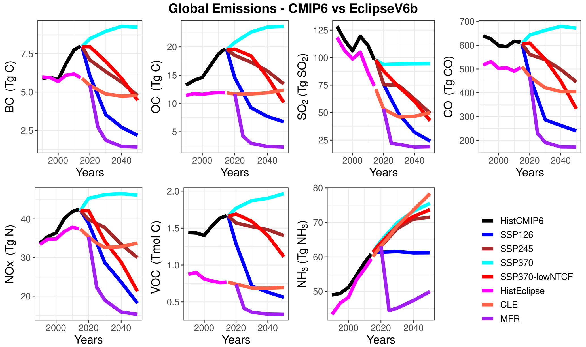
查看英文题注
Figure 1Global recent past and future CMIP6 and Eclipse V6b anthropogenic emissions for different pollutants and scenarios.
2.3 模拟试验
为了为AMAP评估报告（AMAP，2021）做出贡献，GISS-E2.1模型参与了AMIP类型的模拟，旨在评估近期北极空气污染和气候变化的趋势，以及完全耦合的气候模拟。五个完全耦合的地球系统模型 (ESM) 模拟了北极 (>60∘ N) 以及全球未来 (2015-2050) 大气成分和气候的变化。我们进行了两种 AMIP 型模拟，一种将风推至 NCEP（AMAP 中的标准 AMIP 型模拟），另一种采用自由变化的风，两种模拟均使用规定的海表温度和海冰（表 1）。松弛约束从第一个模型层延伸至 10 hPa，这是 NCEP 输入的顶部。在完全耦合模拟中，我们进行了两组模拟，每组模拟有 3 个整体成员，使用 CLE 和 MFR 发射场景。这两组场景中的每个模拟都是从最近过去的一组三个完全耦合的整体模拟（1990-2014）中初始化的，以确保从 CMIP6 到 Eclipse 发射的顺利延续。
查看此段英文原文
In order to contribute to the AMAP assessment report (AMAP, 2021), the GISS-E2.1 model participated with AMIP-type simulations, which aim to assess the trends of Arctic air pollution and climate change in the recent past, as well as with fully coupled climate simulations. Five fully coupled Earth system models (ESMs) simulated the future (2015–2050) changes in atmospheric composition and climate in the Arctic (>60∘ N), as well as over the globe. We have carried out two AMIP-type simulations, one with winds nudged to NCEP (standard AMIP-type simulation in AMAP) and one with freely varying winds, where both simulations used prescribed SSTs and sea ice (Table 1). The nudging extends from the first model layer up to 10 hPa, which is the top of the NCEP input. In the fully coupled simulations, we carried out two sets of simulations, each with three ensemble members, that used the CLE and MFR emission scenarios. Each simulation in these two sets of scenarios was initialized from a set of three fully coupled ensemble recent past simulations (1990–2014) to ensure a smooth continuation from CMIP6 to Eclipse emissions.
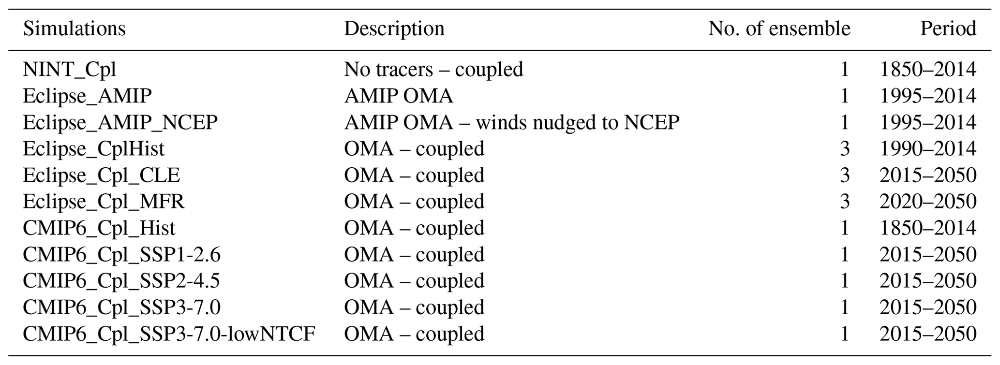
查看英文题注
Table 1GISS-E2.1 simulations carried out in the Eclipse and CMIP6 ensembles.
除了AMAP模拟之外，我们还进行了CMIP6类型的模拟，以便将气候气溶胶负荷及其对辐射强迫和气候影响的影响与AMAP模拟进行比较。我们在 CMIP6 模拟中使用了代表不同排放缓解水平的 SSP1-2.6、2-4.5、3-7.0 和 3-7.0-lowNTCF 情景。 SSP1和SSP3定义了气候变化适应和减缓所面临的高或低社会经济挑战的各种组合，而SSP2描述了这两种类型的中等挑战，旨在代表未来的发展趋势在任何方面都不是极端的，而是遵循中间道路（Rao等人，2017）。 SSP1-2.6情景的目标是实现2100年辐射强迫水平为2.6 W m⁻²，与工业化前水平相比，将温度升高保持在2 °C以下。 SSP2-4.5描述了到2100年辐射强迫水平为4.5 W m⁻²的中间社会经济家庭。SSP3-7.0情景是中高参考情景。 SSP3-7.0-lowNTCF 是 SSP3-7.0 情景的变体，减少了近期气候强迫力 (NTCF) 排放。 SSP3-7.0 情景的甲烷和空气污染前体排放量最高，而 SSP3-7.0-lowNTCF 研究了气溶胶和化学模型比对项目的替代途径（AerChemMIP：Collins 等人，2017 年），显示出非常低的甲烷、气溶胶和对流层臭氧前体排放量 - 大约与 SSP1-2.6 一致。如表 1 所示，我们进行了 1850 年至 2014 年的一次瞬态全耦合仿真以及一些未来场景。
查看此段英文原文
In addition to the AMAP simulations, we have also conducted CMIP6-type simulations in order to compare the climate aerosol burdens and their impacts on radiative forcing and climate impacts with those from the AMAP simulations. We have used the SSP1-2.6, 2-4.5, 3-7.0, and 3-7.0-lowNTCF scenarios representing different levels of emission mitigations in the CMIP6 simulations. SSP1 and SSP3 define various combinations of high or low socioeconomic challenges to climate change adaptation and mitigation, while SSP2 describes medium challenges of both kinds and is intended to represent a future in which development trends are not extreme in any of the dimensions but rather follow middle-of-the-road pathways (Rao et al., 2017). SSP1-2.6 scenario aims to achieve a 2100 radiative forcing level of 2.6 W m−2, keeping the temperature increase below 2 ∘C compared to the preindustrial levels. The SSP2-4.5 describes a middle-of-the-road socioeconomic family with a 4.5 W m−2 radiative forcing level by 2100. The SSP3-7.0 scenario is a medium–high reference scenario. SSP3-7.0-lowNTCF is a variant of the SSP3-7.0 scenario with reduced near-term climate forcer (NTCF) emissions. The SSP3-7.0 scenario has the highest methane and air pollution precursor emissions, while SSP3-7.0-lowNTCF investigates an alternative pathway for the Aerosols and Chemistry Model Intercomparison Project (AerChemMIP: Collins et al., 2017), exhibiting very low methane, aerosol, and tropospheric-ozone precursor emissions – approximately in line with SSP1-2.6. As seen in Table 1, we have conducted one transient fully coupled simulation from 1850 to 2014 and a number of future scenarios.
我们采用了规定的全球和年平均温室气体（二氧化碳和甲烷）浓度，假设从 2019 年到 2050 年全球平均温度每十年线性增加 0.2 °C，这与 SSP2-4.5 情景的模拟变暖速率大致一致（AMAP，2021 年）。
查看此段英文原文
We have employed prescribed global and annual mean greenhouse (CO2 and CH4) concentrations, where a linear increase in global mean temperature of 0.2 ∘C per decade from 2019 to 2050 was assumed, which is approximately in line with the simulated warming rates for the SSP2-4.5 scenario (AMAP, 2021).
2.4 观测资料
GISS-E2.1 系综已根据 BC、有机气溶胶（OC 和二次有机气溶胶 (SOA) 的总和，在本文的其余部分中称为 OA）和 SO₄²⁻ 的表面观测进行了评估； 550 nm 处的地面和卫星 AOD； 1995-2014年期间地表气温、降水、海面温度、海冰范围、云量以及液体和冰水含量的地面和卫星观测。用于评估模拟气溶胶水平的地面监测站已列于补充材料的表S1和S2中。
查看此段英文原文
The GISS-E2.1 ensemble has been evaluated against surface observations of BC, organic aerosols (sum of OC and secondary organic aerosols (SOA), referred to as OA in the rest of the paper) and SO42-; ground-based and satellite-derived AOD at 550 nm; and surface and satellite observations of surface air temperature, precipitation, sea surface temperature, sea-ice extent, cloud fraction, and liquid and ice water content in 1995–2014 period. The surface monitoring stations used to evaluate the simulated aerosol levels have been listed in Tables S1 and S2 in the Supplement.
2.4.1 气溶胶
特定颗粒物 (PM)、BC、SO₄²⁻ 和 (OA) 的测量来自三个主要网络：阿拉斯加的受保护视觉环境机构间监测 (IMPROVE)（北极 (>60∘ N) 的 IMPROVE 测量均位于阿拉斯加）、欧洲的欧洲监测和评估计划 (EMEP) 以及加拿大的加拿大气溶胶基线测量 (CABM)（表 S1 和 S2）。除了这些监测网络之外，本研究还使用了各个北极站的 BC、OA 和 SO₄²⁻ 测量值。各个北极站是阿拉斯加的费尔班克斯和乌特恰格维克（IMPROVE 的一部分，尽管它们的测量值是从其 PI 获得的）；格鲁韦巴代特和齐柏林山（新奥勒松），挪威；格陵兰岛维勒姆研究站；努纳武特地区的警报（后者是 WMO 全球大气监视计划的一个观测站，也是 CABM 的一部分）。补充材料中简要描述了测量技术。
查看此段英文原文
Measurements of speciated particulate matter (PM), BC, SO42-, and (OA) come from three major networks: the Interagency Monitoring of Protected Visual Environments (IMPROVE) for Alaska (the IMPROVE measurements that are in the Arctic (>60∘ N) are all in Alaska), the European Monitoring and Evaluation Programme (EMEP) for Europe, and the Canadian Aerosol Baseline Measurement (CABM) for Canada (Tables S1 and S2). In addition to these monitoring networks, BC, OA, and SO42- measurements from individual Arctic stations were used in this study. The individual Arctic stations are Fairbanks and Utqiagvik, Alaska (part of IMPROVE, though their measurements were obtained from their PIs); Gruvebadet and Zeppelin mountain (Ny-Ålesund), Norway; Villum Research Station, Greenland; and Alert, Nunavut (with the latter being an observatory in the Global Atmosphere Watch Programme of the WMO and a part of CABM). The measurement techniques are briefly described in the Supplement.
使用 Ångström 公式（Ångström，1929）将 AErosol RObotic NETwork（AERONET，Holben 等人，1998）在 500 nm 处的 AOD 插值至 550 nm AOD。我们还使用了 Sogacheva 等人开发的新合并 AOD 产品。 (2020) 使用来自 10 种不同卫星产品的 AOD。根据 Sogacheva 等人的说法。 (2020)，该合并产品可以更好地表示 AOD 的时间和空间分布。然而，值得注意的是，AERONET 和卫星产品的每月观测汇总取决于数据的可用性，并且当一个月内仅存在很少的数据点时，不太可能是整个月的真实观测汇总。此外，许多极轨卫星在任意一天进行一次观测，并且通常是在当地时间的同一时间进行观测。尽管如此，这些数据集是目前可用于评估模型性能的关键观察结果。有关 AOD 观测结果不确定性的信息可以在之前的研究中找到（例如，Sayer et al., 2018；Sayer and Knobelspiesse, 2019；Wei et al., 2019；Schutgens et al., 2020；Schutgens, 2020；Sogacheva et al., 2020）。
查看此段英文原文
AOD at 500 nm from the AErosol RObotic NETwork (AERONET, Holben et al., 1998) was interpolated to 550 nm AOD using the Ångström formula (Ångström, 1929). We also used a new merged AOD product developed by Sogacheva et al. (2020) using AOD from 10 different satellite-based products. According to Sogacheva et al. (2020), this merged product could provide a better representation of temporal and spatial distribution of AOD. However, it is important to note that the monthly aggregates of observations for both AERONET and the satellite products depend on availability of data and are not likely to be the true aggregate of observations for a whole month when only few data points exist during the course of a month. In addition, many polar-orbiting satellites take one observation during any given day and typically at the same local time. Nevertheless, these datasets are key observations currently available for evaluating model performances. Information about the uncertain nature of AOD observations can be found in previous studies (e.g., Sayer et al., 2018; Sayer and Knobelspiesse, 2019; Wei et al., 2019; Schutgens et al., 2020, Schutgens, 2020; Sogacheva et al., 2020).
2.4.2 地表气温、降水和海冰
本研究中使用的地表气温和降水观测数据来自特拉华大学网格化月平均数据集（UDel；Willmott 和 Matsuura，2001 年）。 UDel 的 0.5∘ 分辨率网格数据集基于从各种来源获得的基于站点的测量值的插值，这些来源包括全球历史气候网络、Legates 和 Willmott 档案等。英国气象局哈德利中心的海冰和海面温度（HadISST；Rayner 等，2003）用于评估海冰和海温的模型模拟。 HadISST 数据是其前身全球海冰和海面温度 (GISST) 数据的改进版本。 HadISST 数据是利用来自各种数据源的信息构建的，例如英国气象局海洋数据库、国际综合海洋大气数据集、被动微波遥感检索和海冰图。
查看此段英文原文
Surface air temperature and precipitation observations used in this study are from University of Delaware gridded monthly mean datasets (UDel; Willmott and Matsuura, 2001). UDel's 0.5∘ resolution gridded datasets are based on interpolations from station-based measurements obtained from various sources including the Global Historical Climate Network, the archive of Legates and Willmott, and others. The Met Office Hadley Centre's sea ice and sea surface temperature (HadISST; Rayner et al., 2003) was used for evaluating model simulations of sea ice and SSTs. HadISST data are an improved version of their predecessor known as global sea ice and sea surface temperature (GISST). HadISST data are constructed using information from a variety of data sources such as the Met Office marine database, International Comprehensive Ocean-Atmosphere Data Set, passive microwave remote sensing retrieval, and sea-ice charts.
2.4.3 云量、云液态水和云冰水的卫星观测
NOAA 和 EUMETSAT 极轨卫星上的先进甚高分辨率辐射计 (AVHRR-2) 传感器自 20 世纪 80 年代初以来一直在飞行。这些数据有助于为科学界提供近四十年的气候数据记录。近几十年来，在改进、训练和评估这些 AVHRR 传感器的云属性检索方面取得了巨大进展。在本研究中，我们使用来自 EUMETSAT 气候监测卫星应用设施 (CM SAF) 第二版云、反照率和 AVHRR 数据的地表辐射数据集的总云量检索（CLARA-A2，Karlsson 等人，2017a）。此云属性气候数据记录适用于 1982-2018 年。 Karlsson 和 Devasthale (2018) 记录了它的优点和缺点，以及与其他类似气候数据记录的相互比较。更多数据集文档，包括算法理论基础和验证报告，可以在 Karlsson 等人中找到。 （2017b）。
查看此段英文原文
The Advanced Very High Resolution Radiometer (AVHRR-2) sensors aboard the NOAA and EUMETSAT polar-orbiting satellites have been flying since the early 1980s. These data have been instrumental in providing the scientific community with climate data records spanning nearly four decades. Tremendous progress has been made in recent decades in improving, training, and evaluating the cloud property retrievals from these AVHRR sensors. In this study, we use the retrievals of total cloud fraction from the second edition of EUMETSAT's Climate Monitoring Satellite Application Facility (CM SAF) Cloud, Albedo and surface Radiation dataset from AVHRR data (CLARA-A2, Karlsson et al., 2017a). This cloud property climate data record is available for the period 1982–2018. Its strengths and weaknesses, and inter-comparison with the other similar climate data records are documented in Karlsson and Devasthale (2018). Further dataset documentation including algorithm theoretical basis and validation reports can be found in Karlsson et al. (2017b).
云液体和冰水路径估计源自 CloudSat 上的云剖面雷达（Stephens 等人，2002 年），并受到 NASA A-Train 星座 MODIS-Aqua 上另一个传感器的约束（Platnick 等人，2015 年），用于模型评估。这些 2b 级检索可通过 2B-CWC-RVOD 产品（版本 5）获得，对 2007-2016 年期间进行了分析。使用此受限版本代替仅雷达版本，因为它使用来自 MODIS 的有关可见云光学深度的附加信息，从而更好地估计云液态水路径。由于这一限制，数据仅适用于日光条件，因此在相应的冬季极地地区缺少数据。这些检索的理论基础可以在 http://www.cloudsat.cira.colostate.edu/sites/default/files/products/files/2B-CWC-RVOD_PDICD.P1_R05.rev0_.pdf 中找到（最后访问日期：2020 年 10 月 26 日）。作为主动云雷达，CloudSat 提供的轨道幕布宽度仅为约 1.4 公里。因此，数据按 5∘×5∘ 网格化，以避免过多的间隙或斑块并提供稳健的统计数据。
查看此段英文原文
Cloud liquid and ice water path estimates derived from the cloud profiling radar aboard CloudSat (Stephens et al., 2002) and constrained with another sensor aboard NASA's A-Train constellation, MODIS-Aqua (Platnick et al., 2015), are used for the model evaluation. These Level 2b retrievals, available through the 2B-CWC-RVOD product (Version 5), for the period 2007–2016 are analyzed. This constrained version is used instead of its radar-only counterpart, as it uses additional information about visible cloud optical depths from MODIS, leading to better estimates of cloud liquid water paths. Because of this constraint the data are available only for the daylit conditions and, hence, are missing over the polar regions during the respective winter seasons. The theoretical basis for these retrievals can be found at http://www.cloudsat.cira.colostate.edu/sites/default/files/products/files/2B-CWC-RVOD_PDICD.P1_R05.rev0_.pdf (last access: 26 October 2020). Being an active cloud radar, CloudSat provides orbital curtains with a swath width of just about 1.4 km. Therefore, the data are gridded at 5∘×5∘ to avoid too many gaps or patchiness and to provide robust statistics.
3 结果
3.1 模式评估
将模拟与 BC、OA、SO₄²⁻ 和 AOD 的表面测量值以及地表气温、降水、海面温度、海冰范围、总云量、液态水路径和冰水路径的表面和卫星测量值进行比较，如第 1 节所述。 2.4、通过计算相关系数（r）和归一化平均偏差（NMB）。 OA是指初级有机碳(OC)和次级有机气溶胶(SOA)的总和。
查看此段英文原文
The simulations are compared against surface measurements of BC, OA, SO42-, and AOD, as well as surface and satellite measurements of surface air temperature, precipitation, sea surface temperature, sea-ice extent, total cloud fraction, liquid water path, and ice water path described in Sect. 2.4, by calculating the correlation coefficient (r) and normalized mean bias (NMB). OA refers to the sum of primary organic carbon (OC) and secondary organic aerosol (SOA).
3.1.1 气溶胶
最近的模拟针对的是 BC、OA、SO4 和 AOD（表 2）以及可用的表面测量结果。每个站的每月观测和模拟时间序列按物种进行累积，以获得完整的北极时间序列数据，其中还包括空间变化，用于模型评估。除表 2 外，图 2 还显示了 550 nm 处观测和模拟的 BC、OA、SO₄²⁻ 和 AOD 月地表浓度的气候平均值（1995-2014 年）（注意 AOD 为 2008 年、2009 年和 2014 年的平均值）。表中使用了 2008 年、2009 年和 2014 年的 AOD 观测数据。为了使比较与 AMAP 评估报告（AMAP，2021）中进行的多模型评估保持一致。我们还提供了 NMB 的空间分布，计算为图 3 中 BC、OA、SO4 和 AOD 所有模拟的平均值。各个站点的统计数据在补充材料的表 S3-S6 中提供。
查看此段英文原文
The recent past simulations are for BC, OA, SO4, and AOD (Table 2) against available surface measurements. The monthly observed and simulated time series for each station are accumulated per species in order to get full Arctic time series data, which also include spatial variation, to be used for the evaluation of the model. In addition to Table 2, the climatological mean (1995–2014) of the observed and simulated monthly surface concentrations of BC, OA, SO42-, and AOD at 550 nm (note that AOD is averaged over 2008, 2009, and 2014) is shown in Fig. 2. The AOD observation data for years 2008, 2009, and 2014 are used in order to keep the comparisons in line with the multi-model evaluations being carried out in the AMAP assessment report (AMAP, 2021). We also provide spatial distributions of the NMB, calculated as the mean of all simulations for BC, OA, SO4, and AOD in Fig. 3. The statistics for the individual stations are provided in Tables S3–S6 in the Supplement.
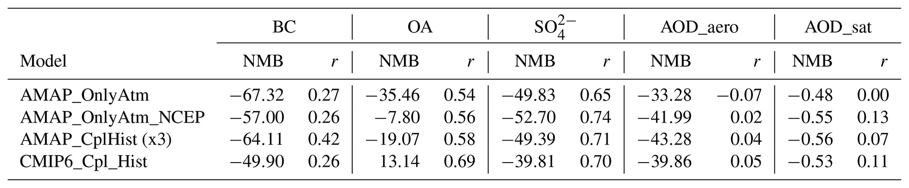
查看英文题注
Table 2Annual mean normalized mean bias (NMB: %) and correlation coefficients (r) for the recent past simulations in the GISS-E2.1 model ensemble during 1995–2014 for BC, OA, SO42-, and 2008/09–2014 for AOD550 from AERONET and satellites.
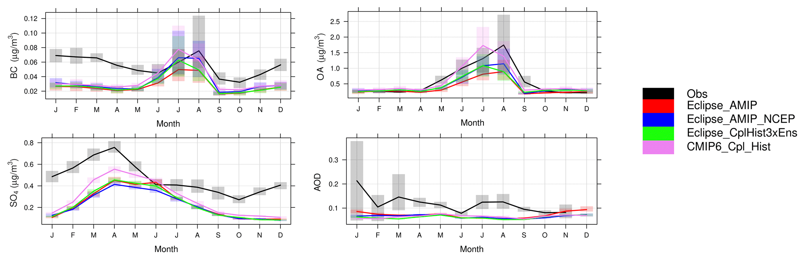
查看英文题注
Figure 2Observed and simulated Arctic climatological (1995–2014) monthly BC, OA, SO42-, and AERONET AOD at 550 nm (2008/09–2014), along with the interannual variation shown in bars. The data present monthly accumulated time series for all stations that are merged together.
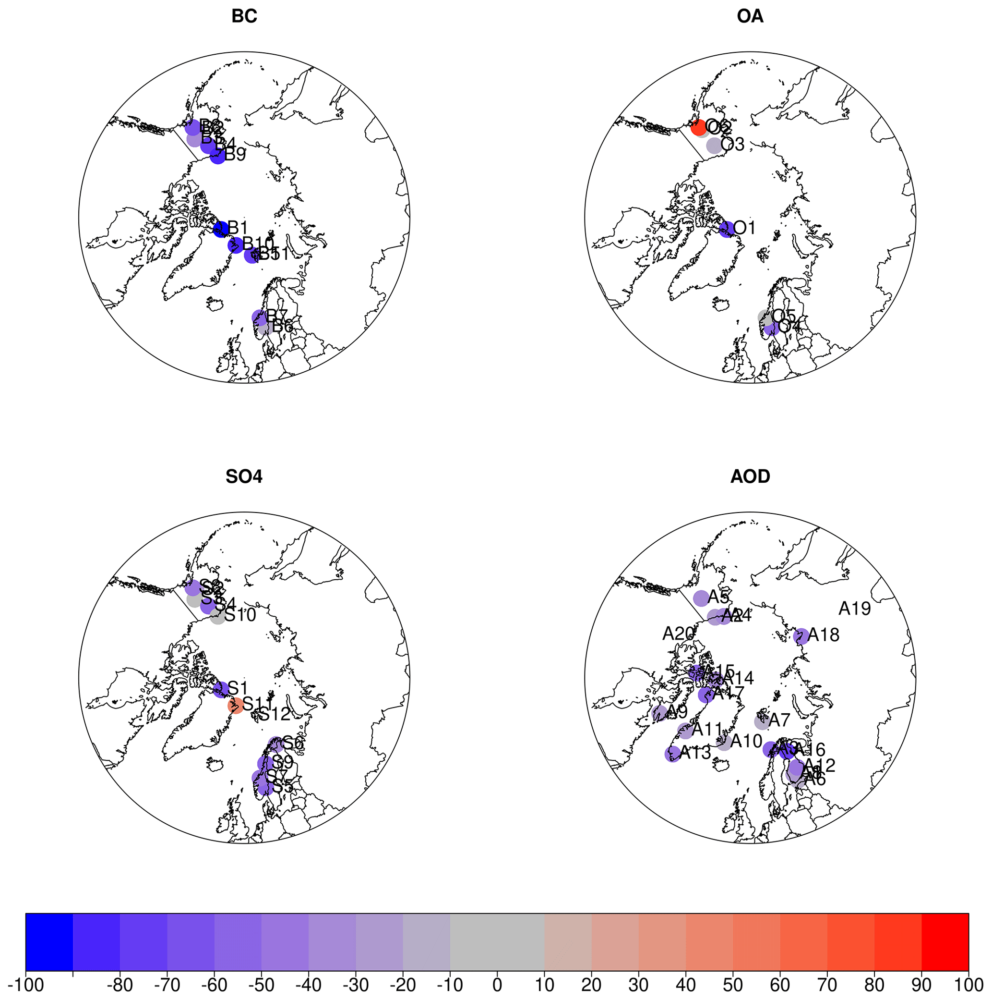
查看英文题注
Figure 3Spatial distribution of normalized mean bias (NMB, in %) for climatological mean (1995–2014) BC, OA, SO42-, and AOD at monitoring stations, calculated as the mean of all recent past simulations.
结果显示总体上低估了北极上空的气溶胶种类，如下所述。所有北极站的地表BC水平都被低估了15%至90%。地表 OA 水平也被低估了 -5% 至 -70%，除了 Kårvatn (B5) 上轻微高估 <1% 以及 Trapper Creek (B6) 上 90% 的大幅高估之外。地表 SO₄²⁻ 浓度也一直被低估，从 -10% 到 -70%，但格陵兰岛东北部的 Villum 研究站 (S11) 除外，该站的浓度被高估了 45%。最后，所有站点的 AOD 也被低估了 20% 到 60%。许多先前的研究也报告了高纬度地区的这种低估情况（例如，Skeie等，2011；Eckhardt等，2015；Lund等，2017、2018；Schacht等，2019；Turnock等，2020），指出了多种原因，包括排放清单的不确定性、湿沉降和干沉降的误差方案、新气溶胶形成过程的缺失或代表性不足、全球模型的粗分辨率导致排放和模拟气象学以及粗模型网格单元中点观测的表示错误。特诺克等人。 （2020）评估了 CMIP6 模型（包括 GISS-E2.1 ESM）中的空气污染物浓度，发现 CMIP6 模型中观测到的表面 PM2.5 浓度始终被低估高达 10 µg m−3，特别是在北半球冬季，在自然排放源区域和极地地区附近模型多样性最大。
查看此段英文原文
Results showed overall an underestimation of aerosol species over the Arctic, as discussed below. Surface BC levels are underestimated at all Arctic stations from 15 % to 90 %. Surface OA levels are also underestimated from −5 % to −70 %, except for a slight overestimation of <1 % over Kårvatn (B5) and a large overestimation of 90 % over Trapper Creek (B6). Surface SO42- concentrations are also consistently underestimated from −10 % to −70 %, except for Villum Research Station (S11) over northeastern Greenland where there is an overestimation of 45 %. Finally, AODs are also underestimated over all stations from 20 % to 60 %. Such underestimations at high latitudes have also been reported by many previous studies (e.g., Skeie et al., 2011; Eckhardt et al., 2015; Lund et al., 2017, 2018; Schacht et al., 2019; Turnock et al., 2020), pointing to a variety of reasons including uncertainties in emission inventories, errors in the wet and dry deposition schemes, the absence or underrepresentation of new aerosol formation processes, and the coarse resolution of global models leading to errors in emissions and simulated meteorology, as well as in representation of point observations in coarse model grid cells. Turnock et al. (2020) evaluated the air pollutant concentrations in the CMIP6 models, including the GISS-E2.1 ESM, and found that observed surface PM2.5 concentrations are consistently underestimated in CMIP6 models by up to 10 µg m−3, particularly for the Northern Hemisphere winter months, with the largest model diversity near natural emission source regions and the polar regions.
BC 水平在模拟中被大大低估了 50% (CMIP6_Cpl_Hist) 到 67% (Eclipse_AMIP)。由于 CMIP6 排放清单中的排放量较高，与 Eclipse V6b 模拟相比，CMIP6 模拟的偏差较低（图 1）。在 Eclipse V6b 模拟中，Eclipse_AMIP_NCEP 模拟计算出最低偏差 (−57%)，而自由气候和耦合模拟则显示出较大的低估 (>62%)，这可归因于使用松弛约束风时对北极运输的更好模拟。 Eclipse 模拟还表明，与 AMIP 型自由气候模拟（AMIP-OnlyAtm：NMB=-67 %）相比，耦合模拟的偏差稍小（NMB=-63 %）。该模型很难再现观测水平的气候月变化，r 值约为 0.3。 BC水平主要在冬季和春季被低估，这可归因于BC的人为排放量的低估，而大多数模拟都很好地捕捉到了夏季水平（图2）。
查看此段英文原文
The BC levels are largely underestimated in simulations by 50 % (CMIP6_Cpl_Hist) to 67 % (Eclipse_AMIP). The CMIP6 simulations have lower bias compared to Eclipse V6b simulations due to higher emissions in the CMIP6 emission inventory (Fig. 1). Within the Eclipse V6b simulations, the lowest bias (−57 %) is calculated for the Eclipse_AMIP_NCEP simulation, while the free climate and coupled simulations showed a larger underestimation (>62 %), which can be attributed to a better simulation of transport to the Arctic when nudged winds are used. The Eclipse simulations also show that the coupled simulations had slightly smaller biases (NMB=-63 %) compared to the AMIP-type free climate simulation (AMIP-OnlyAtm: NMB=-67 %). The climatological monthly variation of the observed levels is poorly reproduced by the model with r values around 0.3. BC levels are mainly underestimated in winter and spring, which can be attributed to the underestimation of the anthropogenic emissions of BC, while the summer levels are well captured by the majority of the simulations (Fig. 2).
Eclipse 系综将表面 OA 浓度低估了 8% (Eclipse_AMIP_NCEP) 至 35% (Eclipse_AMIP)，而 CMIP6_Cpl_Hist 模拟则高估了表面 OA 13%。 Eclipse 模拟表明，松弛约束风可以更好地代表北极的运输，而与 AMIP 型自由气候模拟 (AMIP-OnlyAtm) 相比，耦合模拟的偏差更小，与 BC 类似。合理模拟了观测浓度的气候月变化，r值在0.51~0.69之间（表2和图2）。如图 S1 所示，与人为（4-9 倍）和生物质燃烧（2-3 倍）OA 相比，OA 水平主要由生物 SOA 主导，特别是通过 α-蒎烯（单萜）氧化。虽然 OC 和 BC 的排放源几乎相似，但这种生物主导的 OA 季节性也解释了为什么模拟的 BC 季节性没有得到很好的捕捉，这表明这些物种的人为排放量被低估，特别是在冬季。还应该指出的是，GISS-E2.1 不包括除 DMS 之外的海洋 VOC 排放，而这些缺失的 VOC（例如异戊二烯和单萜）被认为是北极夏季气溶胶水平的重要来源（Orellana 等人，2011 年；Karl 等人，2013 年；Schmale 等人，2021 年）。
查看此段英文原文
Surface OA concentrations are underestimated from 8 % (Eclipse_AMIP_NCEP) to 35 % (Eclipse_AMIP) by the Eclipse ensemble, while the CMIP6_Cpl_Hist simulation overestimated surface OA by 13 %. The Eclipse simulations suggest that the nudged winds lead to a better representation of transport to the Arctic, while the coupled simulations had smaller biases compared to the AMIP-type free climate simulation (AMIP-OnlyAtm), similar to BC. The climatological monthly variation of the observed concentrations are reasonably simulated, with r values between 0.51 and 0.69 (Table 2 and Fig. 2). As can be seen in Fig. S1, the OA levels are dominated by the biogenic SOA, in particular via α-pinene (monoterpenes) oxidation, compared to anthropogenic (by a factor of 4–9) and biomass burning (by a factor of 2–3) OA. While OC and BC are emitted almost from similar sources, this biogenic-dominated OA seasonality also explains why simulated BC seasonality is not as well captured, suggesting the underestimations in the anthropogenic emissions of these species, in particular during the winter. It should also be noted that GISS-E2.1 does not include marine VOC emissions except for DMS, while these missing VOCs such as isoprene and monoterpenes are suggested to be important sources for the summertime aerosol levels over the Arctic (Orellana et al., 2011; Karl et al., 2013; Schmale et al., 2021).
与 BC 水平相比，模拟表面 SO₄²⁻ 水平的偏差较小；然而，它们仍然被低估了 40% (CMIP6_Cpl_Hist) 到 53% (Eclipse_AMIP_NCEP)。与 Eclipse_AMIP (NMB=-50%) 相比，Eclipse_AMIP_NCEP 模拟的偏差较高 (NMB=-53%)，这可能是由于松弛约束版本模拟的云比例较高（参见第 3.1.6 节），从而导致云内 SO₄²⁻ 产量较高。所有模拟均合理地模拟了观测到的 SO₄²⁻ 浓度的气候月变化（r=0.65–0.74）。 GISS-E2.1系统很好地捕获了观测到的春季最大值，但所有季节都被低估，主要表明人为SO₂排放量被低估（图2），以及模拟的云量，在冬季和过渡季节有较高的正偏差，而在夏季，云量被很好地捕获，但略有低估。北极地区 AERONET 站上空的晴空 AOD 被低估了 33% (Eclipse_AMIP) 到 47% (Eclipse_CplHist1)。与基于卫星的 AOD 产品相比，也发现了类似的负面偏差（表 2）。与 AERONET AOD 相比，r 值在 -0.07 到 0.07 之间，与卫星 AOD 相比，r 值在 0 到 0.13 之间，无法很好地捕获气候每月变化。模拟不能代表观测到的 AERONET AOD 的气候月变化（图 2）。
查看此段英文原文
Surface SO42- levels are simulated with a smaller bias compared to the BC levels; however, they are still underestimated by 40 % (CMIP6_Cpl_Hist) to 53 % (Eclipse_AMIP_NCEP). The Eclipse_AMIP_NCEP simulation is biased higher (NMB=-53 %) compared to the Eclipse_AMIP (NMB=-50 %), probably due to higher cloud fraction simulated by the nudged version (see Sect. 3.1.6), leading to higher in-cloud SO42- production. The climatological monthly variation of observed SO42- concentrations is reasonably simulated in all simulations (r=0.65–0.74). The observed springtime maximum is well captured by the GISS-E2.1 ensemble, with underestimations in all seasons, mainly suggesting underestimations in anthropogenic SO2 emissions (Fig. 2), as well as simulated cloud fractions, which have high positive bias in winter and transition seasons, while in summer the cloud fraction is well captured with a slight underestimation. The clear-sky AOD over the AERONET stations in the Arctic region is underestimated by 33 % (Eclipse_AMIP) to 47 % (Eclipse_CplHist1). Similar negative biases are found with comparison to the satellite based AOD product (Table 2). The climatological monthly variation is poorly captured with r values between −0.07 and 0.07 compared to AERONET AOD and between 0 and 0.13 compared to satellite AOD. The simulations could not represent the climatological monthly variation of the observed AERONET AODs (Fig. 2).
3.1.2 气候变量
根据一组气候变量对不同的模拟进行评估，统计数据显示在表 3a 和 b 以及图 3 和图 3 中。 4 和 5。在 AMIP 模拟中，气候平均（1995-2014 年）每月的北极表面气温被略微高估了 0.55 °C，而耦合海洋模拟则低估了地表气温，最多为 -0.17 °C。所有模拟都能够重现 r 值为 0.99 或更高的每月气候变化（图 4）。结果表明，GISS-E2.1 模型低估了吸收气溶胶 (BC) 和散射气溶胶（OC 和 SO₄²⁻），这意味着这些偏差可以部分抵消气溶胶-辐射相互作用对辐射强迫的影响。再加上地表温度的极低偏差，表明与云间接影响和温室气体强迫相比，人为气溶胶通过辐射对北极气候的影响并不是主要驱动因素。所有模拟均将月平均降水量低估了约 50%（表 3a），其中夏季和秋季偏差最大（图 4）。所有模拟都很好地模拟了观测到的每月气候平均变化，r 值在 0.80 到 0.90 之间。
查看此段英文原文
The different simulations are evaluated against a set of climate variables, and the statistics are presented in Table 3a and b and in Figs. 4 and 5. The climatological mean (1995–2014) monthly Arctic surface air temperatures are slightly overestimated by up to 0.55 ∘C in the AMIP simulations, while the coupled ocean simulations underestimate the surface air temperatures by up to −0.17 ∘C. All simulations were able to reproduce the monthly climatological variation with r values of 0.99 and higher (Fig. 4). Results show that both absorbing (BC) and scattering aerosols (OC and SO42-) are underestimated by the GISS-E2.1 model, implying that these biases can partly cancel out their impacts on radiative forcing due to aerosol–radiation interactions. This, together with the very low biases in surface temperatures, suggests that the effects of the anthropogenic aerosols on the Arctic climate via radiation are not the main driver in comparison to cloud indirect effects and forcing from greenhouse gases. The monthly mean precipitation has been underestimated by around 50 % by all simulations (Table 3a), with the largest biases during the summer and autumn (Fig. 4). The observed monthly climatological mean variation was very well simulated by all simulations, with r values between 0.80 and 0.90.
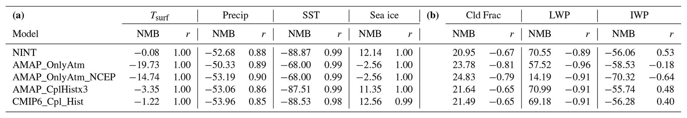
查看英文题注
Table 3(a) Annual normalized mean biases (NMB: %) and correlation coefficients (r) for the recent past simulations in the GISS-E2.1 model ensemble in 1995–2014 for surface air temperature (Tsurf) and sea surface temperature (SST) in units of degree Celsius (∘C), precipitation (Precip), and sea-ice fraction (Sea ice). (b) Annual mean normalized mean biases (NMB: %) and correlation coefficients (r) for the recent past simulations in the GISS-E2.1 model ensemble in 1995–2014 for total cloud fraction (Cld Frac), liquid water path (LWP), and ice water path (IWP) in units of percent (%).
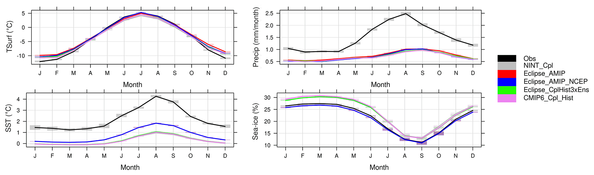
查看英文题注
Figure 4Observed and simulated Arctic climatological (1995–2014) surface air temperature, precipitation, sea surface temperature, and sea ice, along with the interannual variation shown in bars. Obs denotes the UDel dataset for surface air temperature and precipitation, and HadISST denotes that for sea surface temperature and sea-ice extent. Note that the two AMIP runs (blue and red lines) for the SST and sea ice are on top of each other as they use that data to run as input.
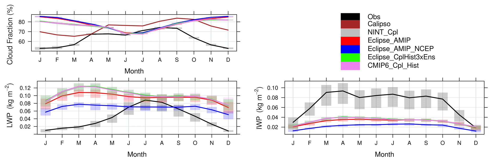
查看英文题注
Figure 5Observed and simulated Arctic climatological total cloud fraction (1995–2014 mean), liquid water path (2007–2014 mean), and ice water path (2007–2014 mean), along with the interannual variation shown in bars. Obs denote CLARA-A2 for the cloud fractions and CloudSat for the LWP and IWP.
海洋耦合模拟将北极海表温度低估至-1.96 °C，而仅大气模拟则将海表温度低估了-1.5 °C（表3a）。仅大气模拟中的负偏差是由于用于驱动模型（HadISST 和 NOAA-OI2 的组合产品（Reynolds et al., 2002））和评估模型（Rayner et al., 2003）（仅为 HadISST）的不同数据集造成的。 r 值高于 0.99（表 3a，图 4），很好地捕捉到了每月的气候平均变化，几乎所有季节都有类似的寒冷偏差。所有耦合模拟均高估了海冰范围约 12%，而 AMIP 型 Eclipse 模拟则略微低估了 3%（表 3a）。观察到的变化也被很好地捕捉到，r 值非常高。冬季和春季的偏差略高于夏季和秋季的偏差（图4）。
查看此段英文原文
Arctic SSTs are underestimated by the ocean-coupled simulation up to −1.96 ∘C, while the atmosphere-only runs underestimated SSTs by −1.5 ∘C (Table 3a). The negative bias in atmosphere-only simulations is due to the different datasets used to drive the model, which is a combined product of HadISST and NOAA-OI2 (Reynolds et al., 2002), and to evaluate the model (Rayner et al., 2003), which is only HadISST. The monthly climatological mean variation is well captured with r values above 0.99 (Table 3a, Fig. 4), with a similar cold bias in almost all seasons. The sea-ice extent was overestimated by all coupled simulations by about 12 %, while the AMIP-type Eclipse simulations slightly underestimated the extent by 3 % (Table 3a). The observed variation was also very well captured with very high r values. The winter and spring biases were slightly higher compared to the summer and autumn biases (Fig. 4).
在延长的冬季（10 月至 2 月）期间，所有模拟均高估了气候学（1995-2014 年）平均总云量 21% 至 25%，其中模拟的季节性与 AVHRR CLARA-A2 观测相比是反相关的，而在夏季，无论观测数据参考如何，都可以看到良好的相关性。最大偏差是通过仅大气模拟进行模拟的，而松弛约束模拟具有最大偏差 (NMB=25%)。耦合模型模拟更接近最近的观测结果。另一方面，年平均云量的气候学最好是通过仅松弛约束大气模拟（Eclipse_AMIP_NCEP）来模拟，r值为0.40，而其他模拟表现不佳（r=-0.17至+0.10），除了夏季偏差最低（图5）。然而，针对 CALIPSO 数据的评估显示偏差要小得多（NMB=+3 % 至 +6 %）。这是因为，与搭载主动激光雷达仪器（CALIOP）的CALIPSO卫星相比，CLARA-A2数据集难以将寒冷而明亮的冰雪表面与云层分离，从而低估了北极冬季的云量。这里两个数据集都用于评估，因为它们提供了不同的观测视角并涵盖了卫星观测预期的典型不确定性范围。此外，虽然 CLARA-A2 涵盖了当前气候情景下的整个评估期，但 CALIPSO 观测数据基于涵盖 2007-2016 年期间的 10 年数据。
查看此段英文原文
All simulations overestimate the climatological (1995–2014) mean total cloud fraction by 21 % to 25 % during the extended winter months (October through February), where the simulated seasonality is anti-correlated in comparison to AVHRR CLARA-A2 observations, whereas a good correlation is seen during the summer months irrespective of the observational data reference. The largest biases were simulated by the atmosphere-only simulations, with the nudged simulation having the largest bias (NMB=25 %). The coupled model simulations are closer to the observations during the recent past. On the other hand, the climatology of the annual-mean cloud fraction was best simulated by the nudged atmosphere-only simulation (Eclipse_AMIP_NCEP) with an r value of 0.40, while other simulations showed a poor performance (r=-0.17 to +0.10), except for the summer where the bias is lowest (Fig. 5). The evaluation against CALIPSO data however shows much smaller biases (NMB=+3 % to +6 %). This is because in comparison to the CALIPSO satellite that carries an active lidar instrument (CALIOP), the CLARA-A2 dataset has difficulties in separating cold and bright ice/snow surfaces from clouds, thereby underestimating the cloudiness during Arctic winters. Here both datasets are used for the evaluation as they provide different observational perspectives and cover the typical range of uncertainty expected from the satellite observations. Furthermore, while the CLARA-A2 covers the entire evaluation period in current climate scenario, CALIPSO observations are based on 10-year data covering the 2007–2016 period.
图 5 显示了 LWP 和 IWP 的模拟评估。这里必须指出的是，为了更好地估计云水含量，CloudSat 观测受到 MODIS 观测的限制，这导致北极上空黑暗的月份（10 月至 3 月）缺乏数据（见第 2.4.3 节）。因此，我们仅提供极地夏季的结果。如图 5 所示，所有模拟均高估了气候学（2007-2014 年）平均极地夏季 LWP 高达近 75%。仅针对松弛约束大气 (Eclipse_OnlyAtm_NCEP) 计算出最小偏差 (14%)，而耦合模拟的偏差为 70% 或更高。观察结果显示，LWP 逐渐增加，在 7 月达到峰值，而模型模拟了松弛约束模拟的更恒定量，以及其他配置的略有下降的趋势。所有模型模拟都高估了春季的 LWP。仅大气推动模拟往往能更好地模拟夏季（六月至九月）观测到的轻水压。无论使用何种排放数据集，耦合模拟仅更接近 7 月和 8 月期间的观测结果。
查看此段英文原文
Figure 5 shows the evaluation of the simulations with respect to LWP and IWP. It has to be noted here that to obtain a better estimate of the cloud water content, the CloudSat observations were constrained with MODIS observations, which resulted in a lack of data during the months with darkness (October–March) over the Arctic (see Sect. 2.4.3). Hence, we present the results for the polar summer months only. As seen in Fig. 5, all simulations overestimated the climatological (2007–2014) mean polar summer LWP by up to almost 75 %. The smallest bias (14 %) is calculated for the nudged atmosphere only (Eclipse_OnlyAtm_NCEP), while the coupled simulations had biases of 70 % or more. Observations show a gradual increase in the LWP, peaking in July, whereas the model simulates a more constant amount for the nudged simulation and a slightly decreasing tendency for the other configurations. All model simulations overestimate LWP during the spring months. The atmosphere-only nudged simulations tend to better simulate the observed LWP during the summer months (June through September). The coupled simulations, irrespective of the emission dataset used, are closer to observations only during the months of July and August.
与 LWP 相比，气候学（2007-2014 年）平均极地夏季 IWP 的模拟稍好，偏差在 -60% 以内，但松弛约束 Eclipse (Eclipse_AMIP_NCEP) 模拟 (NMB=-74%) 除外。所有模拟都很好地模拟了月变化，r 值为 0.95 或更高。在北极，极地夏季期间，地表的净云强迫信号从正变为负（Kay 和 L'Ecuyer，2013）。这种变化通常发生在五月，主要是由地表短波冷却驱动的。由于该模型合理地模拟了 LWP 的强度，特别是在夏季，因此模型中的负云强迫也可以预期是现实的（例如，Gryspeerdt 等，2019）。此外，进入北极的气溶胶和污染通常发生在对流层最低层，那里在春末和夏季盛行液态水云（Stohl，2006；Law 等，2014；M. A. Thomas 等，2019）。然而，冰云与气溶胶的相互作用更为复杂，因为冰云可能具有不同的光学厚度，对流层上层主要是薄卷云，而下层云则相对较厚。如果不了解光学厚度的垂直分布，就很难推断低估 IWP 对总云强迫的潜在影响及其含义。
查看此段英文原文
The climatological (2007–2014) mean polar summer IWP is slightly better simulated compared to the LWP, with biases within −60 % with the exception of the nudged Eclipse (Eclipse_AMIP_NCEP) simulation (NMB=-74 %). All simulations simulated the monthly variation well, with r values of 0.95 and more. In the Arctic, the net cloud forcing at the surface changes sign from positive to negative during the polar summer (Kay and L'Ecuyer, 2013). This change typically occurs in May driven mainly by shortwave cooling at the surface. Since the model simulates the magnitude of the LWP reasonably, particularly in summer, the negative cloud forcing can also be expected to be realistic in the model (e.g., Gryspeerdt et al., 2019). Furthermore, the aerosol and pollution transport into the Arctic typically occurs in the lowermost troposphere where liquid water clouds are prevalent during late spring and summer seasons (Stohl, 2006; Law et al., 2014; M. A. Thomas et al., 2019). The interaction of ice clouds with aerosols is, however, more complex, as ice clouds could have varying optical thicknesses, with mainly thin cirrus in the upper troposphere and relatively thicker clouds in the layers below. Without the knowledge on the vertical distribution of optical thickness, it is difficult to infer the potential impact of the underestimation of IWP on total cloud forcing and their implications.
3.2 北极气溶胶负荷及气溶胶—辐射相互作用的辐射强迫（RFARI）
图 6 提供了不同情景和排放下最近和未来的 BC、OA 和 SO₄²⁻ 北极柱负荷。此外，表 4 显示了不同情景下 BC、OA 和 SO₄²⁻ 负荷的计算趋势，而表 5 提供了 1990-2010 年和 2030-2050 年气溶胶成分的平均负荷。 BC 和 SO₄²⁻ 负荷从 20 世纪 90 年代开始下降，而 OA 负荷保持相对稳定，尽管所有模拟中存在很大的逐年变化。所有数据都显示 2015 年之后负荷有所下降，但 SSP3-7.0 情景除外，该情景的负荷仍接近 2015 年的水平。 2000 年代 BC 和 OA 负荷的高度可变性是由于全球火灾排放数据库 (GFED) 中的生物质燃烧排放导致的，该排放尚未与无卫星时代协调一致。还应该指出的是，考虑到表面浓度计算的负偏差，特别是表 2 和 S2-S6 中报告的 AOD，这些负荷可能被低估。
查看此段英文原文
The recent past and future Arctic column burdens for BC, OA, and SO42- for the different scenarios and emissions are provided in Fig. 6. In addition, Table 4 shows the calculated trends in the burdens for BC, OA, and SO42- for the different scenarios, while Table 5 provides the 1990–2010 and 2030–2050 mean burdens of the aerosol components. The BC and SO42- burdens started decreasing from the 1990s, while the OA burden remains relatively constant, although there is large year-to-year variability in all simulations. All figures show a decrease in burdens after 2015, except for the SSP3-7.0 scenario, where the burdens remain close to the 2015 levels. The high variability in BC and OA burdens over the 2000s is due to the biomass burning emissions from the Global Fire Emissions Database (GFED), which have not been harmonized with the no-satellite era. It should also be noted that these burdens can be underestimated considering the negative biases calculated for the surface concentrations and in particular for the AODs reported in Tables 2 and S2–S6.
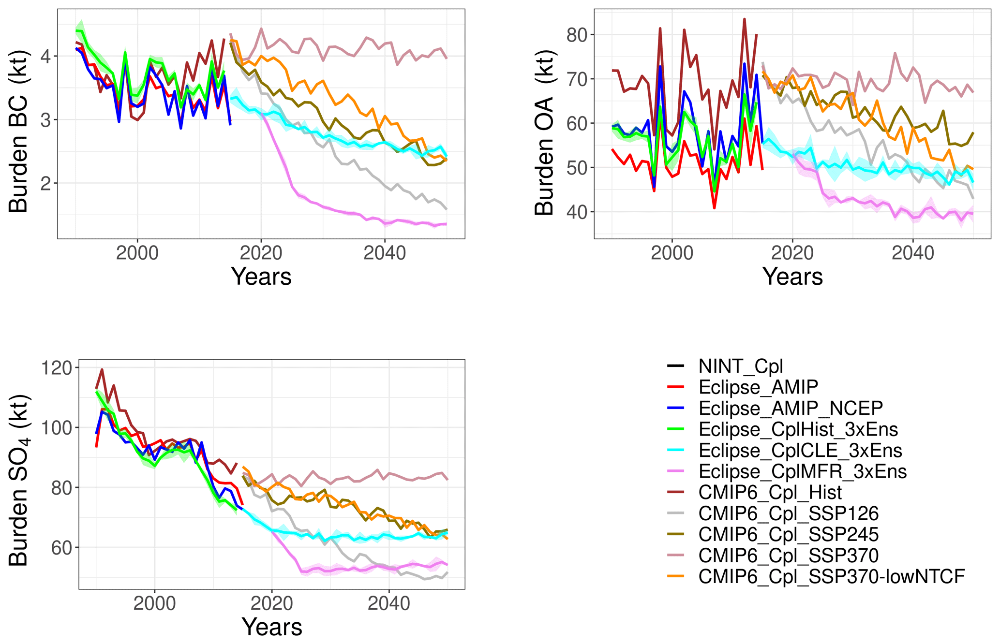
查看英文题注
Figure 6Arctic BC, OA, and SO42- burdens in 1990–2050 as calculated by the GISS-E2.1 ensemble.
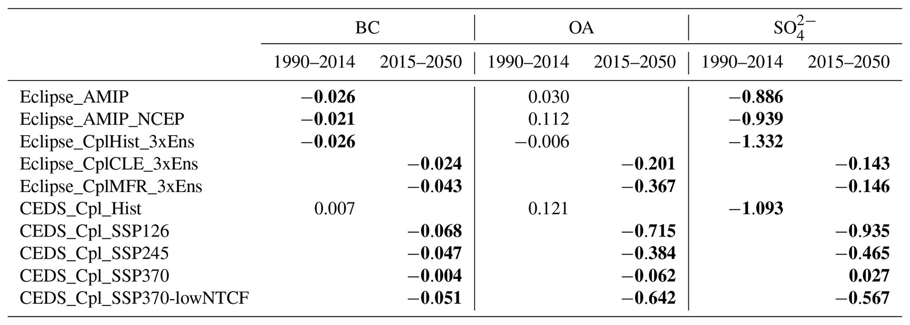
查看英文题注
Table 4Trends in Arctic BC, OA, and SO42- burdens in the near past (1990–2014) and future (2030–2050) as calculated by the GISS-E2.1. The bold numbers indicate the trends that are statistically significant on a 95 % significance level.
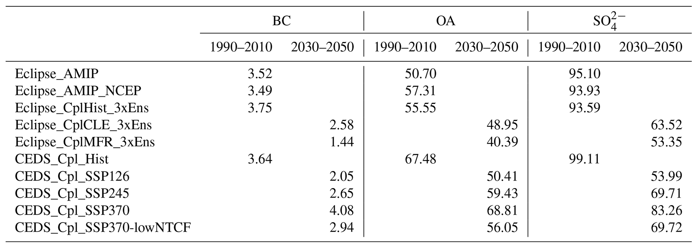
查看英文题注
Table 5Arctic BC, OA, and SO42- burdens in 1990–2010 and 2030–2050 periods as calculated by the GISS-E2.1.
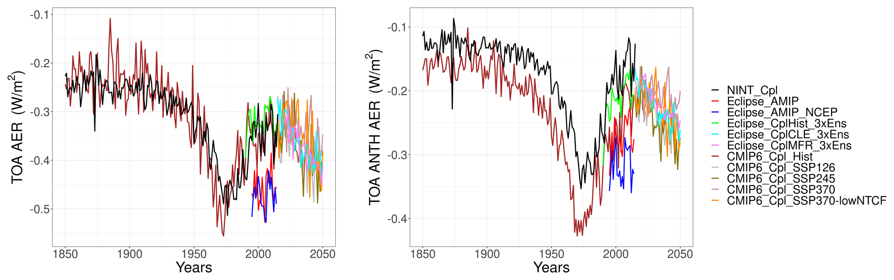
查看英文题注
Figure 7Arctic RFARI from anthropogenic and natural aerosols (BC+OA+SO42-+NO3-+Dust+SSA) and only anthropogenic aerosols (BC+OA+SO42-+NO3-) in 1850–2050 as calculated by the full GISS-E2.1 ensemble.
除了这些气溶胶种类的负荷之外，GISS-E2.1 系综还模拟了北极上空气溶胶-辐射相互作用 (RFARI) 造成的 TOA 辐射强迫。 RFARI 计算为 1850 年至 2050 年间各个气溶胶种类的短波和长波强迫之和，如图 7 所示。值得注意的是，本研究使用模型的瞬时强迫诊断，该诊断是通过对模型的辐射代码（有气溶胶和无气溶胶）的双重调用来计算的，如 Bauer 等人所述。 （2020）和米勒等人。 (2021)，而不是有效辐射强迫。 GISS-E.2.1 中的瞬态云辐射效应遵循 Ghan (2013)，计算了忽略气溶胶散射和吸收的云辐射强迫差异 (Bauer 等，2020)。然而，目前的研究仅关注 RFARI。该模型输出针对人为和生物质燃烧 BC 和 OC 以及生物 SOA 的单独强迫诊断，从而可以将强迫归因于各个气溶胶种类。自 1850 年至 1970 年代，由于气溶胶浓度的增加，负 RFARI 显著增加。由于减轻空气污染的努力以及排放量的减少，从 1970 年代到 2015 年，强迫的负值变得越来越小。图 7 还显示了 CMIP6 系综中 NINT（规定气溶胶）和 OMA（交互式气溶胶）模拟所模拟的人为 RFARI 的明显差异，其中 NINT 模拟的人为 RFARI 的负值较小（接近 30%）与 OMA 模拟相比（图 7b）。 另一方面，在净 RFARI 时间序列中没有看到这种差异（图 7a）。这种补偿主要是由 OMA 模拟中的正粉尘 RFARI 增加 50% 和负海盐 RFARI 减少 10% 驱动的。
查看此段英文原文
In addition to the burdens of these aerosol species, the TOA radiative forcing due to aerosol–radiation interaction (RFARI) over the Arctic is simulated by the GISS-E2.1 ensemble. RFARI is calculated as the sum of shortwave and longwave forcing from the individual aerosol species between 1850 and 2050 is presented in Fig. 7. It is important to note that the present study uses the instantaneous forcing diagnostics from the model, which are calculated with a double call to the model's radiation code, with and without aerosols, as described in Bauer et al. (2020) and Miller et al. (2021), and not the effective radiative forcing. The transient cloud radiative effect in GISS-E.2.1 follows Ghan (2013), which calculates the difference in cloud radiative forcing with aerosol scattering and absorption omitted (Bauer et al., 2020). However, the present study only focuses on the RFARI. The model outputs separate forcing diagnostics for anthropogenic and biomass burning BC and OC, as well as biogenic SOA, making it possible to attribute the forcing to individual aerosol species. The negative RFARI has increased significantly since 1850 until the 1970s due to an increase in aerosol concentrations. Due to the efforts of mitigating air pollution and thus a decrease in emissions, the forcing became less negative after the 1970s until 2015. Figure 7 also shows a visible difference in the anthropogenic RFARI simulated by the NINT (prescribed aerosols) and OMA (interactive aerosols) simulations in the CMIP6 ensemble, where the anthropogenic RFARI by NINT simulation is less negative (by almost 30 %) compared to the OMA simulation (Fig. 7b). On the other hand, no such difference is seen in the net RFARI time series (Fig. 7a). This compensation is largely driven by the 50 % more positive dust and 10 % less negative sea-salt RFARI in the OMA simulation.
3.2.1 黑碳
所有模拟均显示，1990 年至 2014 年间，北极地区的 BC 负荷（表 4）出现了统计显著性下降（表 4），但 CMIP6_Cpl_Hist 除外，CMIP6_Cpl_Hist 略有非显著增加，这可归因于 2000 年之后 CMIP6 中全球人为 BC 排放量的大幅增加（图 1）。从 2015 年起，所有未来的模拟都显示北极 BC 负荷在统计上显著下降（表 4）。 Eclipse CLE 系综显示，与 1990-2010 年平均值相比，2030-2050 年平均北极 BC 负荷减少了 1.1 kt (31%)，而 MFR 系综中 2030-2050 年平均北极 BC 负荷的减少幅度更大（2.3 kt：62%）。在CMIP6模拟中，2030-2050年平均北极BC负荷减少了0.70至1.59 kt，在SSP1-2.6中最大，在SSP3-7.0-lowNTCF中最低，而SSP3-7.0模拟导致2030-2050年平均北极BC负荷增加0.43 kt（12％）。值得注意的是，Eclipse CLE 系综模拟的负荷变化（−1.1 kt）与 SSP2-4.5 情景中的−1 kt 变化相当，与两种情景中预计的排放变化一致（图 1）。
查看此段英文原文
All simulations show a statistically significant (as calculated by Mann–Kendall trend analyses) decrease in the Arctic BC burdens (Table 4) between 1990–2014, except for the CMIP6_Cpl_Hist, which shows a slight non-significant increase that can be attributed to the large increase in global anthropogenic BC emissions in CMIP6 after year 2000 (Fig. 1). From 2015 onwards, all future simulations show a statistically significant decrease in the Arctic BC burden (Table 4). The Eclipse CLE ensemble shows a 1.1 kt (31 %) decrease in the 2030–2050 mean Arctic BC burden compared to the 1990–2010 mean, while the decrease in 2030–2050 mean Arctic BC burden is larger in the MFR ensemble (2.3 kt: 62 %). In the CMIP6 simulations, the 2030–2050 mean Arctic BC burdens decrease by 0.70 to 1.59 kt, being largest in SSP1-2.6 and lowest in SSP3-7.0-lowNTCF, while the SSP3-7.0 simulation leads to an increase of 0.43 kt (12 %) in 2030–2050 mean Arctic BC burdens. It is important to note that the change in burden simulated by the Eclipse CLE ensemble (−1.1 kt) is comparable with the change of −1 kt in the SSP2-4.5 scenario, consistent with the projected emission changes in the two scenarios (Fig. 1).
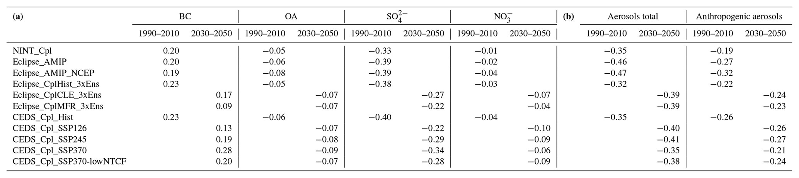
查看英文题注
Table 6(a) RFARI for BC, OA, SO42-, and NO3- aerosols in 1990–2010 and 2030–2050 periods as calculated by the GISS-E2.1. (b) RFARI for total and anthropogenic aerosols in 1990–2010 and 2030–2050 periods as calculated by the GISS-E2.1.
如表 6 所示，GISS-E2.1 系综计算出北极上空的 BC RFARI 高达 0.23 W m⁻²，CMIP6 和 Eclipse 耦合模拟估计 1990-2010 年平均值的最高强迫为 0.23 W m⁻²（表 6a）。这与之前对北极上空 BC RFARI 的估计一致（例如 Schacht 等人，2019 年）。未来，由于BC排放量和负荷降低，正BC RFARI通常会降低（图6），但SSP3-7.0情景除外，其中由于BC排放和负荷增加，BC强迫变得更正0.05 W m⁻²。表 6a 中北极 RFARI 的变化遵循表 5 中所示的北极负荷和图 1 中所示的排放预测，导致 SSP1-2.6 中模拟的 BC RFARI 最大程度减少（−0.10 W m⁻²）。与负荷类似，Eclipse CLE 和 CMIP6 SSP2-4.5 情景模拟了 2030-2050 年平均 BC RFARI 的非常接近的下降，分别为 -0.06 和 -0.14 W m⁻²。
查看此段英文原文
As seen in Table 6, the GISS-E2.1 ensemble calculated a BC RFARI of up to 0.23 W m−2 over the Arctic, with both CMIP6 and Eclipse coupled simulations estimating the highest forcing of 0.23 W m−2 for the 1990–2010 mean (Table 6a). This agrees with previous estimates of the BC RFARI over the Arctic (e.g., Schacht et al., 2019). In the future, the positive BC RFARI generally decreases (Fig. 6) due to lower BC emissions and therefore burdens, except for the SSP3-7.0 scenario, where the BC forcing becomes more positive by 0.05 W m−2 due to increasing BC emissions and burdens. The changes in the Arctic RFARI in Table 6a follow the Arctic burdens presented in Table 5 and emission projections presented in Fig. 1, leading to largest reductions in BC RFARI simulated in SSP1-2.6 (−0.10 W m−2). Similar to the burdens, the Eclipse CLE and CMIP6 SSP2-4.5 scenarios simulate a very close decrease in the 2030–2050 mean BC RFARI of −0.06 and −0.14 W m−2, respectively.
3.2.2 有机气溶胶
Eclipse 历史集合模拟了 1990 年至 2014 年间积极的 OA 负荷趋势；然而，在 95% 的置信水平下，这一趋势并不显著（表 4）。由于 CMIP6 中全球人为 OC 排放量大幅增加，CMIP6_Cpl_Hist 模拟给出了更大的趋势（图 1）。松弛约束 AMIP Eclipse 模拟计算出 1990-2010 年最大的平均 OA 负荷（57 kt），而耦合模拟显示 1990-2010 年平均负荷略低（55 kt）。 Eclipse_AMIP_NCEP 模拟中最大的 OA 负荷归因于在此场景中计算出的最大生物 SOA 负荷，以及由于松弛约束风而更好地模拟了来自源区的运输（图 S1）。最近耦合的 Eclipse 和 CMIP6 模拟中人为和生物对 SOA 负荷的贡献意味着两个集合之间的负荷差异可归因于 Eclipse 和 CMIP6 模拟中使用的不同人为排放数据集（图 S1），以及由于生物排放的模拟增加而导致的 SOA 贡献差异（补充中的图 S5）。 AMIP 型 Eclipse 运行模拟了 1990-2010 年较低的平均 OA 负荷 (50 kt)，这归因于这种情况下生物 SOA 负荷最小。与 1990-2010 年平均值相比，Eclipse CLE 系综显示 2030-2050 年平均 OA 负荷减少了 6.6 kt (12%)，而 MFR 系综显示同期下降幅度更大（15.2 kt：27%）。 CMIP6 模拟显示，2030-2050 年平均北极 OA 负荷下降幅度更大，从 8.1 kt (SSP2-4.5) 下降到 17 kt (SSP1-2.6)，而 SSP3-7.0 模拟显示同期 OA 负荷增加了 1.3 kt (2%)。与 BC 负荷类似，Eclipse CLE 和 CMIP6 SSP2-4.5 情景预计 2030-2050 年平均 OA 负荷将发生类似变化（分别为 6.6 和 8.1 kt）。
查看此段英文原文
The Eclipse historical ensemble simulate a positive OA burden trend between 1990 and 2014; however, this trend is not significant at the 95 % confidence level (Table 4). The CMIP6_Cpl_Hist simulation gives a larger trend, due to a large increase in global anthropogenic OC emissions in CMIP6 (Fig. 1). The nudged AMIP Eclipse simulation calculates the largest 1990–2010 mean OA burden (57 kt), while the coupled simulation shows a slightly lower 1990–2010 mean burden (55 kt). This largest OA burden in the Eclipse_AMIP_NCEP simulation is attributed to the largest biogenic SOA burden calculated in this scenario, as well as a better-simulated transport from source regions due to the nudged winds (Fig. S1). The anthropogenic and biogenic contributions to SOA burdens in the coupled Eclipse and CMIP6 recent past simulations imply that the differences in the burdens between the two ensembles can be attributed to the different anthropogenic emissions datasets used in the Eclipse and CMIP6 simulations (Fig. S1), as well as the differences in SOA contributions due to simulated increases in the biogenic emissions (Fig. S5 in the Supplement). The AMIP-type Eclipse run simulates a lower 1990–2010 mean OA burden (50 kt), attributed to the smallest biogenic SOA burden in this scenario. The Eclipse CLE ensemble shows a decrease of 6.6 kt (12 %) in 2030–2050 mean OA burden compared to the 1990–2010 mean, while the MFR ensemble shows a larger decrease in the same period (15.2 kt: 27 %). The CMIP6 simulations show a much larger decrease in 2030–2050 mean Arctic OA burdens, with a decrease of 8.1 kt (SSP2-4.5) to 17 kt (SSP1-2.6), while the SSP3-7.0 simulation shows an increase in OA burdens in the same period by 1.3 kt (2 %). Similar to BC burdens, Eclipse CLE and CMIP6 SSP2-4.5 scenarios project similar changes in 2030–2050 mean OA burden (6.6 and 8.1 kt, respectively).
如表 6a 所示，Eclipse 系综计算出 1990-2010 年平均值的 OA RFARI 为 -0.05 至 -0.08 W m⁻²，其中松弛约束 AMIP 型模拟显示最大的 RFARI，因为该时期计算出最大的北极 OA 负荷（表 5）。对于未来，Eclipse CLE和MFR系综显示2030-2050年负平均RFARI增加了-0.02 W m⁻²，这非常接近为各种CMIP6模拟计算的负强迫的增加（-0.01至-0.03 W m⁻²）。根据负荷，计算出 2030-2050 年 SSP3-7.0 平均 OA RFARI 增幅最大（−0.03 W m⁻²），SSP1-2.6 和 3-7.0-lowNTCF 增幅最小（−0.01 W m⁻²）。
查看此段英文原文
As shown in Table 6a, the Eclipse ensemble calculated an OA RFARI of −0.05 to −0.08 W m−2 for the 1990–2010 mean, where the nudged AMIP-type simulation shows the largest RFARI, due to the largest Arctic OA burden calculated for this period (Table 5). For the future, both Eclipse CLE and MFR ensembles show an increase in the negative 2030–2050 mean RFARI by −0.02 W m−2, which is very close to the increase in the negative forcing calculated for the various CMIP6 simulations (−0.01 to −0.03 W m−2). Following the burdens, the largest increase in the 2030–2050 mean OA RFARI is calculated for the SSP3-7.0 (−0.03 W m−2) and the lowest for SSP1-2.6 and 3-7.0-lowNTCF (−0.01 W m−2).
3.2.3 硫酸盐
关于 SO₄²⁻ 负荷，所有模拟在 1990-2014 年和 2015-2050 年都显示出统计上显著的负趋势，如图 6 和表 5 所示。松弛约束 AMIP 型和耦合 Eclipse 模拟均显示 1990-2010 年平均 SO₄²⁻ 负荷为 93 kt，而 AMIP 型模拟显示稍大的 SO₄²⁻ 负荷为 95 kt，归因于该模型版本中模拟的云量较大（表 2）。在 2015-2050 年期间，与 1990-2010 年的平均值相比，Eclipse 系综模拟北极 SO₄²⁻ 负荷平均减少 30-40 kt (32%-42%)，而 CMIP6 系综模拟减少 16-45 kt (16%-45%)。 SSP2-4.5 和 Eclipse CLE 情景模拟了 2030-2050 年北极平均 SO₄²⁻ 负荷的非常相似的减少（30 kt），而 MFR 和 SSP1-2.6 情景也模拟了类似的负荷减少（表 5）。根据排放预测，SSP1-2.6情景给出了北极2030-2050年平均SO₄²⁻负荷的最大减少量（45 kt：45％），SSP3-7.0情景给出了最小减少量（16 kt：16％）。
查看此段英文原文
Regarding SO42- burdens, all simulations show a statistically significant negative trend both in 1990–2014 and in 2015–2050, as seen in Fig. 6 and Table 5. Both the nudged AMIP-type and coupled Eclipse simulations showed a 1990–2010 mean SO42- burden of 93 kt, while the AMIP-type simulation showed a slightly larger SO42- burden of 95 kt, attributed to the larger cloud fraction simulated in this model version (Table 2). For the 2015–2050 period, the Eclipse ensemble simulates a mean Arctic SO42- burden decrease of 30–40 kt (32 %–42 %), compared to the 1990–2010 mean, while CMIP6 ensemble simulates a reduction of 16–45 kt (16 %–45 %). The SSP2-4.5 and Eclipse CLE scenarios simulate a very similar decrease (30 kt) in 2030–2050 mean Arctic SO42- burdens, while the MFR and SSP1-2.6 scenarios also simulate comparable reductions in the burdens (Table 5). Following the emission projections, the SSP1-2.6 scenario gives the largest decrease (45 kt: 45 %), and the SSP3-7.0 scenario gives the smallest reduction (16 kt: 16 %) in Arctic 2030–2050 mean SO42- burdens.
SO₄²⁻RFARI 随着排放量（图 1）和负荷（图 5）的减少而减少（图 6）。 Eclipse 和 CMIP6 系综均模拟 SO₄²⁻RFARI 减少 0.06–0.18 W m⁻²。 2030-2050年平均SO₄²⁻RFARI遵循负荷（表6），CLE和SSP2-4.5给出了类似的负SO₄²⁻RFARI下降0.11W m⁻²，而Eclipse MFR和SSP1-2.6模拟了2030-2050年平均SO₄²⁻RFARI非常类似的下降（0.16和0.18W） m−2，分别）。
查看此段英文原文
The SO42- RFARI decreases (Fig. 6) following the decreasing emissions (Fig. 1) and burdens (Fig. 5). Both Eclipse and CMIP6 ensembles simulate a decrease in SO42- RFARI by 0.06–0.18 W m−2. The 2030–2050 mean SO42- RFARI follows the burdens (Table 6), with CLE and SSP2-4.5 giving similar decreases in the negative SO42- RFARI of 0.11 W m−2, while the Eclipse MFR and SSP1-2.6 simulates a very similar decrease in the 2030–2050 mean SO42- RFARI (0.16 and 0.18 W m−2, respectively).
3.2.4 气溶胶净辐射强迫
Eclipse 和 CMIP6 系综的耦合模拟显示，1990-2010 年平均值的北极 RFARI 为 -0.32 至 -0.35 W m⁻²，略低于最近的估计值（例如，Markowicz 等人，2021 年的 -0.4 W m⁻²）。在 Eclipse 系综中，-0.22±0.01 W m⁻² 被计算为由人为气溶胶起源，而在 CMIP6 近期模拟中，显示人为气溶胶的贡献为 -0.19 至 -0.26 W m⁻²（表 6b）。 AMIP型Eclipse模拟计算出同一时期的RFARI要大得多，为-0.47 W m⁻²，这可能主要是由于耦合模拟中BC气溶胶的正强迫由于较大的负荷而增加。由于耦合模型模拟的海冰浓度较大，这种效应被放大，与 AMIP 模拟相比，导致表面更亮。在2030年至2050年期间，Eclipse 系综模拟负RFARI增加了-0.07 W m⁻²，而负人为RFARI仅增加了-0.02 W m⁻²，这表明自然气溶胶的贡献在未来变得更加重要。结果表明，正沙尘强迫减少了 0.03 W m⁻² （从 0.12 W m⁻² 减少到 0.09 W m⁻² ），而负海盐强迫则由于海冰融化导致无冰海洋部分增加而变得更负-0.03 W m⁻² （见第 3.3 节）。同一时期，CMIP6未来系综模拟负RFARI增加了-0.01至-0.06 W m⁻²，其中变化最大的是SSP1-2.6和SSP2-4.5，主要是由BC强迫的变化驱动的（表6a）。 表 6 还显示，SSP1-1.6 模拟的人为强迫没有变化，而 SSP2-4.5 在 Eclipse 系综中显示出类似的 -0.01 W m⁻² 的增加。相比之下，SSP3-7.0 和 SSP3-7.0-lowNTCF 模拟人为负 RFARI 分别大幅下降 0.05 和 0.02 W m⁻²。
查看此段英文原文
The coupled simulations in both the Eclipse and the CMIP6 ensemble show an Arctic RFARI of −0.32 to −0.35 W m−2 for the 1990–2010 mean, slightly lower than recent estimates (e.g., −0.4 W m−2 by Markowicz et al., 2021). In the Eclipse ensemble, -0.22±0.01 W m−2 is calculated to be originated by the anthropogenic aerosols, while in the CMIP6 near-past simulations show a contribution of −0.19 to −0.26 W m−2 from anthropogenic aerosols (Table 6b). The AMIP-type Eclipse simulations calculated a much larger RFARI of −0.47 W m−2 for the same period, which can be mainly due to the increase in the positive forcing of the BC aerosols in the coupled simulations due to larger burdens. This effect is amplified due to the larger sea-ice concentration simulated with the coupled model, leading to brighter surfaces compared to the AMIP simulations. For the 2030–2050 period, the Eclipse ensemble simulated an increase in the negative RFARI by −0.07 W m−2, while the negative anthropogenic RFARI increased by only −0.02 W m−2, suggesting that the contribution from natural aerosols becomes more important in the future. The results show that the positive dust forcing is decreased by 0.03 W m−2 (from 0.12 to 0.09 W m−2 ), while the negative sea-salt forcing becomes more negative by −0.03 W m−2 due to the increase in ice-free ocean fraction due to melting of sea ice (see Sect. 3.3). For the same period, the CMIP6 future ensemble simulated an increase in the negative RFARI by −0.01 to −0.06 W m−2, with the largest change being in SSP1-2.6 and SSP2-4.5, mainly driven by the change in BC forcing (Table 6a). Table 6 also shows that the SSP1-1.6 simulates no change in the anthropogenic forcing, while SSP2-4.5 shows a similar increase of −0.01 W m−2 in the Eclipse ensemble. In contrast, the SSP3-7.0 and SSP3-7.0-lowNTCF simulates a large decrease in the anthropogenic negative RFARI by 0.05 and 0.02 W m−2, respectively.
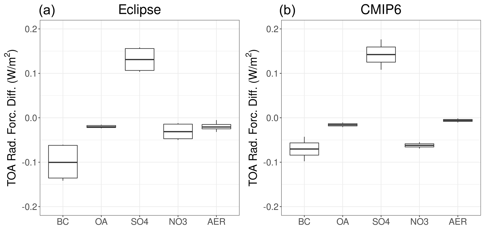
查看英文题注
Figure 8Box–whisker plot showing the differences between 1990–2010 mean and 2030–2050 mean RFARI for the anthropogenic aerosol components (BC, OA, SO42-, and NO3-) and their sum (AER) in the Eclipse ensemble (CLE and MFR: a) and the CMIP6 (SSP2-4.5 and SSP1-2.6: b) ensembles. The boxes show the median and the 25th and 75th percentiles. The upper whisker is located at the lower range of the maximum value and Q_3+1.5 IQR, whereas the lower whisker is located at the upper range of the smallest x value and Q_1−1.5 IQR, where IQR (interquartile range) is the box height (75th percentile−25th percentile).
通过查看图 8 中所示的针对 BC、OA、SO₄²⁻ 和 NO₃⁻ 的各个气溶胶种类计算的气溶胶辐射强迫，进一步研究了两个系综中的不同行为，该图显示了使用 Eclipse（CLE 和 MFR）和 CMIP6（SSP2-4.5 和 SSP1-2.6）系综中类似场景的盒须图。与其他气溶胶种类相比，Eclipse 系综计算出的气溶胶冷却效果的增加主要归因于 BC 的减少（图 8）。对于 OA 和 NO₃⁻ 计算出更多的负强迫，而由于 SO₂ 排放量的大幅减少，SO₄²⁻ 强迫的负强迫变得越来越小（图 1）。因此，净气溶胶强迫稍微负一些。在 CMIP6 系综中，与 Eclipse 系综相比，BC 强迫的变化不大，无法抵消 SO₄²⁻ 影响的变化，从而产生更负的净气溶胶强迫，与 Eclipse 系综相比略小。与 Eclipse 系综相比，CMIP6 系综还模拟了负 NO₃ 强迫的更大增加（Shindell 等，2013）。总体而言，与 1990-2010 年期间相比，到本世纪中叶（2030-2050 年），不同气溶胶种类的变化会导致更大的负气溶胶强迫。
查看此段英文原文
The different behavior in the two ensembles is further investigated by looking at the aerosol–radiation forcing calculated for the individual aerosol species of BC, OA, SO42-, and NO3- presented in Fig. 8 that shows the box–whisker plots using the similar scenarios in the Eclipse (CLE and MFR) and CMIP6 (SSP2-4.5 and SSP1-2.6) ensembles. The increase in cooling effect of aerosols calculated by the Eclipse ensemble is attributed mainly to the decrease in BC as opposed to other aerosol species (Fig. 8). More negative forcing is calculated for the OA and NO3-, while the SO42- forcing is becoming less negative due to large reductions in SO2 emissions (Fig. 1). The net aerosol forcing is therefore slightly more negative. In the CMIP6 ensemble, the BC forcing does not change as much compared to the Eclipse ensemble to counteract the change in impact from SO42-, giving a more negative net aerosol forcing, which is slightly smaller compared to the Eclipse ensemble. The CMIP6 ensemble also simulates a larger increase in the negative NO3- forcing compared to the Eclipse ensemble (Shindell et al., 2013). Overall, the changes in the different aerosol species lead to a more negative aerosol forcing by mid-century (2030–2050) compared to the 1990–2010 period.
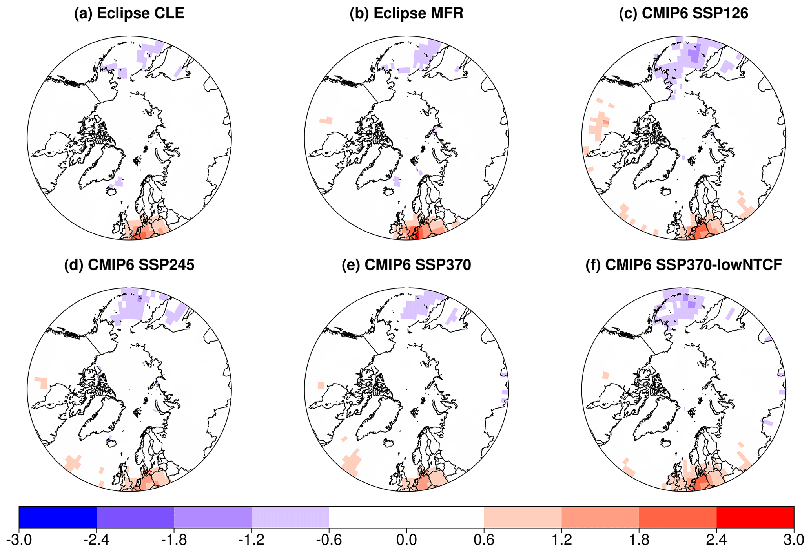
查看英文题注
Figure 9Spatial distribution of the statistically significant annual mean Arctic RFARI (W m−2) changes between the 1990–2010 mean and the 2030–2050 mean as calculated by the GISS-E2.1 ensemble.
图9显示了不同集合成员中2030-2050年北极RFARI相对于1990-2010年平均值的统计显著变化的空间分布。结果显示，所有集合成员中，欧洲和部分北美地区的负RFARI有所减少，而北太平洋的负RFARI有所增加。在全球范围内，东亚和南亚模拟了更大的变化（补充材料中的图S2），那里发生了最大的人为排放减少。全球净RFARI以海盐颗粒为主，约占1990-2010年平均强迫-2至-2.3 W m⁻²和2030-2050年平均强迫-1.9至2.1 W m⁻²的60%。
查看此段英文原文
The spatial distributions of the statistically significant change in the Arctic RFARI in the 2030–2050 mean with respect to the 1990–2010 mean in the different ensemble members are presented in Fig. 9. Results show a decrease in the negative RFARI over Europe, and partly over North America, and an increase over the northern Pacific in all ensemble members. Globally, larger changes are simulated over East and South Asia (Fig. S2 in the Supplement), where largest anthropogenic emission reductions take place. The global net RFARI is dominated by the sea-salt particles, accounting for about 60 % of the 1990–2010 mean forcing of −2 to −2.3 W m−2 and the 2030–2050 mean forcing of −1.9 to 2.1 W m−2.
3.3 气候变化
3.3.1 地表气温和海表温度
1990-2050 年期间的不同模拟计算了地表气温和海冰范围。如图 10 所示，北极地表气温在所有情况下都会升高。 1990 年至 2014 年间，北极地表气温每十年显著增加 0.5 (Eclipse_CplHist) 至 1 °C (CMIP6_Cpl_Hist)，其中 CMIP6 与 Eclipse 系综相比增幅更大（表 7）。另一方面，1990 年至 2014 年期间观测到的地表气温显示出每十年 0.2 °C 的较小增幅，且在统计上并不显著。从 2015 年起，地表气温继续以每十年 0.3 至 0.6 °C 的速度显著升高，由于排放量大幅减少，从而导致负荷和相关 RFARI 减少，Eclipse群的增幅更大。
查看此段英文原文
The surface air temperature and sea-ice extent are calculated in the different simulations for the 1990–2050 period. As seen in Fig. 10, the Arctic surface air temperatures increase in all scenarios. Between 1990 and 2014, the surface air temperatures over the Arctic increased statistically significantly by 0.5 (Eclipse_CplHist) to 1 ∘C per decade (CMIP6_Cpl_Hist), with CMIP6 showing larger increases compared to the Eclipse ensemble (Table 7). On the other hand, the observed surface air temperature during 1990–2014 shows a smaller and statistically non-significant increase of 0.2 ∘C per decade. From 2015 onwards, surface air temperatures continue to increase significantly by 0.3 to 0.6 ∘C per decade, with larger increases in the Eclipse ensemble, due to larger reductions in the emissions and therefore in the burdens and associated RFARI.
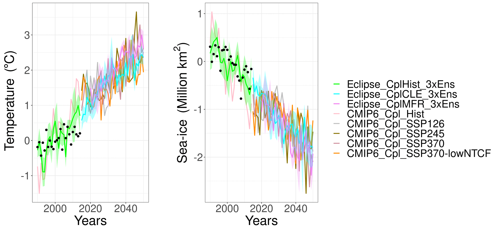
查看英文题注
Figure 10Arctic annual mean surface air temperature and sea-ice extent anomalies in 2015–2050 based on the 1990–2010 mean as calculated by the GISS-E2.1 ensemble.
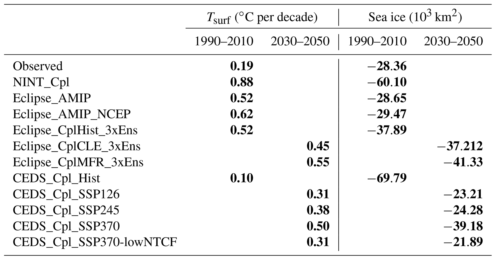
查看英文题注
Table 7Trends in near-surface temperature (Tsurf) and annual mean sea-ice extent in 1990–2010 and 2030–2050 periods as calculated by the GISS-E2.1. The bold numbers indicate the changes in the 2030–2050 mean compared to the 1990–2010 mean that are statistically significant on a 95 % significance level.
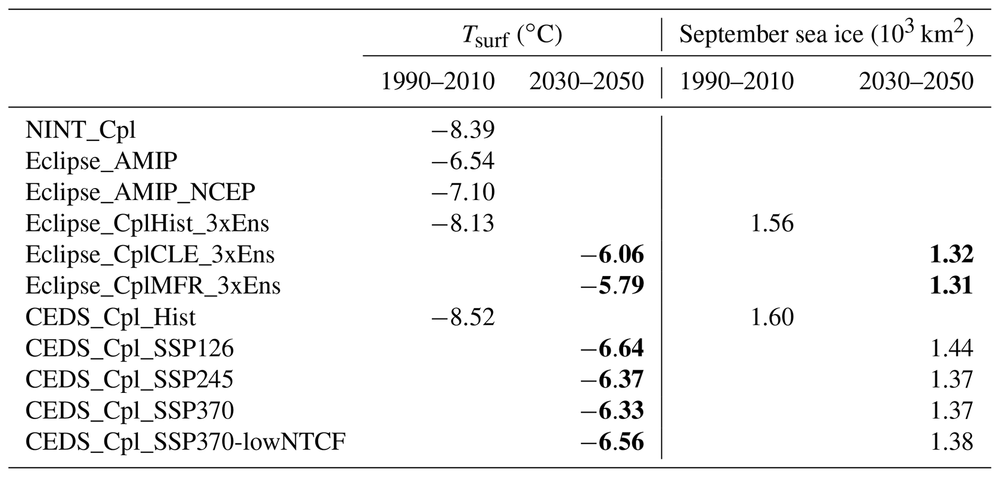
查看英文题注
Table 8Near-surface temperature (Tsurf) and September mean sea-ice extent in 1990–2010 and 2030–2050 periods as calculated by the GISS-E2.1. The bold numbers indicate the changes in the 2030–2050 mean compared to the 1990–2010 mean that are statistically significant on a 95 % significance level.
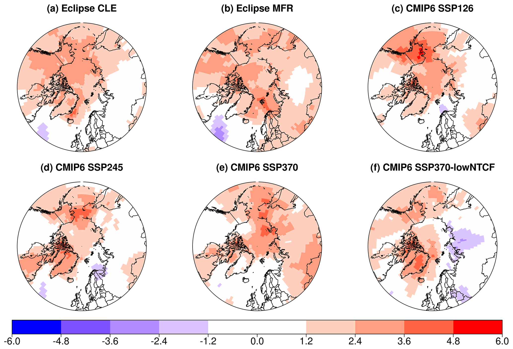
查看英文题注
Figure 11Spatial distribution of the statistically significant annual mean Arctic surface air temperature (∘C) changes between the 1990–2010 mean and the 2030–2050 mean as calculated by the GISS-E2.1 ensemble.
根据Eclipse CLE和MFR系综，与1990-2010年平均温度相比，2030-2050年平均地表气温预计将分别增加2.1和2.3°C（表8，图10），而CMIP6模拟计算出增加1.9（SSP1-2.6）至2.2°C (SSP3-7.0)。两个整体的变化在统计上显著，达到 95% 的水平。与 Davy 和 Outten（2020 年）报告的 CMIP6 SSP1-2.6、SSP2-4.5 和 SSP3-7.0 情景中 2040 年气温升高 4.5–5 °C 以及 1950–1980 年平均气温相比，这些变暖幅度较小。但值得注意的是，由于本研究（1990-2010）使用的基线与 Davy 和 Outten（2020）使用的 1950-1980 年基线不同，无法直接比较这些数据集。图 11 显示了在 Eclipse 和 CMIP6 未来情景中，1990-2010 年平均值和 2030-2050 年平均值之间北极表面气温变化的统计显著性（通过 Student t 检验计算）的空间分布。所有情景都计算出北极中部地表气温的变暖，但陆地区域存在差异。 Eclipse CLE 和 MFR 系综显示出类似的变暖现象，主要是北冰洋、北美和东北亚地区的变暖，以及格陵兰海地区的变冷。后者是观测和未来预测的一个众所周知的特征，与该地区的深层混合层以及大西洋经向环流的下降有关（例如，IPCC，2014年；Menary和Wood，2018年；Keil等人，2020年）。 Eclipse 和 CMIP6 系综之间也存在差异，如图 11 所示。 所有 CMIP6 情景均显示北极中部变暖，斯堪的纳维亚半岛北部出现有限降温，继图 9 所示的 RFARI 变化之后，除了 SSP3-7.0 情景显示该地区没有变冷。 SSP3-7.0-lowNTCF 情景显示西伯利亚上空有额外的冷却。这些变暖与 Samset 等人的早期研究相当。 (2018) 估计气溶胶导致气温升高 2.8 °C。
查看此段英文原文
The 2030–2050 mean surface air temperatures are projected to increase by 2.1 and 2.3 ∘C compared to the 1990–2010 mean temperature (Table 8, Fig. 10) according to the Eclipse CLE and MFR ensembles, respectively, while the CMIP6 simulation calculated an increase of 1.9 (SSP1-2.6) to 2.2 ∘C (SSP3-7.0). Changes in both ensembles are statistically significant on a 95 % level. These warmings are smaller compared to the 4.5–5 ∘C warmer 2040 temperatures and compared to the 1950–1980 average in the CMIP6 SSP1-2.6, SSP2-4.5, and SSP3-7.0 scenarios reported by Davy and Outten (2020). It should however be noted that due to the different baselines used in the present study (1990–2010) and the 1950–1980 baseline used in Davy and Outten (2020), it is not possible to directly compare these datasets. Figure 11 shows the spatial distributions of the statistically significant (as calculated by Student t test) Arctic surface air temperature change between the 1990–2010 mean and the 2030–2050 mean for the individual Eclipse and CMIP6 future scenarios. All scenarios calculate a warming in the surface air temperatures over the central Arctic, while there are differences over the land areas. The Eclipse CLE and MFR ensembles show similar warming mainly over the Arctic ocean as well as North America and Northeast Asia and cooling over the Greenland Sea. The latter is a well-known feature of observations and future projections, linked to the deep mixed layer in the area, and declines in the Atlantic meridional circulation (e.g., IPCC, 2014; Menary and Wood, 2018; Keil et al., 2020). There are also differences between the Eclipse and the CMIP6 ensembles as seen in Fig. 11. All CMIP6 scenarios show a warming over the central Arctic and a limited cooling over northern Scandinavia, following the changes in RFARI shown in Fig. 9, except for the SSP3-7.0 scenario that shows no cooling in the region. The SSP3-7.0-lowNTCF scenario shows an additional cooling over Siberia. These warmings are comparable with earlier studies, such as Samset et al. (2018) estimating a warming of 2.8 ∘C, attributed to aerosols.
3.3.2 海冰
在所有模拟中都发现北极海冰范围显著减小（图 10 和表 7）。与近地表温度类似，在 1990 年至 2014 年期间，CMIP6 系综模拟的海冰范围比 Eclipse 系综大幅减少。另一方面，CMIP6_Cpl_Hist 很大程度上高估了观测到的 30 000 km2 yr−1 的减少。一些 CMIP5 和 CMIP6 模型也出现了这种高估的情况（Davy 和 Outten，2020）。 2015 年之后，与 CMIP6 系综相比，Eclipse CLE 系综预测海冰范围的减少幅度更大（表 7），这与近地表温度的变化一致。还分析了三月和九月海冰范围的演变，分别代表北极年度最大和最小范围。 Eclipse 系综预计 2015-2050 年期间 3 月海冰范围将减少 23 000±11 000 km2 yr−1，而 CMIP6 系综预计同期海冰范围将减少 10 000±6000 km2 yr−1，两者均具有统计显著性。 9 月份，两个系统均预计下降幅度更大。 Eclipse 系综模拟 2015-2050 年期间减少 64 000±10 000 km2 yr−1，而 CMIP6 系综预测减少 50 000±20 000 km2 yr−1。
查看此段英文原文
The Arctic sea-ice extent is found to decrease significantly in all simulations (Fig. 10 and Table 7). Similar to the near-surface temperatures, during the 1990–2014 period, the CMIP6 ensemble simulated a large decrease in sea-ice extent compared to the Eclipse ensemble. On the other hand, the CMIP6_Cpl_Hist largely overestimated the observed decrease of 30 000 km2 yr−1. This overestimation has also been reported for some of the CMIP5 and CMIP6 models (Davy and Outten, 2020). After 2015, the Eclipse CLE ensemble projected larger decreases in the sea-ice extent compared to the CMIP6 ensemble (Table 7), in agreement with the changes in the near-surface temperatures. The evolutions of March and September sea-ice extents, representing the Arctic annual maximum and minimum extents, respectively, are also analyzed. The Eclipse ensemble projects a decrease of 23 000±11 000 km2 yr−1 in March sea-ice extent during the 2015–2050 period, while the CMIP6 ensemble projects a decrease of 10 000±6000 km2 yr−1 for the same period, both statistically significant. In September, much larger decreases are projected by both ensembles. The Eclipse ensemble simulates a decrease of 64 000±10 000 km2 yr−1 in the 2015–2050 period, while the CMIP6 ensemble predicts a decrease of 50 000±20 000 km2 yr−1.
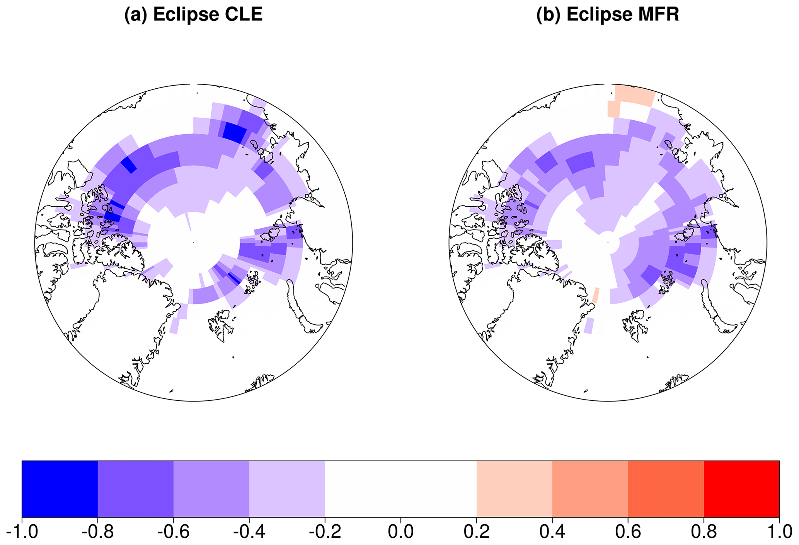
查看英文题注
Figure 12Spatial distribution of the statistically significant September Arctic sea-ice fraction change between the 1990–2010 mean and the 2030–2050 mean as calculated by the GISS-E2.1 Eclipse ensemble (CMIP6 ensemble is not shown due to statistically insignificant changes calculated by the Student t test).
与 1990–2010 年平均值相比，Eclipse CLE 和 MFR 情景下 2030–2050 年的年平均海冰范围预计分别减少 150 万和 170 万平方公里，两者均在 95% 水平上具有统计显著性。CMIP6 模拟预计减少 120 万至 150 万平方公里，但变化未达到统计显著；这一结果与 CMIP6 多模式研究相当（Davy 和 Outten，2020）。2030–2050 年 3 月平均海冰范围在 Eclipse 系综中预计减少 92.5 万平方公里（显著），在 CMIP6 系综中预计减少 99.1 万平方公里（不显著）。9 月平均海冰范围的预计降幅更大：Eclipse 和 CMIP6 系综分别为 260 万和 230 万平方公里。图 12 显示，在标示夏末海冰边界最大退缩的带状区域，Eclipse 系综预计 9 月海冰覆盖比例最多下降 90%；CMIP6 系综的变化在 95% 水平上不显著，因此未在图 11 中显示。这可能与 CMIP6 每个情景仅有一个系综成员，以及近地表气温变化不显著有关。3 月（补充材料图 S3），Eclipse 系综模拟的北太平洋冬末最大海冰范围缩小，CMIP6 系综未显示显著变化；Eclipse 系综还显示格陵兰附近北大西洋海冰减少。所有模拟均显示北极中部年平均海冰范围类似且显著的下降（补充材料图 S4）；CMIP6 系综还在加拿大北极部分区域模拟出海冰范围增加，以 SSP3-7.0 情景最明显。
查看此段英文原文
The 2030–2050 annual mean sea-ice extent (Table 8) is projected to be 1.5 and 1.7 million square kilometers lower compared to the 1990–2010 mean in the Eclipse CLE and MFR scenarios, respectively, both statistically significant on a 95 % level. The CMIP6 simulations predict a lower decrease in sea-ice extent by 1.2–1.5 million square kilometers; however, these changes are not statistically significant. These results are comparable with the results from the CMIP6 models (Davy and Outten, 2020). In the 2030–2050 March mean the sea-ice extent is projected to be 925 000 km2 lower in the Eclipse ensemble (statistically significant), while the CMIP6 ensemble projects a decrease of 991 000 km2 (not statistically significant). A much larger decrease is projected for the 2030–2050 September mean: 2.6 million and 2.3 million square kilometers in Eclipse and CMIP6 ensembles, respectively. As seen in Fig. 12, the Eclipse ensemble predicts an up to 90 % lower September sea-ice fraction in a band marking the maximum retreat of the sea-ice line at the end of the summer, while the changes simulated by the CMIP6 ensemble are not statistically significant on a 95 % level (therefore not shown in Fig. 11), which can be attributed to the single ensemble member per scenario in the CMIP6 ensemble, as well as the not-significant changes in the near-surface temperatures (not shown). In March (Fig. S3 in the Supplement), the Eclipse ensemble simulated a decrease in maximum sea-ice extent at the end of winter over the northern Pacific, while the CMIP6 ensemble did not show any statistically significant changes in sea ice. In addition, the Eclipse ensemble shows a decrease over the north Atlantic close to Greenland. All simulations show a similar and statistically significant decrease in annual mean sea-ice extent (Fig. S4 in the Supplement) over the central Arctic, with the CMIP6 ensemble showing also some increase in the sea-ice extent over the Canadian Arctic, which is largest in SSP3-7.0.
海冰范围的缩小也导致DMS和海盐的海洋排放量增加（图S5）；然而，在 95% 的显著性水平上，增加并不显著。与 CMIP6 系综相比，Eclipse 系综中的模拟增加（特别是 DMS 排放量）略大，因为 Eclipse 系综中海冰范围的减少幅度更大。另请注意，GISS-E2.1 使用海洋中 DMS 浓度的规定和固定地图。当目前常年位于海冰下的海洋位置暴露出来时，该海水中存在的 DMS 不会包含在模拟中，这可能低估了随着海冰消退而进入大气的 DMS 通量的增加。
查看此段英文原文
The retreat in sea-ice extent also led to an increase in oceanic emissions of DMS and sea salt (Fig. S5); however, the increases are not significant on a 95 % significance level. The simulated increase, in particular for the DMS emissions, is slightly larger in the Eclipse ensemble compared to the CMIP6 ensemble, due to a larger decrease in sea-ice extent in the Eclipse ensemble. Also note that GISS-E2.1 is using prescribed and fixed maps of DMS concentration in the ocean. When ocean locations that are year-round under sea ice at present get exposed, the DMS that would exist in that seawater is not included in the simulations, likely underestimating the increased flux of DMS into the atmosphere as the sea-ice retreats.
4 总结与结论
GISS-E2.1 地球系统模式被用于模拟北极近期历史（1990–2014 年）和未来（2015–2050 年）的气溶胶负荷及其气候影响。研究基于 CMIP6 和 Eclipse V6b 的历史人为排放及未来排放预测，共开展 17 组模拟；其中 Eclipse V6b 数据也支持正在进行的北极监测与评估计划。
查看此段英文原文
The GISS-E2.1 earth system model has been used to simulate the recent past (1990–2014) and future (2015–2050) aerosol burdens and their climate impacts over the Arctic. An ensemble of 17 simulations has been conducted using historical and future anthropogenic emissions and projections from CMIP6 and Eclipse V6b, with the latter supporting the ongoing Arctic Monitoring and Assessment Programme.
近期历史模拟的评估表明，模式对北极近地面气溶胶浓度的低估最高达 50%。在风场向再分析资料进行松弛逼近、同时指定海表温度与海冰条件的 AMIP 型仅大气模拟中，偏差最小。硫酸盐是例外：受云量高估影响，云内 SO₂ 氧化产生的硫酸盐增多，使经风场松弛约束的 Eclipse AMIP 模拟偏差最大。模式性能分析显示，GISS-E2.1 的 CMIP6 版本在气溶胶浓度和气候参数模拟方面略优于 Eclipse 版本。夏季云量偏低还提示模式可能遗漏了气溶胶来源，尤其是当地海洋来源。GISS-E2.1 除二甲基硫（DMS）外未包含海洋挥发性有机化合物（VOC）排放，而这些物质可能影响北极夏季云特性（Orellana 等，2011；Karl 等，2013；Schmale 等，2021）。吸收性和散射性气溶胶都被低估，其对 RFARI 和近地表气温的影响可能部分相互抵消，因此模式仍能较好再现气温。
查看此段英文原文
The evaluation of the recent past simulations shows underestimates of Arctic surface aerosol levels by up to 50 %, with the smallest biases calculated for the simulations where winds are nudged and sea surface temperature and sea ice are prescribed (AMIP-type: atmosphere-only). An exception is SO42-, where the nudged Eclipse AMIP simulation had the highest bias, due to the high cloud bias that leads to more in-cloud sulfate production from SO2. The model skill analyses indicate slightly better performance of the CMIP6 version of the GISS-E2.1 model in simulating both the aerosol levels and climate parameters compared to the Eclipse version. In addition, the underestimations in summertime cloud fraction suggests missing sources of aerosols, in particular the local marine sources. GISS-E2.1 does not include marine VOC emissions except for DMS, which are suggested to be important for the summertime cloud properties over the Arctic (Ornella et al., 2011; Karl et al., 2013; Schmale et al., 2021). Results also suggest that the underestimation of both absorbing and scattering aerosol levels can partly cancel out their impacts on RFARI and near-surface temperatures as the temperatures are very well reproduced by the model.
自 2015 年起，除 CMIP6 最不利情景 SSP3-7.0 外，所有模拟中的北极 BC、OA 和 SO₄²⁻ 负荷均显著下降。CMIP6 系综模拟的气溶胶负荷高于 Eclipse 系综，但 Eclipse 系综的降幅（10%–60%）大于 CMIP6 系综（10%–45%）。两个系综中减排力度最大的情景产生了最大的负荷降幅，分别是 Eclipse MFR（25%–60%）和 CMIP6 SSP1-2.6（25%–45%）。
查看此段英文原文
From 2015 onwards, all simulations, except for the worst-case CMIP6 scenario SSP3-7.0, show a statistically significant decrease in the Arctic BC, OA, and SO42- burdens, with the CMIP6 ensemble simulating larger aerosol burdens than Eclipse, while the Eclipse ensemble shows larger reductions (10 %–60 %) in Arctic aerosol burdens compared to the reduction simulated by the CMIP6 ensemble (10 %–45 %). The largest burden reductions are calculated by the highly ambitious emission reductions in the two ensembles; i.e., the Eclipse MFR (25 %–60 %) and the CMIP6 SSP1-2.6 (25 %–45 %).
对于当前气候（1990–2010 年平均），CMIP6 和 Eclipse 模拟得到的气溶胶—辐射相互作用辐射强迫（RFARI）为 −0.32 至 −0.35 W m⁻²；同期 Eclipse 仅大气 AMIP 模拟的负 RFARI 更强，为 −0.47 W m⁻²。耦合模拟的 RFARI 负值较小，主要是因为其中 BC 负荷更高、产生更强的正辐射强迫；耦合模拟中较大的海冰范围及其反照率效应进一步放大了这一正强迫。2030–2050 年，Eclipse 系综的 RFARI 为 −0.39±0.01 W m⁻²，其中人为气溶胶（BC、OA、SO₄²⁻ 和 NO₃⁻）贡献 −0.24±0.01 W m⁻²。同期 CMIP6 最不利情景 SSP3-7.0 的 RFARI 为 −0.35 W m⁻²，与 1990–2010 年平均值相近；大幅减排情景的 RFARI 则更负（−0.40 W m⁻²），主要因为 BC 气溶胶的正强迫减弱。与 CMIP6 系综相比，Eclipse 系综在 2015–2050 年相对于 1990–2010 年平均值的 RFARI 变化略大，这与其气溶胶负荷下降更明显有关。两套系综的差异还与 BC 和硫酸盐强迫不同有关。总体上，不同的人为排放预测只使北极未来 RFARI 的变化出现较小差别。
查看此段英文原文
The present-day (1990–2010 mean) CMIP6 and Eclipse simulations calculated an aerosol radiative forcing due to aerosol–radiation interactions (RFARI ) of −0.32 to −0.35 W m−2. For the same period, the atmosphere-only (AMIP) Eclipse simulations calculated a much larger negative RFARI of −0.47 W m−2. This smaller RFARI by the coupled simulations is mainly due to larger BC burdens in the coupled simulations, leading to more positive forcing, which is amplified by the larger albedo effect due to larger sea-ice extent simulated in the coupled simulations. In the 2030–2050 period, the Eclipse ensemble simulated a RFARI of -0.39±0.01 W m−2, of which -0.24±0.01 W m−2 is attributed to the anthropogenic aerosols (BC, OA, SO42-, and NO3-). For the same period, the worst-case CMIP6 scenario (SSP3-7.0) simulated a similar RFARI (−0.35 W m−2) compared to the 1990–2010 mean, while large emission reductions led to a more negative RFARI (−0.40 W m−2), mainly due to decrease in the positive forcing of the BC aerosols. Overall, the Eclipse ensemble simulated slightly larger changes in the RFARI over the 2015–2050 period, relative to the 1990–2010 mean, compared to the CMIP6 ensemble, which can be attributed to the larger reductions in burdens in the Eclipse ensemble. The differences between the two ensembles are further attributed to differences in the BC and SO42- forcings. The results suggest that the different anthropogenic emission projections lead to only small differences in how the RFARI will evolve in the future over the Arctic.
未来气溶胶减排幅度最大的 Eclipse MFR 和 CMIP6 SSP1-2.6 情景，预计出现最强的升温和海冰退缩。相对于 1990–2010 年平均值，Eclipse 系综在 2030–2050 年的平均地表气温升幅为 2.1–2.5 °C，略高于 CMIP6 系综的 1.9–2.2 °C。Eclipse 系综升温较强，也对应着稍大的海冰范围降幅：CLE 和 MFR 情景分别减少 150 万和 170 万平方公里；CMIP6 的 SSP1-2.6 和 SSP3-7.0 情景分别减少约 130 万和 160 万平方公里。不过，两套系综的模拟变化仍处于彼此一个标准差的范围内。
查看此段英文原文
The future scenarios with the largest aerosol reductions, i.e., MFR in the Eclipse and SSP1-2.6 in the CMIP6 ensemble, project the largest warming and sea-ice retreat. The Eclipse ensemble shows a slightly larger warming of 2030–2050 mean surface air temperatures compared to the 1990–2010 mean warming (2.1 to 2.5 ∘C) compared to that from the CMIP6 ensemble (1.9 to 2.2 ∘C). Larger warming in the Eclipse ensemble also resulted in a slightly larger reduction in sea-ice extent (−1.5 to −1.7 million square kilometers in CLE and MFR, respectively) in the 2030–2050 mean compared to the reduction in the CMIP6 scenario (−1.3 to −1.6 million square kilometers in SSP1.2-6 and SSP3-7.0, respectively). However, the changes simulated by the two ensembles are within 1 standard deviation of each other.
总体结果表明，在未来短期至中期，气溶胶负荷将大幅下降，有望改善对人类健康和生态系统的影响。但海冰范围变化可能放大气溶胶的辐射强迫效应。即使是 Eclipse MFR 和 CMIP6 SSP1-2.6 等减排力度最大的情景，对未来北极地表气温和海冰损失的影响也与 CMIP6 SSP3-7.0 等几乎不减排的情景相近。这凸显了充分混合温室气体的主导作用，以及持续削减温室气体排放的重要性。
查看此段英文原文
The overall results showed that the aerosol burdens will substantially decrease in the short- to mid-term future, implying improvements in impacts on human health and ecosystems. However, the impacts of aerosols on the radiative forcing can be amplified by the sea-ice extent. Results also show that even the scenarios with largest emission reductions, i.e., Eclipse MFR and CMIP6 SSP1-2.6, lead to similar impact on the future Arctic surface air temperatures and sea-ice loss compared to scenarios with very little mitigation such as the CMIP6 SSP3-7.0, exacerbating the dominant role played by well-mixed greenhouse gases and underlining the importance of continued greenhouse gas reductions.
代码获取
GISS-E2.1 模型可以从以下网站免费下载：https://simplex.giss.nasa.gov/snapshots/（Aleinov，2021）。
查看此段英文原文
The GISS-E2.1 model can be downloaded freely from the following website: https://simplex.giss.nasa.gov/snapshots/ (Aleinov, 2021).
数据获取
HadISST 数据来自 https://www.metoffice.gov.uk/hadobs/hadisst/（英国气象局哈德利中心，2021 年），并拥有 © 英国皇家版权所有，气象局，根据非商业政府许可证提供（http://www.nationalarchives.gov.uk/doc/non-commercial-government-licence/version/2/；最后访问日期：2021 年 7 月 3 日）。 UDel_AirT_Precip 数据由美国科罗拉多州博尔德市 NOAA/OAR/ESRL PSL 通过其网站 https://psl.noaa.gov/ 提供（Willmott 和 Matsuura，2021 年）。警报硫酸盐数据由 Sangeeta Sharma 提供，元素碳 (EC) 和 OA 数据由 Lin Huang 提供，作为 ECCC 加拿大气溶胶基线测量 (CABM) 计划的一部分。我们要感谢操作员和技术人员收集过滤器、校准和分析，以及加拿大军队服务警报为军事基地的运作提供帮助。这些数据集也可在全球大气监测计划、世界气溶胶数据中心、EBAS 数据库中获取（http://ebas.nilu.no/default.aspx，挪威空气研究所，2021 年）。除了警报之外，加拿大的地表空气质量数据来自国家大气污染监测网络（NAPS：https://open.canada.ca/data/en/dataset/1b36a356-defd-4813-acea-47bc3abd859b，加拿大环境部分析和空气质量部分，2021）。
查看此段英文原文
HadISST data were obtained from https://www.metoffice.gov.uk/hadobs/hadisst/ (Met Office Hadley Centre, 2021) and have a © British Crown Copyright, Met Office, provided under a Non-Commercial Government Licence (http://www.nationalarchives.gov.uk/doc/non-commercial-government-licence/version/2/; last access: 3 July 2021). UDel_AirT_Precip data were provided by the NOAA/OAR/ESRL PSL, Boulder, Colorado, USA, from their website at https://psl.noaa.gov/ (Willmott and Matsuura, 2021). Alert sulfate data were provided by Sangeeta Sharma, and elemental carbon (EC) and OA data were provided by Lin Huang as part of Canadian Aerosol Baseline Measurement (CABM) program at ECCC. We would like to thank operators and technicians for the collection of filters, calibration, and analysis, as well as the Canadian Forces Services Alert for the operation of the military base. These datasets are also available on the Global Atmospheric Watch Programme, World Data Center for Aerosols, EBAS database (http://ebas.nilu.no/default.aspx, Norwegian Institute for Air Research, 2021). Aside from Alert, Canada’s surface air quality data are from the National Atmospheric Pollution Surveillance network (NAPS: https://open.canada.ca/data/en/dataset/1b36a356-defd-4813-acea-47bc3abd859b, Analysis and Air Quality Section Environment Canada, 2021).
费尔班克斯气溶胶测量数据来自 William Simpson 和 KC Nattinger。除费尔班克斯外，阿拉斯加的测量数据均来自 IMPROVE 网络。 IMPROVE 是一个由州、部落和联邦机构以及国际合作伙伴组成的合作协会。美国环境保护署是主要资金来源，国家公园管理局提供合同和研究支持。加州大学戴维斯分校的空气质量小组是中心分析实验室，离子分析由三角研究所提供，碳分析由沙漠研究所提供。欧洲测量数据来自 EMEP 网络并从 EBAS 数据库获得（http://ebas.nilu.no，最后访问日期：2021 年 7 月 3 日）。其他欧洲数据包括 Gruvebadet 测量数据，我们感谢极地科学研究所的 Mauro Mazzola (mauro.mazzola@cnr.it)、Stefania Gilardoni (stefania.gilardoni@cnr.it) 和 Angelo Lupi (angelo.lupi@cnr.it) 进行 Gruvabadet eBC 测量，以及 Rita Traversi (rita.traversi@unifi.it)、Mirko Severi (mirko.severi@unifi.it) 和佛罗伦萨大学的 Silvia Becagli (silvia.becagli@unifi.it) (http://www.isac.cnr.it/~radiclim/CCTower/?Data:Aerosol, 意大利国家研究委员会，2021)； Zeppelin 数据集，我们感谢 Vito Vitale 和 Angelo Lupi（也可以在 http://ebas.nilu.no 上找到）；以及来自 Henrik Skov（hsk@envs.au.dk；也可在 http://ebas.nilo.no 获取）的 Villum 研究站数据集（http://www.villumresearchstation.dk，奥胡斯大学，2021）。 AERONET AOD 测量值是从 NASA 戈达德太空飞行中心获得的（https://aeronet.gsfc.nasa.gov/new_web/index.html，NASA，2021）。作者感谢 Larisa Sogacheva 和 AEROSAT 团队提供基于卫星的合并 AOD 数据。
查看此段英文原文
Fairbanks aerosol measurements are from William Simpson and KC Nattinger. Aside from Fairbanks, Alaska measurements are from the IMPROVE network. IMPROVE is a collaborative association of state, tribal, and federal agencies, as well as international partners. The US Environmental Protection Agency is the primary funding source, with contracting and research support from the National Park Service. The Air Quality Group at the University of California, Davis, is the central analytical laboratory, with ion analysis provided by the Research Triangle Institute and carbon analysis provided by the Desert Research Institute. European measurements are from the EMEP network and obtained from the EBAS database (http://ebas.nilu.no, last access: 3 July 2021). Other European data include the Gruvebadet measurements, for which we acknowledge Mauro Mazzola (mauro.mazzola@cnr.it), Stefania Gilardoni (stefania.gilardoni@cnr.it), and Angelo Lupi (angelo.lupi@cnr.it) from the Institute of Polar Sciences for Gruvabadet eBC measurements, as well as Rita Traversi (rita.traversi@unifi.it), Mirko Severi (mirko.severi@unifi.it), and Silvia Becagli (silvia.becagli@unifi.it) from the University of Florence (http://www.isac.cnr.it/~radiclim/CCTower/?Data:Aerosol, National Research Council of Italy, 2021); the Zeppelin datasets, for which we acknowledge Vito Vitale and Angelo Lupi (also available on http://ebas.nilu.no); and the Villum Research Station datasets (http://www.villumresearchstation.dk, Aarhus University, 2021) from Henrik Skov (hsk@envs.au.dk; also available at http://ebas.nilo.no). The AERONET AOD measurements were obtained from NASA's Goddard Space Flight Center (https://aeronet.gsfc.nasa.gov/new_web/index.html, NASA, 2021). The authors acknowledge Larisa Sogacheva and the AEROSAT team for satellite-based merged AOD data.
补充材料
与本文相关的补充可在线获取：https://doi.org/10.5194/acp-21-10413-2021-supplement。
查看此段英文原文
The supplement related to this article is available online at: https://doi.org/10.5194/acp-21-10413-2021-supplement.
作者贡献
UI 协调了这项研究；进行模型模拟、模型评估和模拟分析；并写下了手稿。 KT 和 GF 支持 GISS-E2.1 模型的 Eclipse V6b 排放的模型模拟和处理。 JPF 通过进一步开发 autoimage R 包（French，2017）为空间分布的绘制做出了贡献。 RM 准备并提供了 AOD 测量值以及表面气温、海面温度和海冰数据。 MAT准备云观测数据。 CHW 准备了北极表面气溶胶测量数据。 KvS 在正在进行的 AMAP 评估框架内协调了 Eclipse 模拟的实验设置。 ZG 准备并提供了 Eclipse V6b 人为排放。 HS 和 DCT 准备了 Villum 研究站的气溶胶数据。 JB 和 PL 分别对气溶胶和气候参数的分析以及手稿撰写做出了贡献。所有作者都对结果的分析和解释以及手稿的写作做出了贡献。
查看此段英文原文
UI coordinated the study; conducted the model simulations, model evaluation, and analyses of the simulations; and wrote the manuscript. KT and GF supported the model simulations and processing of the Eclipse V6b emissions for the GISS-E2.1 model. JPF contributed to the plotting of the spatial distributions by further developing the autoimage R package (French, 2017). RM prepared and provided the AOD measurements, as well as the surface air temperature, sea surface temperature, and sea-ice data. MAT prepared the cloud observation data. CHW prepared the Arctic surface aerosol measurement data. KvS coordinated the experimental setup for the Eclipse simulations in the framework of the ongoing AMAP assessment. ZG prepared and provided the Eclipse V6b anthropogenic emissions. HS and DCT prepared the Villum Research Station aerosol data. JB and PL contributed to analyses of aerosols and climate parameters, respectively, and manuscript writing. All authors contributed to the analyses and interpretation of the results, as well as to the writing of the manuscript.
利益冲突
作者声明他们没有利益冲突。
查看此段英文原文
The authors declare that they have no conflict of interest.
免责声明
出版商注：哥白尼出版社对于已出版地图和机构隶属关系中的管辖权主张保持中立。
查看此段英文原文
Publisher's note: Copernicus Publications remains neutral with regard to jurisdictional claims in published maps and institutional affiliations.
专刊说明
本文是特刊“北极气候、空气质量和短期气候影响因素（SLCF）对健康的影响：AMAP 专家组（ACP/BG 期刊间 SI）的贡献”的一部分。它与会议无关。
查看此段英文原文
This article is part of the special issue “Arctic climate, air quality, and health impacts from short-lived climate forcers (SLCFs): contributions from the AMAP Expert Group (ACP/BG inter-journal SI)”. It is not associated with a conference.
致谢
本文是北极监测和评估计划 (AMAP) 的一部分，AMAP 2021 评估：北极气候、空气质量和短期气候影响力 (SLCF) 的健康影响。
查看此段英文原文
This paper was developed as part of the Arctic Monitoring and Assessment Programme (AMAP), AMAP 2021 assessment: Arctic climate, air quality, and health impacts from short-lived climate forcers (SLCFs).
经费支持
这项研究得到了奥尔胡斯大学气候变化跨学科中心（iClimate）OH基金（编号2020-0162731）、北欧部长理事会资助的FREYA项目（拨款协议编号MST-227-00036和MFVM-2019-13476）以及丹麦环境署资助的EVAM-SLCF（拨款协议编号2020-0162731）的支持。 MST-112-00298）。 Kostas Tsigaridis 和 Gregory Faluvegi 感谢 NASA 建模、分析和预测计划 (MAP) 的支持。 Zbigniew Klimont 得到了欧盟伙伴关系协议下欧盟资助的北极黑碳行动 (EUA-BCA) 的财政支持。 Joshua P. French 得到了 NSF 奖项 1915277 的部分支持。
查看此段英文原文
This research has been supported by the Aarhus University Interdisciplinary Centre for Climate Change (iClimate) OH fund (no. 2020-0162731), the FREYA project funded by the Nordic Council of Ministers (grant agreement nos. MST-227-00036 and MFVM-2019-13476), and the EVAM-SLCF funded by the Danish Environmental Agency (grant agreement no. MST-112-00298). Kostas Tsigaridis and Gregory Faluvegi thank the NASA Modeling, Analysis and Prediction program (MAP) for support. Zbigniew Klimont was financially supported by the EU-funded Action on Black Carbon in the Arctic (EUA-BCA) under the EU Partnership Instrument. Joshua P. French was partially supported by NSF award 1915277.
审稿说明
本文由王海龙编辑，并由两位匿名审稿人审阅。
查看此段英文原文
This paper was edited by Hailong Wang and reviewed by two anonymous referees.
参考文献
展开 106 条参考文献（保留英文书目信息）
Abbatt, J. P. D., Leaitch, W. R., Aliabadi, A. A., Bertram, A. K., Blanchet, J.-P., Boivin-Rioux, A., Bozem, H., Burkart, J., Chang, R. Y. W., Charette, J., Chaubey, J. P., Christensen, R. J., Cirisan, A., Collins, D. B., Croft, B., Dionne, J., Evans, G. J., Fletcher, C. G., Galí, M., Ghahremaninezhad, R., Girard, E., Gong, W., Gosselin, M., Gourdal, M., Hanna, S. J., Hayashida, H., Herber, A. B., Hesaraki, S., Hoor, P., Huang, L., Hussherr, R., Irish, V. E., Keita, S. A., Kodros, J. K., Köllner, F., Kolonjari, F., Kunkel, D., Ladino, L. A., Law, K., Levasseur, M., Libois, Q., Liggio, J., Lizotte, M., Macdonald, K. M., Mahmood, R., Martin, R. V., Mason, R. H., Miller, L. A., Moravek, A., Mortenson, E., Mungall, E. L., Murphy, J. G., Namazi, M., Norman, A.-L., O'Neill, N. T., Pierce, J. R., Russell, L. M., Schneider, J., Schulz, H., Sharma, S., Si, M., Staebler, R. M., Steiner, N. S., Thomas, J. L., von Salzen, K., Wentzell, J. J. B., Willis, M. D., Wentworth, G. R., Xu, J.-W., and Yakobi-Hancock, J. D.: Overview paper: New insights into aerosol and climate in the Arctic, Atmos. Chem. Phys., 19, 2527–2560, https://doi.org/10.5194/acp-19-2527-2019, 2019.
Aleinov, I.: GISS Model E Source Code Snapshots available at: https://simplex.giss.nasa.gov/snapshots/, last access: 7 July 2021.
AMAP 2015 Assessment: Black carbon and ozone as Arctic climate forcers. Arctic Monitoring and Assessment Programme (AMAP), Oslo, Norway, vii, 116 pp., 2015.
AMAP 2021 Assessment: Arctic climate, air quality, and health impacts from short-lived climate forcers (SLCFs), in press, 2021.
Amann, M., Bertok, I., Borken-Kleefeld, J., Cofala, J., Heyes, C., Höglund-Isaksson, L., Klimont, Z., Nguyen, B., Posch, M., Rafaj, P., Sandler, R., Schöpp, W., Wagner, F., and Winiwarter, W.: Cost-effective control of air quality and greenhouse gases in Europe: Modeling and policy applications, Environ. Modell. Softw., 26, 1489–1501, 2011.
Analysis and Air Quality Section Environment Canada: National Air Pollution Surveillance (NAPS) Program, available at: https://open.canada.ca/data/en/dataset/1b36a356-defd-4813-acea-47bc3abd859b, last access: 3 July 2021.
Ångström, A.: On the Atmospheric Transmission of Sun Radiation and on Dust in the Air, Geogr. Ann., 11, 156–166, https://doi.org/10.2307/519399, 1929.
Aarhus University (Department of Environmental Science): Villum Research Station, available at: http://www.villumresearchstation.dk, last access: 3 July 2021.
Bauer, S. E. and Koch, D.: Impact of heterogeneous sulfate formation at mineral dust surfaces on aerosol loads and radiative forcing in the Goddard Institute for Space Studies general circulation model, J. Geophys. Res., 110, D17202, https://doi.org/10.1029/2005JD005870, 2005.
Bauer, S. E., Tsigaridis, K., Faluvegi, G., Kelley, M., Lo, K. K., Miller, R. L., Nazarenko, L., Schmidt, G. A., and Wu, J.: Historical (1850–2014) aerosol evolution and role on climate forcing using the GISS ModelE2.1contribution to CMIP6, J. Adv. Model. Earth Sy., 12, e2019MS001978, https://doi.org/10.1029/2019MS001978, 2020.
Bond, T. C., Doherty, S. J., Fahey, D. W., Forster, P. M. , Berntsen, T., De Angelo, B. J., Flanner, M. G., Ghan, S., Karcher, B., Koch, D., Kinne, S., Kondo, Y., Quiinn, P. K., Sarofim, M. C., Schultz, M. G., Schulz, M., Venkataraman, C., Zhang, H., Zhang, S., Bellouin, N., Guttikunda, S. K., Hopke, P. K., Jacobson, M. Z., Kaiser, J. W., Klimont, Z., Lohmann, U., Schwarz, J. P., Shindell, D., Storelvmo, T., Warren, S. G., and Zender, C. S.: Bounding the role of black carbon in the climate system: a scientific assessment, J. Geophys. Res.-Atmos., 118, 5380–5552, https://doi.org/10.1002/jgrd.50171, 2013.
Bond, T. C., Streets, D. G., Yarber, K. F., Nelson, S. M., Woo, J. H., and Klimont, Z.: A technology-based global inventory of black and organic carbon emissions from combustion, J. Geophys. Res., 109, D14203, https://doi.org/10.1029/2003JD003697, 2014.
Boy, M., Thomson, E. S., Acosta Navarro, J.-C., Arnalds, O., Batchvarova, E., Bäck, J., Berninger, F., Bilde, M., Brasseur, Z., Dagsson-Waldhauserova, P., Castarède, D., Dalirian, M., de Leeuw, G., Dragosics, M., Duplissy, E.-M., Duplissy, J., Ekman, A. M. L., Fang, K., Gallet, J.-C., Glasius, M., Gryning, S.-E., Grythe, H., Hansson, H.-C., Hansson, M., Isaksson, E., Iversen, T., Jonsdottir, I., Kasurinen, V., Kirkevåg, A., Korhola, A., Krejci, R., Kristjansson, J. E., Lappalainen, H. K., Lauri, A., Leppäranta, M., Lihavainen, H., Makkonen, R., Massling, A., Meinander, O., Nilsson, E. D., Olafsson, H., Pettersson, J. B. C., Prisle, N. L., Riipinen, I., Roldin, P., Ruppel, M., Salter, M., Sand, M., Seland, Ø., Seppä, H., Skov, H., Soares, J., Stohl, A., Ström, J., Svensson, J., Swietlicki, E., Tabakova, K., Thorsteinsson, T., Virkkula, A., Weyhenmeyer, G. A., Wu, Y., Zieger, P., and Kulmala, M.: Interactions between the atmosphere, cryosphere, and ecosystems at northern high latitudes, Atmos. Chem. Phys., 19, 2015–2061, https://doi.org/10.5194/acp-19-2015-2019, 2019.
Breider, T. J., Mickley, L. J., Jacob, D. J., Ge, C., Wang, J., Payer Sulprizio, M., Croft, B., Ridley, D. A., McConnell, J. R., Sharma, S., Husain, L., Dutkiewicz, V. A., Eleftheriadis, K., Skov, H., and Hopke, P. K.: Multidecadal trends in aerosol radiative forcing over the Arctic: Contribution of changes in anthropogenic aerosol to Arctic warming since 1980, J. Geophys. Res.-Atmos., 122, 3573–3594, https://doi.org/10.1002/2016JD025321, 2017.
Burnett, R., Chena, H., Szyszkowicza, M., Fann, N., Hubbell, B., Pope III, C. A., Apte, J. S., Brauer, M., Cohen, A., Weichenthal, S., Coggins, J., Di, Q., Brunekreef, B., Frostad, J., Lim, S. S., Kan, H., Walker, K. D., Thurston, G. D., Hayes, R. B., Lim, C. C., Turner, M. C., Jerrett, M., Krewski, D., Gapstur, S. M., Diver, W. R., Ostro, B., Goldberg, D., Crouse, D. L., Martin, R. V., Peters, P., Pinault, L., Tjepkema, M., van Donkelaar, M., Villeneuve, P. J., Miller, A. B., Yin, P., Zhou, M., Wang, L., Janssen, N. A. H., Marra, M., Atkinson, R. W., Tsang, H., Thach, T. Q., Cannon, J. B., Allen, R. T., Hart, J. E., Laden, F., Cesaroni, G., Forastiere, F., Weinmayr, G., Jaensch, A., Nagel, G., Concin, H., and Spadar, J. V.: Global estimates of mortality associated with long term exposure to outdoor fine particulate matter, P. Natl. Acad. Sci. USA, 38, 9592–9597, https://doi.org/10.1073/pnas.1803222115, 2018.
Clarke, A. D. and Noone, K. J.: Soot in the Arctic snowpack: A cause for perturbations in radiative transfer, Atmos. Environ., 19, 2045–2053, 1985.
Collins, W. J., Lamarque, J.-F., Schulz, M., Boucher, O., Eyring, V., Hegglin, M. I., Maycock, A., Myhre, G., Prather, M., Shindell, D., and Smith, S. J.: AerChemMIP: quantifying the effects of chemistry and aerosols in CMIP6, Geosci. Model Dev., 10, 585–607, https://doi.org/10.5194/gmd-10-585-2017, 2017.
Davy, R. and Outten, S.: The Arctic Surface Climate in CMIP6: Status and Developments since CMIP5, J. Climate, 33, 8047–8068, https://doi.org/10.1175/JCLI-D-19-0990.1, 2020.
Dumont, M., Brun, E., Picard, G., Michou, M., Libois, Q., Petit, J.-R., Geyer, M., Morin, S., and Josse, B.: Contribution of light-absorbing impurities in snow to Greenland's darkening since 2009, Nat. Geosci., 7, 509–512, https://doi.org/10.1038/ngeo2180, 2014.
Eckhardt, S., Quennehen, B., Olivié, D. J. L., Berntsen, T. K., Cherian, R., Christensen, J. H., Collins, W., Crepinsek, S., Daskalakis, N., Flanner, M., Herber, A., Heyes, C., Hodnebrog, Ø., Huang, L., Kanakidou, M., Klimont, Z., Langner, J., Law, K. S., Lund, M. T., Mahmood, R., Massling, A., Myriokefalitakis, S., Nielsen, I. E., Nøjgaard, J. K., Quaas, J., Quinn, P. K., Raut, J.-C., Rumbold, S. T., Schulz, M., Sharma, S., Skeie, R. B., Skov, H., Uttal, T., von Salzen, K., and Stohl, A.: Current model capabilities for simulating black carbon and sulfate concentrations in the Arctic atmosphere: a multi-model evaluation using a comprehensive measurement data set, Atmos. Chem. Phys., 15, 9413–9433, https://doi.org/10.5194/acp-15-9413-2015, 2015.
Eyring, V., Bony, S., Meehl, G. A., Senior, C. A., Stevens, B., Stouffer, R. J., and Taylor, K. E.: Overview of the Coupled Model Intercomparison Project Phase 6 (CMIP6) experimental design and organization, Geosci. Model Dev., 9, 1937–1958, https://doi.org/10.5194/gmd-9-1937-2016, 2016.
Feng, L., Smith, S. J., Braun, C., Crippa, M., Gidden, M. J., Hoesly, R., Klimont, Z., van Marle, M., van den Berg, M., and van der Werf, G. R.: The generation of gridded emissions data for CMIP6, Geosci. Model Dev., 13, 461–482, https://doi.org/10.5194/gmd-13-461-2020, 2020.
Flanner, M. G., Zender, C. S., Randerson, J. T., and Rasch, P. J.: Present-day climate forcing and response from blackcarbon in snow, J. Geophys. Res., 112, D11202, https://doi.org/10.1029/2006JD008003, 2007.
French, J. P.: autoimage: Multiple Heat Maps for Projected Coordinates, R J., 9, 284–297, 2017.
Gagné, M.-È., Gillett, N. P., and Fyfe, J. C.: Impact of aerosolemission controls on futureArctic sea ice cover, Geophys. Res. Lett., 42, 8481–8488, https://doi.org/10.1002/2015GL065504, 2015.
Gery, M., Whitten, G. Z., Killus, J. P., and Dodge, M. C.: A photochemical kinetics mechanism for urban and regional scale computer modelling, J. Geophys. Res., 94, 18925–18956, 1989.
Ghan, S. J.: Technical Note: Estimating aerosol effects on cloud radiative forcing, Atmos. Chem. Phys., 13, 9971–9974, https://doi.org/10.5194/acp-13-9971-2013, 2013.
Gidden, M. J., Fujimori, S., van den Berg, M., Klein, D., Smith, S. J., van Vuuren, D. P., and Riahi, K.: A methodology and implementation of automated emissions harmonization for use in Integrated Assessment Models, Environ. Modell. Softw., 105, 187–200, 2018.
Gidden, M. J., Riahi, K., Smith, S. J., Fujimori, S., Luderer, G., Kriegler, E., van Vuuren, D. P., van den Berg, M., Feng, L., Klein, D., Calvin, K., Doelman, J. C., Frank, S., Fricko, O., Harmsen, M., Hasegawa, T., Havlik, P., Hilaire, J., Hoesly, R., Horing, J., Popp, A., Stehfest, E., and Takahashi, K.: Global emissions pathways under different socioeconomic scenarios for use in CMIP6: a dataset of harmonized emissions trajectories through the end of the century, Geosci. Model Dev., 12, 1443–1475, https://doi.org/10.5194/gmd-12-1443-2019, 2019.
Graversen, R. and Langen, P. L.: On the Role of the Atmospheric Energy Transport in 2×CO2-Induced Polar Amplification in CESM1, J. Climate, 32, 3941–3956, 2019.
Gryspeerdt, E., Goren, T., Sourdeval, O., Quaas, J., Mülmenstädt, J., Dipu, S., Unglaub, C., Gettelman, A., and Christensen, M.: Constraining the aerosol influence on cloud liquid water path, Atmos. Chem. Phys., 19, 5331–5347, https://doi.org/10.5194/acp-19-5331-2019, 2019.
Hansen, J., Sato, M., Ruedy, R., Nazarenko, L., Lacis, A., Schmidt, G. A., Russell, G., Aleinov, I., Bauer, M., Bauer, S., Bell, N., Cairns, B., Canuto, V., Chandler, M., Cheng, Y., Del, A. Genio, Faluvegi, G., Fleming, E., Friend, A., Hall, T., Jackman, C., Kelley, M., Y, N.. Kiang, Koch, D., Lean, J., Lerner, J., Lo, K., Menon, S., L, R.. Miller, Minnis, P., Novakov, T., Oinas, V., Perlwitz, Ja., Perlwitz, Ju., Rind, D., Romanou, A., Shindell, D., Stone, P., Sun, S., Tausnev, N., Thresher, D., Wielicki, B., Wong, T., Yao, M., and Zhang, S.: Efficacy of climate forcings, J. Geophys. Res., 110, D18104, https://doi.org/10.1029/2005JD005776, 2005.
Hoesly, R. M., Smith, S. J., Feng, L., Klimont, Z., Janssens-Maenhout, G., Pitkanen, T., Seibert, J. J., Vu, L., Andres, R. J., Bolt, R. M., Bond, T. C., Dawidowski, L., Kholod, N., Kurokawa, J.-I., Li, M., Liu, L., Lu, Z., Moura, M. C. P., O'Rourke, P. R., and Zhang, Q.: Historical (1750–2014) anthropogenic emissions of reactive gases and aerosols from the Community Emissions Data System (CEDS), Geosci. Model Dev., 11, 369–408, https://doi.org/10.5194/gmd-11-369-2018, 2018.
Holben, B. N., Eck, T. F., Slutsker, I., Tanre, D., Buis, J. P., Setzer, A., Vermote, E., Reagan, J. A., Kaufman, Y., Nakajima, T., Lavenu, F., Jankowiak, I., and Smirnov. A.: AERONET – A federated instrument network and data archive for aerosol characterization, Remote Sens. Environ., 66, 1–16, 1998.
Höglund-Isaksson, L., Gómez-Sanabria, A., Klimont, Z., Rafaj, P., and Schöpp, W.: Technical potentials and costs for reducing global anthropogenic methane emissions in the 2050 timeframe – results from the GAINS model, Environmental Research Communications, 2, 025004, https://doi.org/10.1088/2515-7620/ab7457, 2020.
International Energy Agency (IEA): World Energy Outlook 2018, 661 pp., ISBN 978-92-64-30677-6, 2018.
IPCC: Climate Change 2013: The Physical Science Basis. Contribution of Working Group I to the Fifth Assessment Report of the Intergovernmental Panel on Climate Change, edited by: Stocker, T. F., Qin, D., Plattner, G.-K., Tignor, M., Allen, S. K., Boschung, J., Nauels, A., Xia, Y., Bex, V., and Midgley, P. M., Cambridge University Press, Cambridge, United Kingdom and New York, NY, USA, 1535 pp., 2013.
IPCC: Climate Change 2014: Synthesis Report. Contribution of Working Groups I, II and III to the Fifth Assessment Report of the Intergovernmental Panel on Climate Change, edited by: Core Writing Team, Pachauri, R. K., and Meyer, L. A., IPCC, Geneva, Switzerland, 151 pp., 2014.
Jacobson, M. Z.: Strong radiative heating due to the mixing state of black carbon in the atmospheric aerosols, Nature, 409, 695–698, 2001.
Karl, M., Leck, C., Coz, E., and Heintzenberg, J.: Marine nanogels as a source of atmospheric nanoparticles in the high Arctic, Geophys. Res. Lett., 40, 14, 3738–3743, https://doi.org/10.1002/grl.50661, 2013.
Karlsson, K.-G. and Devasthale, A: Inter-Comparison and Evaluation of the Four Longest Satellite-Derived Cloud Climate Data Records: CLARA-A2, ESA Cloud CCI V3, ISCCP-HGM, and PATMOS-x, Remote Sens., 10, 1567, https://doi.org/10.3390/rs10101567, 2018.
Karlsson, K.-G., Anttila, K., Trentmann, J., Stengel, M., Fokke Meirink, J., Devasthale, A., Hanschmann, T., Kothe, S., Jääskeläinen, E., Sedlar, J., Benas, N., van Zadelhoff, G.-J., Schlundt, C., Stein, D., Finkensieper, S., Håkansson, N., and Hollmann, R.: CLARA-A2: the second edition of the CM SAF cloud and radiation data record from 34 years of global AVHRR data, Atmos. Chem. Phys., 17, 5809–5828, https://doi.org/10.5194/acp-17-5809-2017, 2017a.
Karlsson, K.-G., Anttila, K., Trentmann, J., Stengel, M., Fokke Meirink, J., Devasthale, A., Hanschmann, T., Kothe, S., Jääskeläinen, E., Sedlar, J., Benas, N., van Zadelhoff, G.-J., Schlundt, C., Stein, D., Finkensieper, S., Håkansson, N., Hollmann, R., Fuchs, P., and Werscheck, M.: CLARA-A2: CM SAF cLoud, Albedo and surface RAdiation dataset from AVHRR data – Edition 2, Satellite Application Facility on Climate Monitoring, Satellite Application Facility on Climate Monitoring (CM SAF), https://doi.org/10.5676/EUM_SAF_CM/CLARA_AVHRR/V002_01 (last access: 26 October 2020), 2017b.
Kay, J. and L'Ecuyer, T.: Observational constraints on Arctic Ocean clouds and radiative fluxes during the early 21st century, J. Geophys. Res.-Atmos., 118, 7219–7236, https://doi.org/10.1002/jgrd.50489, 2013.
Keil, P., Mauritsen, T., Jungclaus, J., Hedemann, C., Olonscheck, D., and Ghosh, R.: Multiple drivers of the North Atlantic warming hole, Nat. Clim. Change, 10, 667–671, https://doi.org/10.1038/s41558-020-0819-8, 2020.
Kelley, M., Schmidt, G. A., Nazarenko, L. S., Bauer, S. E., Ruedy, R., Russell, G. L., Ackerman, A. S., Aleinov, I., Bauer, M., Bleck, R., Canuto, V., Cesana, G., Cheng, Y., Clune, T. L., Cook, B. I., Cruz, C. A., Del Genio, A. D., Elsaesser, G. S., Faluvegi, G., Kiang, N. Y., Kim, D., Lacis, A. A., Leboissetier, A., LeGrande, A. N., Lo, K. K., Marshall, J., Matthews, E. E., McDermid, S., Mezuman, K., Miller, R. L., Murray, L. T., Oinas, V., Orbe, C., Pérez, C., García-Pando, C., Perlwitz, J. P., Puma, M. J., Rind, D., Romanou, A., Shindell, D. T., Sun, S., Tausnev, N., Tsigaridis, K., Tselioudis, G., Weng, E., Wu, J., and Yao, M.-S.: GISS-E2.1: Configurations and climatology, J. Adv. Model. Earth Sy., 12, e2019MS002025, https://doi.org/10.1029/2019MS002025, 2020.
Klimont, Z., Höglund-Isaksson, L., Heyes, C., Rafaj, P., Schöpp, W., Cofala, J., Purohit, P., Borken-Kleefeld, J., Kupiainen, K., Kiesewetter, G., Winiwarter, W., Amann, M, Zhao, B., Wang, S. X., Bertok, I., and Sander, R: Global scenarios of anthropogenic emissions of air pollutants: ECLIPSE, Geosci. Model Dev., in preparation, 2021.
Klimont, Z., Kupiainen, K., Heyes, C., Purohit, P., Cofala, J., Rafaj, P., Borken-Kleefeld, J., and Schöpp, W.: Global anthropogenic emissions of particulate matter including black carbon, Atmos. Chem. Phys., 17, 8681–8723, https://doi.org/10.5194/acp-17-8681-2017, 2017.
Law, K. S., Stohl, A., Quinn, P. K., Brock, C. A., Burkhart, J. F., Paris, J., Ancellet, G., Singh, H. B., Roiger, A., Schlager, H., Dibb, J., Jacob, D. J., Arnold, S. R., Pelon, J., and Thomas, J. L.: Arctic Air Pollution: New Insights from POLARCAT-IPY, B. Am. Meteorol. Soc., 95, 1873–1895, 2014.
Lelieveld, J., Klingmüller, K., Pozzer, A., Pöschl, U., Fnais, M., Daiber, A., and Münzel, T.: Cardiovascular disease burden from ambient air pollution in Europe reassessed using novel hazard ratio functions, Eur. Heart J., 40, 1590–1596, https://doi.org/10.1093/eurheartj/ehz135, 2019.
Lenssen, N. J. L., Schmidt, G. A., Hansen, J. E., Menne, M. J., Persin, A., Ruedy, R., and Zyss, D.: Improvements in the GISTEMP Uncertainty Model, J. Geophys. Res.-Atmos., 124, 6307–6326 https://doi.org/10.1029/2018jd029522, 2019.
Lewinschal, A., Ekman, A. M. L., Hansson, H.-C., Sand, M., Berntsen, T. K., and Langner, J.: Local and remote temperature response of regional SO2 emissions, Atmos. Chem. Phys., 19, 2385–2403, https://doi.org/10.5194/acp-19-2385-2019, 2019.
Lund, M. T., Berntsen, T. K., and Samset, B. H.: Sensitivity of black carbon concentrations and climate impact to aging and scavenging in OsloCTM2–M7, Atmos. Chem. Phys., 17, 6003–6022, https://doi.org/10.5194/acp-17-6003-2017, 2017.
Lund, M. T., Myhre, G., Haslerud, A. S., Skeie, R. B., Griesfeller, J., Platt, S. M., Kumar, R., Myhre, C. L., and Schulz, M.: Concentrations and radiative forcing of anthropogenic aerosols from 1750 to 2014 simulated with the Oslo CTM3 and CEDS emission inventory, Geosci. Model Dev., 11, 4909–4931, https://doi.org/10.5194/gmd-11-4909-2018, 2018.
Mahmood, R., von Salzen, K., Norman, A.-L., Galí, M., and Levasseur, M.: Sensitivity of Arctic sulfate aerosol and clouds to changes in future surface seawater dimethylsulfide concentrations, Atmos. Chem. Phys., 19, 6419–6435, https://doi.org/10.5194/acp-19-6419-2019, 2019.
Markowicz, K. M., Lisok, J., and Xian, P.: Simulation of long-term direct aerosol radiative forcing over the arctic within the framework of the iAREA project, Atmos. Environ., 244, 117882, 2021.
Menary, M. B. and Wood, R. A.: An anatomy of the projected North Atlantic warming hole in CMIP5 models, Clim. Dynam., 50, 3063–3080, https://doi.org/10.1007/s00382-017-3793-8, 2018.
Menon, S. and Rotstayn, L.: The radiative influence of aerosol effects on liquid-phase cumulus and stratus clouds based on sensitivity studies with two climate models, Clim. Dynam., 27, 345–356, 2006.
Met Office Hadley Centre: Met Office Hadley Centre observations datasets available at: https://www.metoffice.gov.uk/hadobs/hadisst/, last access: 3 July 2021.
Miller, R. L., Schmidt, G. A., and Shindell, D. T.: Forced annular variations in the 20th century Intergovernmental Panel on Climate Change Fourth Assessment Report models, J. Geophys. Res., 111, D18101, https://doi.org/10.1029/2005JD006323, 2006.
Miller, R. L., Schmidt, G. A., Nazarenko, L., Bauer, S. E., Kelley, M., Ruedy, R., Russell, G. L., Ackerman, A., Aleinov, I., Bauer, M., Bleck, R., Canuto, V., Cesana, G., Cheng, Y., Clune, T. L., Cook, B., Cruz, C. A., Del Genio, A. D., Elsaesser, G. S., Faluvegi, G., Kiang, N. Y., Kim, D., Lacis, A. A., Leboissetier, A., LeGrande, A. N., Lo, K. K., Marshall, J., Matthews, E. E., McDermid, S., Mezuman, K., Murray, L. T., Oinas, V., Orbe, C., Pérez García-Pando, C., Perlwitz, J. P., Puma, M. J., Rind, D., Romanou, A., Shindell, D. T., Sun, S., Tausnev, N., Tsigaridis, K., Tselioudis, G., Weng, E., Wu, J., and Yao, M.-S.: CMIP6 historical simulations (1850–2014) with GISS-E2.1, J. Adv. Model. Earth Sy., 13, e2019MS002034, https://doi.org/10.1029/2019MS002034, 2021.
Myhre, G., Shindell, D., Bréon, F.-M., Collins, W., Fuglestvedt, J., Huang, J., Koch, D., Lamarque, J.-F., Lee, D., Mendoza, B., Nakajima, T., Robock, A., Stephens, G., Takemura, T., and H. Zhang: Anthropogenic and natural radiative forcing, in Climate Change 2013: The Physical Science Basis. Contribution of Working Group I to the Fifth Assessment Report of the Intergovernmental Panel on Climate Change, edited by: Stocker, T. F., Qin, D., Plattner, G.-K., Tignor, M., Allen, S. K., Doschung, J., Nauels, A., Xia, Y., Bex, V., and Midgley, P. M., Cambridge University Press, 659–740, https://doi.org/10.1017/CBO9781107415324.018, 2013.
NASA: The AERONET (AErosol RObotic NETwork), available at: https://aeronet.gsfc.nasa.gov/new_web/index.html, last access: 3 July 2021.
National Research Council of Italy: The Climate Change Tower Integrated Project, available at: http://www.isac.cnr.it/~radiclim/CCTower/?Data:Aerosol, last access: 3 July 2021.
Norwegian Institute for Air Research: EBAS, available at: http://ebas.nilu.no/default.aspx, last access: 3 July 2021.
Orellana, M. V., Matrai, P. A., Leck, C., Rauschenberg, C. D., Lee, A. M., and Coz, E.: Marine microgels as a source of cloud condensation nuclei in the high Arctic, P. Natl. Acad. Sci. USA, 108, 13612–13617, https://doi.org/10.1073/pnas.1102457108, 2011.
Platnick, S., Ackerman, S. A., King, M. D., Meyer, K., Menzel, W. P., Holz, R. E., Baum, B. A., and Yang, P.: MODIS atmosphere L2 cloud product (06_L2), NASA MODIS Adaptive Processing System, Goddard Space Flight Center, https://doi.org/10.5067/MODIS/MOD06_L2.006, 2015.
Quinn, P. K., Shaw, G., Andrews, E., Dutton, E. G., Ruoho-Airola, T., and Gong, S. L.: Arctic haze: current trends and knowledge gaps, Tellus B, 59, 99–114, https://doi.org/10.1111/j.1600-0889.2006.00236.x, 2007.
Rao, S., Klimont, Z., Smith, S. J., Van Dingenen, R., Dentener, F., Bouwman, L., Riahia, K., Amann, M., Bodirsky, B. L., van Vuuren, D. P., Reis, L. A., Calvin, K., Drouet, L., Fricko, O., Fujimori, S., Gernaat, D., Havlik, P., Harmsen, M., Hasegawa, T., Heyes, C., Hilaire, J., Luderer, G., Masui, T., Stehfest, E., Strefler, J., van der Slui, S., and Tavonil, M.: Future air pollution in the Shared Socio-economic Pathways, Global Environ. Chang., 42, 346–358, 2017.
Rayner, N. A., Parker, D. E., Horton, E. B., Folland, C. K., Alexander, L. V., Rowell, D. P., Kent, E. C., and Kaplan, A.: Global analyses of sea surface temperature, sea ice, and night marine air temperature since the late nineteenth century, J. Geophys. Res., 108, 4407, https://doi.org/10.1029/2002JD002670, 2003.
Ren, L., Yang, Y., Wang, H., Zhang, R., Wang, P., and Liao, H.: Source attribution of Arctic black carbon and sulfate aerosols and associated Arctic surface warming during 1980–2018, Atmos. Chem. Phys., 20, 9067–9085, https://doi.org/10.5194/acp-20-9067-2020, 2020.
Reynolds, R. W., Rayner, N. A., Smith, T. M., Stokes, D. C., and Wang, W.: An improved in situ and satellite SST analysis for climate, J. Climate, 15, 1609–1625, 2002.
Riahi, K., van Vuuren, D. P., Kriegler, E., Edmonds, J., O'Neil, B. C., Fujimori, S., Bauer, N., Calvin, K., Dellink, R., Fricko, O., Lutz, W., Popp, A., Cuaresma, C. J., Samir, K. C., Leimbach, M., Jiang, L., Kram, T., Rao, S., Emmerling, J., Ebi, K., Hasegawa, T., Havlik, P., Humpenöder, F., Da Silva, L.A:, Smith, S., Stehfest, E., Bosetti, V., Eom, J., Gernaat, D., Masui, T., Rogelj, J., Strefler, J., Drouet, L., Krey, V., Luderer, G., Harmsen, M., Takahashi, K., Baumstark, L., Doelman, J. C., Kainuma, M., Klimont, Z., Marangoni, G., Lotze-Campen, H., Obersteiner, M., Tabeau, A., and Tavoni, M.: The Shared Socioeconomic Pathways and their energy, land use, and greenhouse gas emissions implications: An overview, Global Environ. Chang., 42, 153–168, 2017.
Samset, B. H., Sand, M., Smith, C. J., Bauer, S. E., Forster, P. M., Fuglestvedt, J. S., Osprey, S., and Schleussner, C.-F.: Climate impacts from a removal of anthropogenic aerosol emissions, Geophys. Res. Lett., 45, 1020–1029, https://doi.org/10.1002/2017GL076079, 2018.
Sand, M., Berntsen, T. K., von Salzen, K., Flanner, M. G., Langner, J., and Victor, D. G.: Response of arctic temperature to changes in emissions of short-lived climate forcers, Nat. Clim. Change, 6, 286–289, https://doi.org/10.1038/nclimate2880, 2015.
Sand, M., Samset, B. H., Tsigaridis, K., Bauer, S. E., and Myhre, G.: Black carbon and precipitation: An energetics perspective, J. Geophys. Res.-Atmos., 125, e2019JD032239, https://doi.org/10.1029/2019JD032239, 2020.
Sayer, A. M. and Knobelspiesse, K. D.: How should we aggregate data? Methods accounting for the numerical distributions, with an assessment of aerosol optical depth, Atmos. Chem. Phys., 19, 15023–15048, https://doi.org/10.5194/acp-19-15023-2019, 2019.
Sayer, A. M., Hsu, N. C., Lee, J., Kim, W. V., Dubovik, O., Dutcher, S. T., Huang, D., Litvinov, P., Lyapustin, A., Tackett, J. L., and Winker, D. M.: Validation of SOAR VIIRS over-water aerosol retrievals and context within the global satellite aerosol data record, J. Geophys. Res.-Atmos., 123, 13496–13526, https://doi.org/10.1029/2018JD029465, 2018.
Schacht, J., Heinold, B., Quaas, J., Backman, J., Cherian, R., Ehrlich, A., Herber, A., Huang, W. T. K., Kondo, Y., Massling, A., Sinha, P. R., Weinzierl, B., Zanatta, M., and Tegen, I.: The importance of the representation of air pollution emissions for the modeled distribution and radiative effects of black carbon in the Arctic, Atmos. Chem. Phys., 19, 11159–11183, https://doi.org/10.5194/acp-19-11159-2019, 2019.
Schmale, J., Zieger, P., and Ekman, A. M. L.: Aerosols in current and future Arctic climate, Nat. Clim. Change, 11, 95–105, https://doi.org/10.1038/s41558-020-00969-5, 2021.
Schutgens, N., Sayer, A. M., Heckel, A., Hsu, C., Jethva, H., de Leeuw, G., Leonard, P. J. T., Levy, R. C., Lipponen, A., Lyapustin, A., North, P., Popp, T., Poulsen, C., Sawyer, V., Sogacheva, L., Thomas, G., Torres, O., Wang, Y., Kinne, S., Schulz, M., and Stier, P.: An AeroCom–AeroSat study: intercomparison of satellite AOD datasets for aerosol model evaluation, Atmos. Chem. Phys., 20, 12431–12457, https://doi.org/10.5194/acp-20-12431-2020, 2020.
Schutgens, N. A. J.: Site representativity of AERONET and GAW remotely sensed aerosol optical thickness and absorbing aerosol optical thickness observations, Atmos. Chem. Phys., 20, 7473–7488, https://doi.org/10.5194/acp-20-7473-2020, 2020.
Semmler, T., Pithan, F., and Jung, T.: Quantifying two-way influences between the Arctic and mid-latitudes through regionally increased CO2 concentrations in coupled climate simulations, Clim. Dynam., 54, 3307–3321, 2020.
Serreze, M. C. and Francis, J. A.: The Arctic Amplification Debate, Clim. Change, 76, 241–264, https://doi.org/10.1007/s10584-005-9017-y, 2006.
Shindell, D.: Local and remote contributions to Arctic warming, Geophys. Res. Lett., 34, L14704, https://doi.org/10.1029/2007GL030221, 2007.
Shindell, D. and Faluvegi, G.: Climate response to regional radiative forcing during the twentieth century, Nature Geosci., 2, 294–300, https://doi.org/10.1038/ngeo473, 2009.
Shindell, D., Kuylenstierna, J. C. I., Vignati, E., van Dingenen, R., Amann, M., Klimont, Z., Anenberg, S. C., Muller, N., Janssens-Maenhout, G., Raes, F., Schwartz, J., Faluvegi, G., Pozzoli, L., Kupiainen, K., Höglund-Isaksson, L., Emberson, L., Streets, D., Ramanathan, V., Hicks, K., Oanh, N. T. K., Milly, G., Williams, M., Demkine, V., and Fowler, D.: Simultaneously mitigating near-term climate change and improving human health and food security, Science, 335, 183–189, https://doi.org/10.1126/science.1210026, 2012.
Shindell, D. T., Lamarque, J.-F., Schulz, M., Flanner, M., Jiao, C., Chin, M., Young, P. J., Lee, Y. H., Rotstayn, L., Mahowald, N., Milly, G., Faluvegi, G., Balkanski, Y., Collins, W. J., Conley, A. J., Dalsoren, S., Easter, R., Ghan, S., Horowitz, L., Liu, X., Myhre, G., Nagashima, T., Naik, V., Rumbold, S. T., Skeie, R., Sudo, K., Szopa, S., Takemura, T., Voulgarakis, A., Yoon, J.-H., and Lo, F.: Radiative forcing in the ACCMIP historical and future climate simulations, Atmos. Chem. Phys., 13, 2939–2974, https://doi.org/10.5194/acp-13-2939-2013, 2013.
Skeie, R. B., Berntsen, T., Myhre, G., Pedersen, C. A., Ström, J., Gerland, S., and Ogren, J. A.: Black carbon in the atmosphere and snow, from pre-industrial times until present, Atmos. Chem. Phys., 11, 6809–6836, https://doi.org/10.5194/acp-11-6809-2011, 2011.
Sogacheva, L., Popp, T., Sayer, A. M., Dubovik, O., Garay, M. J., Heckel, A., Hsu, N. C., Jethva, H., Kahn, R. A., Kolmonen, P., Kosmale, M., de Leeuw, G., Levy, R. C., Litvinov, P., Lyapustin, A., North, P., Torres, O., and Arola, A.: Merging regional and global aerosol optical depth records from major available satellite products, Atmos. Chem. Phys., 20, 2031–2056, https://doi.org/10.5194/acp-20-2031-2020, 2020.
Stephens, G. L., Vane, D. G., Boain, R. J., Mace, G. G., Sassen, K., Wang, Z., Illingworth, A. J., O’Connor, E. J., Rossow, W. B., Durden, S. L., Miller, S. D., Austin, R. T., Benedetti, A., and Mitrescu, C.: THE CLOUDSAT MISSION AND THE A-TRAIN: A New Dimension of Space-Based Observations of Clouds and Precipitation, B. Am. Meteorol. Soc., 83, 1771–1790, https://doi.org/10.1175/BAMS-83-12-1771, 2002.
Stjern, C. W., Samset, B. H., Myhre, G., Forster, P. M., Hodnebrog, Ø. Andrews, T., Boucher, O., Faluvegi, G., Iversen, T., Kasoar, M., Kharin, V., Kirkevåg, A., Lamarque, J.-F., Olivie, D., Richardson, T, Shawki, D., Shindell, D., Smith, C. J., Takemura, T., and Voulgarakis, A.: Rapid adjustments cause weak surface temperature response to increased black carbon concentrations, J. Geophys. Res.-Atmos., 122, 11462–11481, https://doi.org/10.1002/2017JD027326, 2017.
Stohl, A.: Characteristics of atmospheric transport into the Arctic troposphere, J. Geophys. Res., 111, D11306, https://doi.org/10.1029/2005JD006888, 2006.
Stohl, A., Aamaas, B., Amann, M., Baker, L. H., Bellouin, N., Berntsen, T. K., Boucher, O., Cherian, R., Collins, W., Daskalakis, N., Dusinska, M., Eckhardt, S., Fuglestvedt, J. S., Harju, M., Heyes, C., Hodnebrog, Ø., Hao, J., Im, U., Kanakidou, M., Klimont, Z., Kupiainen, K., Law, K. S., Lund, M. T., Maas, R., MacIntosh, C. R., Myhre, G., Myriokefalitakis, S., Olivié, D., Quaas, J., Quennehen, B., Raut, J.-C., Rumbold, S. T., Samset, B. H., Schulz, M., Seland, Ø., Shine, K. P., Skeie, R. B., Wang, S., Yttri, K. E., and Zhu, T.: Evaluating the climate and air quality impacts of short-lived pollutants, Atmos. Chem. Phys., 15, 10529–10566, https://doi.org/10.5194/acp-15-10529-2015, 2015.
Stuecker, M. F., Bitz, C. M., Armour, K. C., Proistosescu, C., Kang, S. M., Xie, S.-P., Kim, D., McGregor, S., Zhang, W., Zhao, S., Cai, W., Dong, Y., and Jin, F.-F.: Polar amplification dominated by local forcing and feedbacks, Nat. Clim. Change, 8, 1076–1081, 2018.
Takemura, T. and Suzuki, K.: Weak global warming mitigation by reducing black carbon emissions, Sci. Rep., 9, 4419, https://doi.org/10.1038/s41598-019-41181-6, 2019.
Thomas, J. L., Stutz, J., Frey, M. M., Bartels-Rausch, T., Altieri, K., Baladima, F., Browse, J., Dall’Osto, M., Marelle, L., Mouginot, J., Murphy, J. G., Nomura, D., Pratt, K. A., Willis, M.D., Zieger, P., Abbatt, J., Douglas, T. A., Facchini, M. C., France, J., Jones, A. E., Kim, K., Matrai, P. A., McNeill, V. F., Saiz-Lopez, A., Shepson, P., Steiner, N., Law, K. S., Arnold, S. R., Delille, B., Schmale, J., Sonke, J. E., Dommergue, A., Voisin, D., Melamed, M. L., and Gier, J.: Fostering multidisciplinary research on interactions between chemistry, biology, and physics within the coupled cryosphere–atmosphere system, Elementa, 7, 58, https://doi.org/10.1525/elementa.396, 2019a.
Thomas, M. A., Devasthale, A., Tjernström, M., and Ekman, A. M. L.: The relation between aerosol vertical distribution and temperature inversions in the Arctic in winter and spring, Geophys. Res. Lett., 46, 2836–2845, https://doi.org/10.1029/2018GL081624, 2019b.
Tsigaridis, K. and Kanakidou, M.: Secondary organic aerosol importance in the future atmosphere, Atmos. Environ., 41, 4682–4692, https://doi.org/10.1016/j.atmosenv.2007.03.045, 2007.
Turnock, S. T., Allen, R. J., Andrews, M., Bauer, S. E., Deushi, M., Emmons, L., Good, P., Horowitz, L., John, J. G., Michou, M., Nabat, P., Naik, V., Neubauer, D., O'Connor, F. M., Olivié, D., Oshima, N., Schulz, M., Sellar, A., Shim, S., Takemura, T., Tilmes, S., Tsigaridis, K., Wu, T., and Zhang, J.: Historical and future changes in air pollutants from CMIP6 models, Atmos. Chem. Phys., 20, 14547–14579, https://doi.org/10.5194/acp-20-14547-2020, 2020.
van Marle, M. J. E., Kloster, S., Magi, B. I., Marlon, J. R., Daniau, A.-L., Field, R. D., Arneth, A., Forrest, M., Hantson, S., Kehrwald, N. M., Knorr, W., Lasslop, G., Li, F., Mangeon, S., Yue, C., Kaiser, J. W., and van der Werf, G. R.: Historic global biomass burning emissions for CMIP6 (BB4CMIP) based on merging satellite observations with proxies and fire models (1750–2015), Geosci. Model Dev., 10, 3329–3357, https://doi.org/10.5194/gmd-10-3329-2017, 2017.
Wei, J., Peng, Y., Mahmood, R., Sun, L., and Guo, J.: Intercomparison in spatial distributions and temporal trends derived from multi-source satellite aerosol products, Atmos. Chem. Phys., 19, 7183–7207, https://doi.org/10.5194/acp-19-7183-2019, 2019.
Westervelt, D. M., Horowitz, L. W., Naik, V., Golaz, J.-C., and Mauzerall, D. L.: Radiative forcing and climate response to projected 21st century aerosol decreases, Atmos. Chem. Phys., 15, 12681–12703, https://doi.org/10.5194/acp-15-12681-2015, 2015.
Willis, M. D., Leaitch, W. R., and Abbatt, J. P.: Processescontrolling the composition andabundance of Arctic aerosol, Rev. Geophys., 56, 621–671, https://doi.org/10.1029/2018RG000602, 2018.
Willmott, C. J. and Matsuura, K.: Terrestrial Air Temperature and Precipitation: Monthly and Annual Time Series (1950–1999), http://climate.geog.udel.edu/~climate/html_pages/README.ghcn_ts2.html (last access: 3 July 2021), 2001.
Willmott, C. J. and Matsuura, K.: University of Delaware Air Temperature & Precipitation, available at: https://psl.noaa.gov/, last access: 3 July 2021.